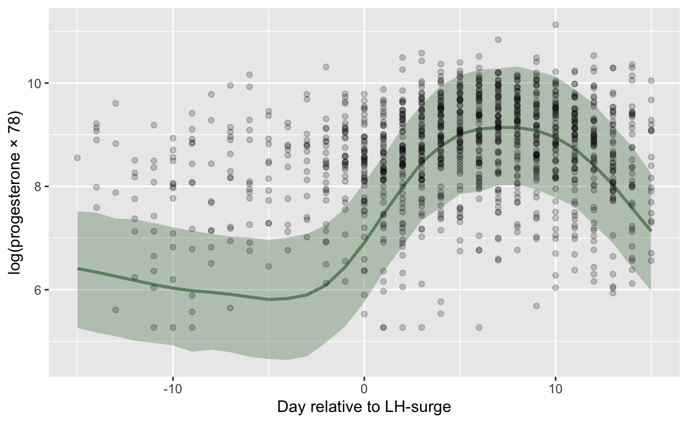

m_e2 <- rio::import("data/marcinkowska/manual_clean/estradiolALL.xlsx") %>% tibble()
n_distinct(na.omit(m_e2$ID))
[1] 88filter: removed one row (<1%), 1,534 rows remaininge2_dfs <- list.files("data/marcinkowska/manual_clean/", pattern = "estradiol ", full.names = T) %>% map(rio::import) %>% map(tibble)
New names:
* `` -> ...3
* `` -> ...4
* `` -> ...5New names:
* `` -> ...3
* `` -> ...4
* `` -> ...6New names:
* `` -> ...3
* `` -> ...4
* `` -> ...5
* `` -> ...6
* `` -> ...9New names:
* `` -> ...3
* `` -> ...4
* `` -> ...5
* `` -> ...8
New names:
* `` -> ...3
* `` -> ...4
* `` -> ...5
* `` -> ...8New names:
* `` -> ...3
* `` -> ...4
* `` -> ...5
* `` -> ...6
* `` -> ...7
* ...New names:
* `` -> ...6
* `` -> ...7
New names:
* `` -> ...6
* `` -> ...7New names:
* `` -> ...6
* `` -> ...7
* `` -> ...8New names:
* `` -> ...8
* `` -> ...9
* `` -> ...10
* `` -> ...11
* `` -> ...12
* ...New names:
* `` -> ...3
* `` -> ...4
* `` -> ...5
* `` -> ...6
* `` -> ...9New names:
* `` -> ...1
* `` -> ...4
* `` -> ...5
* `` -> ...6
* `` -> ...9New names:
* `` -> ...6
* `` -> ...7
* `` -> ...10
* `` -> ...11
* `` -> ...12
* ...New names:
* `` -> ...3
* `` -> ...4
* `` -> ...5
* `` -> ...8names(e2_dfs) <- list.files("data/marcinkowska/manual_clean/", pattern = "estradiol ")
m_e2_2 <- e2_dfs %>% map(. %>% select(ID, data, `pg/ml`, Meetings)) %>% bind_rows(.id = "batch")
select: dropped 6 variables (...3, ...4, ...5, Ovul, Forward, …)select: dropped 4 variables (...3, ...4, Avrg, ...6)select: dropped 5 variables (...3, ...4, ...5, ...6, ...9)select: dropped 4 variables (...3, ...4, ...5, ...8)
select: dropped 4 variables (...3, ...4, ...5, ...8)select: dropped 6 variables (...3, ...4, ...5, ...6, ...7, …)select: dropped 5 variables (I pomiar, II pomiar, średnia, ...6, ...7)
select: dropped 5 variables (I pomiar, II pomiar, średnia, ...6, ...7)select: dropped 6 variables (I pomiar, II pomiar, średnia, ...6, ...7, …)select: dropped 3 variables (I pomiar, II pomiar, średnia)select: dropped 9 variables (I pomiar, II pomiar, średnia, ...8, ...9, …)select: dropped 5 variables (...3, ...4, ...5, ...6, ...9)select: dropped 5 variables (...1, ...4, ...5, ...6, ...9)select: dropped 12 variables (I pomiar, II pomiar, średnia, ...6, ...7, …)select: dropped 4 variables (...3, ...4, ...5, ...8)n_distinct(na.omit(m_e2_2$ID))
[1] 102p4_dfs <- list.files("data/marcinkowska/manual_clean/", pattern = "progesteron", full.names = T) %>% map(rio::import) %>% map(tibble)
New names:
* `` -> ...3
* `` -> ...4
* `` -> ...5
* `` -> ...8
* `` -> ...9
* ...New names:
* `` -> ...3
* `` -> ...4
* `` -> ...5
* `` -> ...6
* `` -> ...9New names:
* `` -> ...3
* `` -> ...4
* `` -> ...5
* `` -> ...6New names:
* `` -> ...3
* `` -> ...4
* `` -> ...5
* `` -> ...8New names:
* `` -> ...3
* `` -> ...4
* `` -> ...5New names:
* `` -> ...3
* `` -> ...4
* `` -> ...5
* `` -> ...8New names:
* `` -> ...6
New names:
* `` -> ...6New names:
* `` -> ...8
* `` -> ...9
* `` -> ...10
* `` -> ...11
* `` -> ...12
* ...New names:
* `` -> ...3
* `` -> ...4
* `` -> ...9
* `` -> ...10
* `` -> ...11
* ...New names:
* `` -> ...3
* `` -> ...4
* `` -> ...6
* `` -> ...8
* `` -> ...10New names:
* `` -> ...8
New names:
* `` -> ...8names(p4_dfs) <- list.files("data/marcinkowska/manual_clean/", pattern = "progesteron")
m_p4 <- p4_dfs %>% map(. %>% select(ID, data, `pg/ml`, Meetings)) %>% bind_rows(.id = "batch")
select: dropped 10 variables (...3, ...4, ...5, ...8, ...9, …)select: dropped 5 variables (...3, ...4, ...5, ...6, ...9)select: dropped 4 variables (...3, ...4, ...5, ...6)select: dropped 4 variables (...3, ...4, ...5, ...8)select: dropped 3 variables (...3, ...4, ...5)select: dropped 4 variables (...3, ...4, ...5, ...8)select: dropped 3 variables (I pomiar, II pomiar, średnia)select: dropped 4 variables (I pomiar, II pomiar, średnia, ...6)
select: dropped 4 variables (I pomiar, II pomiar, średnia, ...6)select: dropped 3 variables (I pomiar, II pomiar, średnia)select: dropped 10 variables (I pomiar, II pomiar, średnia, ...8, ...9, …)select: dropped 9 variables (...3, ...4, średnia, A, ...9, …)select: dropped 6 variables (...3, ...4, PROGESTERON, ...6, ...8, …)select: dropped 4 variables (I pomiar, II pomiar, średnia, ...8)
select: dropped 4 variables (I pomiar, II pomiar, średnia, ...8)n_distinct(na.omit(m_p4$ID))
[1] 102m_p4 <- m_p4 %>% filter(!str_detect(data, "brak")) %>% filter(!str_detect(data, "BRAK")) %>%
mutate(date = lubridate::dmy(data)) %>%
filter(!is.na(date))
filter: removed 155 rows (8%), 1,675 rows remainingfilter: removed 37 rows (2%), 1,638 rows remainingWarning: 14 failed to parse.mutate: new variable 'date' (Date) with 310 unique values and 1% NAfilter: removed 14 rows (1%), 1,624 rows remainingWarning: 5 failed to parse.mutate: new variable 'date' (Date) with 288 unique values and <1% NAfilter: removed 6 rows (<1%), 1,528 rows remainingm_e2_2 <- m_e2_2 %>% filter(!str_detect(data, "brak")) %>% filter(!str_detect(data, "BRAK")) %>%
mutate(date = lubridate::dmy(data)) %>%
filter(!is.na(date))
filter: removed 149 rows (8%), 1,764 rows remainingfilter: removed 26 rows (1%), 1,738 rows remainingWarning: 1 failed to parse.mutate: new variable 'date' (Date) with 302 unique values and <1% NAfilter: removed one row (<1%), 1,737 rows remaininggroup_by: 2 grouping variables (ID, date)filter (grouped): removed all rows (100%)# A tibble: 0 × 15
# Groups: ID, date [0]
# … with 15 variables: ID <chr>, data <chr>, Pom1 <chr>, Pom2 <dbl>,
# Avrg <dbl>, St.Dev. <dbl>, %CV <dbl>, pg/ml <dbl>,
# Meetings <chr>, Ovul <chr>, For <dbl>, Back <dbl>, Batch <dbl>,
# Notes <chr>, date <date>group_by: 2 grouping variables (ID, date)
filter (grouped): removed all rows (100%)# A tibble: 0 × 6
# Groups: ID, date [0]
# … with 6 variables: batch <chr>, ID <chr>, data <chr>, pg/ml <dbl>,
# Meetings <chr>, date <date>group_by: 2 grouping variables (ID, date)filter (grouped): removed 1,622 rows (>99%), 2 rows remaining# A tibble: 2 × 6
# Groups: ID, date [1]
batch ID data `pg/ml` Meetings date
<chr> <chr> <chr> <dbl> <chr> <date>
1 progesteron 2 K 03 25 28 3… P 38 10 12… 58.3 S3 2015-12-10
2 progesteron 2 K 03 25 28 3… P 38 10 12… 59.4 <NA> 2015-12-10group_by: 2 grouping variables (ID, date)filter (grouped): removed one row (<1%), 1,623 rows remainingungroup: no grouping variablestestthat::expect_equal(0, m_e2_2 %>% group_by(ID) %>% mutate(date_o = date[order(date)]) %>% filter(date != date_o) %>% select(ID, date, date_o, batch) %>% nrow())
group_by: one grouping variable (ID)mutate (grouped): new variable 'date_o' (Date) with 301 unique values and 0% NAfilter (grouped): removed all rows (100%)select: dropped 3 variables (data, pg/ml, Meetings)testthat::expect_equal(0, m_p4 %>% group_by(ID) %>% mutate(date_o = date[order(date)]) %>% filter(date != date_o) %>% select(ID, date, date_o) %>% nrow)
group_by: one grouping variable (ID)mutate (grouped): new variable 'date_o' (Date) with 309 unique values and 0% NAfilter (grouped): removed all rows (100%)select: dropped 4 variables (batch, data, pg/ml, Meetings)testthat::expect_equal(0, m_e2 %>% group_by(ID) %>% mutate(date_o = date[order(date)]) %>% filter(date != date_o) %>% select(ID, date, date_o) %>% nrow)
group_by: one grouping variable (ID)mutate (grouped): new variable 'date_o' (Date) with 287 unique values and 0% NAfilter (grouped): removed all rows (100%)select: dropped 13 variables (data, Pom1, Pom2, Avrg, St.Dev., …)# cor/rank order avrg pg/ml
# m_e2 %>% group_by(Batch) %>% summarise(cor(Avrg, `pg/ml`, method = "s", use = "p"))
n_distinct(m_e2$ID)
[1] 88n_distinct(m_p4$ID)
[1] 101n_distinct(m_e2_2$ID)
[1] 102
K P
41 64
01 02 03 04 05 06 07 08 09 10 11
1 1 1 1 1 1 1 1 1 1 1
1196 1198 1199 12 1200 1201 1202 1205 1207 1208 1210
1 1 1 1 1 1 1 1 1 1 1
1211 1212 1215 1217 1218 1220 1221 1222 1223 1224 1225
1 1 1 1 1 1 1 1 1 1 1
1229 1230 1231 1232 1234 1236 1237 1238 1241 1243 1245
1 1 1 1 1 1 1 1 1 1 1
13 14 15 16 17 18 19 20 21 22 23
1 1 1 1 1 1 1 1 1 1 1
24 25 26 27 28 29 30 31 32 33 35
1 1 1 1 1 1 1 1 1 1 1
36 37 38 39 40 41 42 43 44 45 46
1 1 1 1 1 1 1 1 1 1 1
47 48 49 50 51 52 53 54 55 56 57
1 1 1 1 1 1 1 1 1 1 1
58 59 60 61 62 63 65 66 67 68 69
1 1 1 1 1 1 1 1 1 1 1
70 71 72 1201 1225 1229
1 1 1 1 1 1 [1] 105[1] 105[1] 102[1] 105intersect(m_e2$ID, m_p4$ID)
[1] "P 02" "P 07" "P 27" "P 45" "P 46" "P 47" "P 53"
[8] "P 03" "P 25" "P 28" "P 30" "P 32" "P 35" "P 37"
[15] "P 38" "P 48" "K 21" "K 31" "K 36" "K 39" "K 42"
[22] "K 51" "K 52" "K 58" "K 66" "K 04" "K 09" "K 16"
[29] "K 23" "K 26" "K 50" "K 57" "K 11" "K 14" "K 15"
[36] "K 17" "K 40" "K 41" "K 56" "K 67" "K 68" "K 69"
[43] "K 70" "K 71" "K 72" "K 13" "K 49" "K 54" "K 55"
[50] "K 63" "K 65" "K 43" "K 44" "K 59" "K 60" "K 61"
[57] "K 62" "P 1196" "P 1199" "P 1200" "P 1208" "P 1220" "P 1225"
[64] "P 1201" "P 1229" "P 1222" "P 1198" "P 1237" "P 1238" "P 1245"
[71] "P 1210" "P 1231" "P 1236" "P 1230" "P 1212" "P 1211" "P 1207"
[78] "P 1232" "P 1217" "P 1218" "P 1223" "P 1215" "P 1234" "P 1241"
[85] "P 1243" "P 1224" "P 1221"setdiff(m_e2$ID, m_p4$ID)
[1] "P 1205"setdiff(m_p4$ID, m_e2$ID)
[1] "P 08" "P 19" "P 18" "P 22" "P 12" "P 10" "P 33"
[8] "P 1202" "P 01" "P 05" "P 06" "P 20" "P 24" "P 29" intersect(m_e2_2$ID, m_p4$ID)
[1] "P 27" "P 07" "P 46" "P 47" "P 45" "P 53" "P 02"
[8] "P 1236" "P 1231" "P 1210" "P 1230" "P 1212" "P 1211" "P 1207"
[15] "P 1232" "P 1217" "P 1218" "P 1223" "P 1215" "P 1234" "P 1241"
[22] "P 1243" "P 1224" "P 1221" "P 28" "P 37" "P 32" "P 03"
[29] "P 48" "P 25" "P 30" "P 35" "P 38" "K 04" "K 21"
[36] "K 31" "K 36" "K 39" "K 42" "K 51" "K 52" "K 58"
[43] "K 66" "K 09" "K 16" "K 23" "K 26" "K 50" "K 57"
[50] "K 11" "K 14" "K 15" "K 17" "K 40" "K 41" "K 56"
[57] "K 67" "K 68" "K 69" "K 70" "K 71" "K 72" "K 13"
[64] "K 63" "K 65" "K 54" "K 55" "K 49" "K 59" "K 60"
[71] "K 61" "K 44" "K 43" "K 62" "P 1220" "P 1200" "P 1196"
[78] "P 1199" "P 1208" "P 1198" "P 1245" "P 1222" "P 1237" "P 1238"
[85] "P 08" "P 19" "P 18" "P 22" "P 12" "P 10" "P 33"
[92] "P 1202" "P 01" "P 05" "P 06" "P 20" "P 24" "P 29" setdiff(m_e2_2$ID, m_p4$ID)
[1] "P 1205" "P1225" "P1229" "P1201" setdiff(m_p4$ID, m_e2_2$ID)
[1] "P 1229" "P 1201" "P 1225"intersect(m_e2_2$ID, m_e2$ID)
[1] "P 27" "P 07" "P 46" "P 47" "P 45" "P 53" "P 02"
[8] "P 1236" "P 1231" "P 1210" "P 1205" "P 1230" "P 1212" "P 1211"
[15] "P 1207" "P 1232" "P 1217" "P 1218" "P 1223" "P 1215" "P 1234"
[22] "P 1241" "P 1243" "P 1224" "P 1221" "P 28" "P 37" "P 32"
[29] "P 03" "P 48" "P 25" "P 30" "P 35" "P 38" "K 04"
[36] "K 21" "K 31" "K 36" "K 39" "K 42" "K 51" "K 52"
[43] "K 58" "K 66" "K 09" "K 16" "K 23" "K 26" "K 50"
[50] "K 57" "K 11" "K 14" "K 15" "K 17" "K 40" "K 41"
[57] "K 56" "K 67" "K 68" "K 69" "K 70" "K 71" "K 72"
[64] "K 13" "K 63" "K 65" "K 54" "K 55" "K 49" "K 59"
[71] "K 60" "K 61" "K 44" "K 43" "K 62" "P 1220" "P 1200"
[78] "P 1196" "P 1199" "P 1208" "P 1198" "P 1245" "P 1222" "P 1237"
[85] "P 1238"setdiff(m_e2_2$ID, m_e2$ID)
[1] "P1225" "P1229" "P1201" "P 08" "P 19" "P 18" "P 22"
[8] "P 12" "P 10" "P 33" "P 1202" "P 01" "P 05" "P 06"
[15] "P 20" "P 24" "P 29" setdiff(m_e2$ID, m_e2_2$ID)
[1] "P 1225" "P 1201" "P 1229"character(0)[1] "P 1205" "P1225" "P1229" "P1201" marc <- m_e2 %>% rename(estradiol = `pg/ml`) %>% full_join(m_p4 %>% rename(progesterone = `pg/ml`), by = c("ID", "date"))
rename: renamed one variable (estradiol)rename: renamed one variable (progesterone)full_join: added 7 columns (batch.x, data.x, Meetings.x, batch.y, data.y, …) > rows only in x 658 > rows only in y 544 > matched rows 1,079 > ======= > rows total 2,281min(marc$estradiol, na.rm = T)
[1] 0min(marc$progesterone, na.rm = T)
[1] 0.13781
Pearson's product-moment correlation
data: log(marc$estradiol) and log(marc$progesterone)
t = 10.726, df = 1059, p-value < 2.2e-16
alternative hypothesis: true correlation is not equal to 0
95 percent confidence interval:
0.2577184 0.3663289
sample estimates:
cor
0.3130468 , , is.na(date) = FALSE
is.na(progesterone)
is.na(estradiol) FALSE TRUE
FALSE 1061 627
TRUE 527 66# m_p4 %>% filter(is.na(date)) %>% select(ID, data) %>% View
marc <- marc %>%
mutate(estradiol_cens = if_else(estradiol <= 0.4, "left", "none"),
estradiol = if_else(estradiol_cens == "left", 0.4, estradiol)
) %>%
mutate(
progesterone_cens = if_else(progesterone <= 2.5, "left", "none"),
progesterone = if_else(progesterone_cens == "left", 2.5, progesterone)
)
mutate: changed 14 values (1%) of 'estradiol' (0 new NA) new variable 'estradiol_cens' (character) with 3 unique values and 26% NAmutate: changed 16 values (1%) of 'progesterone' (0 new NA) new variable 'progesterone_cens' (character) with 3 unique values and 30% NAThe legend for colours: First blue is the follicular days. Grey is when they started doing LH tests. Green/blue is the luteal phase. If the hour is written in the cell, it means the meeting took place then. Pink is when they report a positive result of the LH test, pink hour is on the date that the peri-ovulatory meeting took place. Yellow is a peri-ovulatory meeting, but in a cycle that was potentially anovulatory - participants did not report positive results of the LH test. Red is the first day of the next menses.
A032: red # bg_colors[23] AF05: pink # bg_colors[44] AD19: pink # bg_colors[61] DS51: pink # EL66: pink # bg_colors[90]
## STRATEGY A
mensdates_orig <- rio::import("data/marcinkowska/manual_clean/KalendarzPróbekRubenNew_3.xlsx") %>%
rename(cycle_length = Cykl,
LH_peak = LHPeakWhen) %>%
mutate_all(as.character) %>%
mutate(
LH_peak = coalesce(as.numeric(WeakLinesWhen), as.numeric(LH_peak)),
cycle_length = as.numeric(cycle_length)) %>%
pivot_longer(-c(ID, cycle_length, LH_peak, LHpeakPresent, WeakLinesPresent, WeakLinesWhen)) %>%
mutate(date = as.Date(as.numeric(name), origin = "1899-12-30"))
Warning in read_fun(path = enc2native(normalizePath(path)), sheet_i =
sheet, : Expecting numeric in AA2 / R2C27: got a dateWarning in read_fun(path = enc2native(normalizePath(path)), sheet_i =
sheet, : Expecting numeric in AQ2 / R2C43: got a dateWarning in read_fun(path = enc2native(normalizePath(path)), sheet_i =
sheet, : Expecting numeric in AV2 / R2C48: got a dateWarning in read_fun(path = enc2native(normalizePath(path)), sheet_i =
sheet, : Expecting numeric in M3 / R3C13: got a dateWarning in read_fun(path = enc2native(normalizePath(path)), sheet_i =
sheet, : Expecting numeric in Y3 / R3C25: got a dateWarning in read_fun(path = enc2native(normalizePath(path)), sheet_i =
sheet, : Expecting numeric in AP4 / R4C42: got a dateWarning in read_fun(path = enc2native(normalizePath(path)), sheet_i =
sheet, : Expecting numeric in P5 / R5C16: got a dateWarning in read_fun(path = enc2native(normalizePath(path)), sheet_i =
sheet, : Expecting numeric in AA5 / R5C27: got a dateWarning in read_fun(path = enc2native(normalizePath(path)), sheet_i =
sheet, : Expecting numeric in AT6 / R6C46: got a dateWarning in read_fun(path = enc2native(normalizePath(path)), sheet_i =
sheet, : Expecting numeric in BJ6 / R6C62: got a dateWarning in read_fun(path = enc2native(normalizePath(path)), sheet_i =
sheet, : Expecting numeric in AT7 / R7C46: got a dateWarning in read_fun(path = enc2native(normalizePath(path)), sheet_i =
sheet, : Expecting numeric in AA8 / R8C27: got a dateWarning in read_fun(path = enc2native(normalizePath(path)), sheet_i =
sheet, : Expecting numeric in AQ8 / R8C43: got a dateWarning in read_fun(path = enc2native(normalizePath(path)), sheet_i =
sheet, : Expecting numeric in Q9 / R9C17: got a dateWarning in read_fun(path = enc2native(normalizePath(path)), sheet_i =
sheet, : Expecting numeric in AN9 / R9C40: got a dateWarning in read_fun(path = enc2native(normalizePath(path)), sheet_i =
sheet, : Expecting numeric in U10 / R10C21: got a dateWarning in read_fun(path = enc2native(normalizePath(path)), sheet_i =
sheet, : Expecting numeric in AE10 / R10C31: got a dateWarning in read_fun(path = enc2native(normalizePath(path)), sheet_i =
sheet, : Expecting numeric in AR10 / R10C44: got a dateWarning in read_fun(path = enc2native(normalizePath(path)), sheet_i =
sheet, : Expecting numeric in Y11 / R11C25: got a dateWarning in read_fun(path = enc2native(normalizePath(path)), sheet_i =
sheet, : Expecting numeric in AF11 / R11C32: got a dateWarning in read_fun(path = enc2native(normalizePath(path)), sheet_i =
sheet, : Expecting numeric in AP11 / R11C42: got a dateWarning in read_fun(path = enc2native(normalizePath(path)), sheet_i =
sheet, : Expecting numeric in AP12 / R12C42: got a dateWarning in read_fun(path = enc2native(normalizePath(path)), sheet_i =
sheet, : Expecting numeric in AV12 / R12C48: got a dateWarning in read_fun(path = enc2native(normalizePath(path)), sheet_i =
sheet, : Expecting numeric in P13 / R13C16: got a dateWarning in read_fun(path = enc2native(normalizePath(path)), sheet_i =
sheet, : Expecting numeric in AH13 / R13C34: got a dateWarning in read_fun(path = enc2native(normalizePath(path)), sheet_i =
sheet, : Expecting numeric in AM13 / R13C39: got a dateWarning in read_fun(path = enc2native(normalizePath(path)), sheet_i =
sheet, : Expecting numeric in U14 / R14C21: got a dateWarning in read_fun(path = enc2native(normalizePath(path)), sheet_i =
sheet, : Expecting numeric in AR14 / R14C44: got a dateWarning in read_fun(path = enc2native(normalizePath(path)), sheet_i =
sheet, : Expecting numeric in AO15 / R15C41: got a dateWarning in read_fun(path = enc2native(normalizePath(path)), sheet_i =
sheet, : Expecting numeric in BC15 / R15C55: got a dateWarning in read_fun(path = enc2native(normalizePath(path)), sheet_i =
sheet, : Expecting numeric in BJ15 / R15C62: got a dateWarning in read_fun(path = enc2native(normalizePath(path)), sheet_i =
sheet, : Expecting numeric in AQ16 / R16C43: got a dateWarning in read_fun(path = enc2native(normalizePath(path)), sheet_i =
sheet, : Expecting numeric in T17 / R17C20: got a dateWarning in read_fun(path = enc2native(normalizePath(path)), sheet_i =
sheet, : Expecting numeric in AL17 / R17C38: got a dateWarning in read_fun(path = enc2native(normalizePath(path)), sheet_i =
sheet, : Expecting numeric in AE18 / R18C31: got a dateWarning in read_fun(path = enc2native(normalizePath(path)), sheet_i =
sheet, : Expecting numeric in AQ18 / R18C43: got a dateWarning in read_fun(path = enc2native(normalizePath(path)), sheet_i =
sheet, : Expecting numeric in P19 / R19C16: got a dateWarning in read_fun(path = enc2native(normalizePath(path)), sheet_i =
sheet, : Expecting numeric in X19 / R19C24: got a dateWarning in read_fun(path = enc2native(normalizePath(path)), sheet_i =
sheet, : Expecting numeric in T20 / R20C20: got a dateWarning in read_fun(path = enc2native(normalizePath(path)), sheet_i =
sheet, : Expecting numeric in AL20 / R20C38: got a dateWarning in read_fun(path = enc2native(normalizePath(path)), sheet_i =
sheet, : Expecting numeric in AT20 / R20C46: got a dateWarning in read_fun(path = enc2native(normalizePath(path)), sheet_i =
sheet, : Expecting numeric in N21 / R21C14: got a dateWarning in read_fun(path = enc2native(normalizePath(path)), sheet_i =
sheet, : Expecting numeric in Y21 / R21C25: got a dateWarning in read_fun(path = enc2native(normalizePath(path)), sheet_i =
sheet, : Expecting numeric in AX22 / R22C50: got a dateWarning in read_fun(path = enc2native(normalizePath(path)), sheet_i =
sheet, : Expecting numeric in BF22 / R22C58: got a dateWarning in read_fun(path = enc2native(normalizePath(path)), sheet_i =
sheet, : Expecting numeric in AH23 / R23C34: got a dateWarning in read_fun(path = enc2native(normalizePath(path)), sheet_i =
sheet, : Expecting numeric in AR23 / R23C44: got a dateWarning in read_fun(path = enc2native(normalizePath(path)), sheet_i =
sheet, : Expecting numeric in AO24 / R24C41: got a dateWarning in read_fun(path = enc2native(normalizePath(path)), sheet_i =
sheet, : Expecting numeric in AG25 / R25C33: got a dateWarning in read_fun(path = enc2native(normalizePath(path)), sheet_i =
sheet, : Expecting numeric in AL25 / R25C38: got a dateWarning in read_fun(path = enc2native(normalizePath(path)), sheet_i =
sheet, : Expecting numeric in AV25 / R25C48: got a dateWarning in read_fun(path = enc2native(normalizePath(path)), sheet_i =
sheet, : Expecting numeric in AT26 / R26C46: got a dateWarning in read_fun(path = enc2native(normalizePath(path)), sheet_i =
sheet, : Expecting numeric in AQ27 / R27C43: got a dateWarning in read_fun(path = enc2native(normalizePath(path)), sheet_i =
sheet, : Expecting numeric in AW27 / R27C49: got a dateWarning in read_fun(path = enc2native(normalizePath(path)), sheet_i =
sheet, : Expecting numeric in BF27 / R27C58: got a dateWarning in read_fun(path = enc2native(normalizePath(path)), sheet_i =
sheet, : Expecting numeric in AP28 / R28C42: got a dateWarning in read_fun(path = enc2native(normalizePath(path)), sheet_i =
sheet, : Expecting numeric in T29 / R29C20: got a dateWarning in read_fun(path = enc2native(normalizePath(path)), sheet_i =
sheet, : Expecting numeric in AP29 / R29C42: got a dateWarning in read_fun(path = enc2native(normalizePath(path)), sheet_i =
sheet, : Expecting numeric in AM30 / R30C39: got a dateWarning in read_fun(path = enc2native(normalizePath(path)), sheet_i =
sheet, : Expecting numeric in AX30 / R30C50: got a dateWarning in read_fun(path = enc2native(normalizePath(path)), sheet_i =
sheet, : Expecting numeric in N31 / R31C14: got a dateWarning in read_fun(path = enc2native(normalizePath(path)), sheet_i =
sheet, : Expecting numeric in M32 / R32C13: got a dateWarning in read_fun(path = enc2native(normalizePath(path)), sheet_i =
sheet, : Expecting numeric in U32 / R32C21: got a dateWarning in read_fun(path = enc2native(normalizePath(path)), sheet_i =
sheet, : Expecting numeric in AH33 / R33C34: got a dateWarning in read_fun(path = enc2native(normalizePath(path)), sheet_i =
sheet, : Expecting numeric in AT33 / R33C46: got a dateWarning in read_fun(path = enc2native(normalizePath(path)), sheet_i =
sheet, : Expecting numeric in CX34 / R34C102: got a dateWarning in read_fun(path = enc2native(normalizePath(path)), sheet_i =
sheet, : Expecting numeric in DF34 / R34C110: got a dateWarning in read_fun(path = enc2native(normalizePath(path)), sheet_i =
sheet, : Expecting numeric in EI35 / R35C139: got a dateWarning in read_fun(path = enc2native(normalizePath(path)), sheet_i =
sheet, : Expecting numeric in EQ35 / R35C147: got a dateWarning in read_fun(path = enc2native(normalizePath(path)), sheet_i =
sheet, : Expecting numeric in EB36 / R36C132: got a dateWarning in read_fun(path = enc2native(normalizePath(path)), sheet_i =
sheet, : Expecting numeric in DN37 / R37C118: got a dateWarning in read_fun(path = enc2native(normalizePath(path)), sheet_i =
sheet, : Expecting numeric in EB37 / R37C132: got a dateWarning in read_fun(path = enc2native(normalizePath(path)), sheet_i =
sheet, : Expecting numeric in EF37 / R37C136: got a dateWarning in read_fun(path = enc2native(normalizePath(path)), sheet_i =
sheet, : Expecting numeric in DH38 / R38C112: got a dateWarning in read_fun(path = enc2native(normalizePath(path)), sheet_i =
sheet, : Expecting numeric in DR38 / R38C122: got a dateWarning in read_fun(path = enc2native(normalizePath(path)), sheet_i =
sheet, : Expecting numeric in EB38 / R38C132: got a dateWarning in read_fun(path = enc2native(normalizePath(path)), sheet_i =
sheet, : Expecting numeric in CV39 / R39C100: got a dateWarning in read_fun(path = enc2native(normalizePath(path)), sheet_i =
sheet, : Expecting numeric in DQ39 / R39C121: got a dateWarning in read_fun(path = enc2native(normalizePath(path)), sheet_i =
sheet, : Expecting numeric in DX39 / R39C128: got a dateWarning in read_fun(path = enc2native(normalizePath(path)), sheet_i =
sheet, : Expecting numeric in CZ40 / R40C104: got a dateWarning in read_fun(path = enc2native(normalizePath(path)), sheet_i =
sheet, : Expecting numeric in DC41 / R41C107: got a dateWarning in read_fun(path = enc2native(normalizePath(path)), sheet_i =
sheet, : Expecting numeric in DO41 / R41C119: got a dateWarning in read_fun(path = enc2native(normalizePath(path)), sheet_i =
sheet, : Expecting numeric in DV41 / R41C126: got a dateWarning in read_fun(path = enc2native(normalizePath(path)), sheet_i =
sheet, : Expecting numeric in DN42 / R42C118: got a dateWarning in read_fun(path = enc2native(normalizePath(path)), sheet_i =
sheet, : Expecting numeric in DV42 / R42C126: got a dateWarning in read_fun(path = enc2native(normalizePath(path)), sheet_i =
sheet, : Expecting numeric in DO43 / R43C119: got a dateWarning in read_fun(path = enc2native(normalizePath(path)), sheet_i =
sheet, : Expecting numeric in GH44 / R44C190: got a dateWarning in read_fun(path = enc2native(normalizePath(path)), sheet_i =
sheet, : Expecting numeric in GX44 / R44C206: got a dateWarning in read_fun(path = enc2native(normalizePath(path)), sheet_i =
sheet, : Expecting numeric in DJ45 / R45C114: got a dateWarning in read_fun(path = enc2native(normalizePath(path)), sheet_i =
sheet, : Expecting numeric in EF45 / R45C136: got a dateWarning in read_fun(path = enc2native(normalizePath(path)), sheet_i =
sheet, : Expecting numeric in DN46 / R46C118: got a dateWarning in read_fun(path = enc2native(normalizePath(path)), sheet_i =
sheet, : Expecting numeric in EB46 / R46C132: got a dateWarning in read_fun(path = enc2native(normalizePath(path)), sheet_i =
sheet, : Expecting numeric in EI46 / R46C139: got a dateWarning in read_fun(path = enc2native(normalizePath(path)), sheet_i =
sheet, : Expecting numeric in DJ47 / R47C114: got a dateWarning in read_fun(path = enc2native(normalizePath(path)), sheet_i =
sheet, : Expecting numeric in EF47 / R47C136: got a dateWarning in read_fun(path = enc2native(normalizePath(path)), sheet_i =
sheet, : Expecting numeric in LK48 / R48C323: got a dateWarning in read_fun(path = enc2native(normalizePath(path)), sheet_i =
sheet, : Expecting numeric in LW48 / R48C335: got a dateWarning in read_fun(path = enc2native(normalizePath(path)), sheet_i =
sheet, : Expecting numeric in ME48 / R48C343: got a dateWarning in read_fun(path = enc2native(normalizePath(path)), sheet_i =
sheet, : Expecting numeric in HL50 / R50C220: got a dateWarning in read_fun(path = enc2native(normalizePath(path)), sheet_i =
sheet, : Expecting numeric in DC51 / R51C107: got a dateWarning in read_fun(path = enc2native(normalizePath(path)), sheet_i =
sheet, : Expecting numeric in DN51 / R51C118: got a dateWarning in read_fun(path = enc2native(normalizePath(path)), sheet_i =
sheet, : Expecting numeric in DH52 / R52C112: got a dateWarning in read_fun(path = enc2native(normalizePath(path)), sheet_i =
sheet, : Expecting numeric in EE53 / R53C135: got a dateWarning in read_fun(path = enc2native(normalizePath(path)), sheet_i =
sheet, : Expecting numeric in EQ53 / R53C147: got a dateWarning in read_fun(path = enc2native(normalizePath(path)), sheet_i =
sheet, : Expecting numeric in DH54 / R54C112: got a dateWarning in read_fun(path = enc2native(normalizePath(path)), sheet_i =
sheet, : Expecting numeric in DV54 / R54C126: got a dateWarning in read_fun(path = enc2native(normalizePath(path)), sheet_i =
sheet, : Expecting numeric in EB55 / R55C132: got a dateWarning in read_fun(path = enc2native(normalizePath(path)), sheet_i =
sheet, : Expecting numeric in EB56 / R56C132: got a dateWarning in read_fun(path = enc2native(normalizePath(path)), sheet_i =
sheet, : Expecting numeric in DW57 / R57C127: got a dateWarning in read_fun(path = enc2native(normalizePath(path)), sheet_i =
sheet, : Expecting numeric in DN58 / R58C118: got a dateWarning in read_fun(path = enc2native(normalizePath(path)), sheet_i =
sheet, : Expecting numeric in EF58 / R58C136: got a dateWarning in read_fun(path = enc2native(normalizePath(path)), sheet_i =
sheet, : Expecting numeric in EE59 / R59C135: got a dateWarning in read_fun(path = enc2native(normalizePath(path)), sheet_i =
sheet, : Expecting numeric in EI60 / R60C139: got a dateWarning in read_fun(path = enc2native(normalizePath(path)), sheet_i =
sheet, : Expecting numeric in EB61 / R61C132: got a dateWarning in read_fun(path = enc2native(normalizePath(path)), sheet_i =
sheet, : Expecting numeric in EF62 / R62C136: got a dateWarning in read_fun(path = enc2native(normalizePath(path)), sheet_i =
sheet, : Expecting numeric in ET62 / R62C150: got a dateWarning in read_fun(path = enc2native(normalizePath(path)), sheet_i =
sheet, : Expecting numeric in EF63 / R63C136: got a dateWarning in read_fun(path = enc2native(normalizePath(path)), sheet_i =
sheet, : Expecting numeric in EB65 / R65C132: got a dateWarning in read_fun(path = enc2native(normalizePath(path)), sheet_i =
sheet, : Expecting numeric in EI66 / R66C139: got a dateWarning in read_fun(path = enc2native(normalizePath(path)), sheet_i =
sheet, : Expecting numeric in EQ66 / R66C147: got a dateWarning in read_fun(path = enc2native(normalizePath(path)), sheet_i =
sheet, : Expecting numeric in ES68 / R68C149: got a dateWarning in read_fun(path = enc2native(normalizePath(path)), sheet_i =
sheet, : Expecting numeric in EI69 / R69C139: got a dateWarning in read_fun(path = enc2native(normalizePath(path)), sheet_i =
sheet, : Expecting numeric in ET70 / R70C150: got a dateWarning in read_fun(path = enc2native(normalizePath(path)), sheet_i =
sheet, : Expecting numeric in FN70 / R70C170: got a dateWarning in read_fun(path = enc2native(normalizePath(path)), sheet_i =
sheet, : Expecting numeric in FU71 / R71C177: got a dateWarning in read_fun(path = enc2native(normalizePath(path)), sheet_i =
sheet, : Expecting numeric in LP72 / R72C328: got a dateWarning in read_fun(path = enc2native(normalizePath(path)), sheet_i =
sheet, : Expecting numeric in LX72 / R72C336: got a dateWarning in read_fun(path = enc2native(normalizePath(path)), sheet_i =
sheet, : Expecting numeric in MF72 / R72C344: got a dateWarning in read_fun(path = enc2native(normalizePath(path)), sheet_i =
sheet, : Expecting numeric in JH73 / R73C268: got a dateWarning in read_fun(path = enc2native(normalizePath(path)), sheet_i =
sheet, : Expecting numeric in JV73 / R73C282: got a dateWarning in read_fun(path = enc2native(normalizePath(path)), sheet_i =
sheet, : Expecting numeric in KB73 / R73C288: got a dateWarning in read_fun(path = enc2native(normalizePath(path)), sheet_i =
sheet, : Expecting numeric in FI74 / R74C165: got a dateWarning in read_fun(path = enc2native(normalizePath(path)), sheet_i =
sheet, : Expecting numeric in FO74 / R74C171: got a dateWarning in read_fun(path = enc2native(normalizePath(path)), sheet_i =
sheet, : Expecting numeric in EI75 / R75C139: got a dateWarning in read_fun(path = enc2native(normalizePath(path)), sheet_i =
sheet, : Expecting numeric in ES76 / R76C149: got a dateWarning in read_fun(path = enc2native(normalizePath(path)), sheet_i =
sheet, : Expecting numeric in FO76 / R76C171: got a dateWarning in read_fun(path = enc2native(normalizePath(path)), sheet_i =
sheet, : Expecting numeric in FG77 / R77C163: got a dateWarning in read_fun(path = enc2native(normalizePath(path)), sheet_i =
sheet, : Expecting numeric in FR77 / R77C174: got a dateWarning in read_fun(path = enc2native(normalizePath(path)), sheet_i =
sheet, : Expecting numeric in FY77 / R77C181: got a dateWarning in read_fun(path = enc2native(normalizePath(path)), sheet_i =
sheet, : Expecting numeric in FF78 / R78C162: got a dateWarning in read_fun(path = enc2native(normalizePath(path)), sheet_i =
sheet, : Expecting numeric in FK79 / R79C167: got a dateWarning in read_fun(path = enc2native(normalizePath(path)), sheet_i =
sheet, : Expecting numeric in ES80 / R80C149: got a dateWarning in read_fun(path = enc2native(normalizePath(path)), sheet_i =
sheet, : Expecting numeric in FN80 / R80C170: got a dateWarning in read_fun(path = enc2native(normalizePath(path)), sheet_i =
sheet, : Expecting numeric in FI81 / R81C165: got a dateWarning in read_fun(path = enc2native(normalizePath(path)), sheet_i =
sheet, : Expecting numeric in FY81 / R81C181: got a dateWarning in read_fun(path = enc2native(normalizePath(path)), sheet_i =
sheet, : Expecting numeric in GF81 / R81C188: got a dateWarning in read_fun(path = enc2native(normalizePath(path)), sheet_i =
sheet, : Expecting numeric in FR82 / R82C174: got a dateWarning in read_fun(path = enc2native(normalizePath(path)), sheet_i =
sheet, : Expecting numeric in FU83 / R83C177: got a dateWarning in read_fun(path = enc2native(normalizePath(path)), sheet_i =
sheet, : Expecting numeric in GP84 / R84C198: got a dateWarning in read_fun(path = enc2native(normalizePath(path)), sheet_i =
sheet, : Expecting numeric in GX84 / R84C206: got a dateWarning in read_fun(path = enc2native(normalizePath(path)), sheet_i =
sheet, : Expecting numeric in HH84 / R84C216: got a dateWarning in read_fun(path = enc2native(normalizePath(path)), sheet_i =
sheet, : Expecting numeric in FR85 / R85C174: got a dateWarning in read_fun(path = enc2native(normalizePath(path)), sheet_i =
sheet, : Expecting numeric in GX86 / R86C206: got a dateWarning in read_fun(path = enc2native(normalizePath(path)), sheet_i =
sheet, : Expecting numeric in HL86 / R86C220: got a dateWarning in read_fun(path = enc2native(normalizePath(path)), sheet_i =
sheet, : Expecting numeric in FY87 / R87C181: got a dateWarning in read_fun(path = enc2native(normalizePath(path)), sheet_i =
sheet, : Expecting numeric in HA87 / R87C209: got a dateWarning in read_fun(path = enc2native(normalizePath(path)), sheet_i =
sheet, : Expecting numeric in IF88 / R88C240: got a dateWarning in read_fun(path = enc2native(normalizePath(path)), sheet_i =
sheet, : Expecting numeric in IN88 / R88C248: got a dateWarning in read_fun(path = enc2native(normalizePath(path)), sheet_i =
sheet, : Expecting numeric in IT88 / R88C254: got a dateWarning in read_fun(path = enc2native(normalizePath(path)), sheet_i =
sheet, : Expecting numeric in GG89 / R89C189: got a dateWarning in read_fun(path = enc2native(normalizePath(path)), sheet_i =
sheet, : Expecting numeric in HB89 / R89C210: got a dateWarning in read_fun(path = enc2native(normalizePath(path)), sheet_i =
sheet, : Expecting numeric in GF90 / R90C188: got a dateWarning in read_fun(path = enc2native(normalizePath(path)), sheet_i =
sheet, : Expecting numeric in HC90 / R90C211: got a dateWarning in read_fun(path = enc2native(normalizePath(path)), sheet_i =
sheet, : Expecting numeric in HP91 / R91C224: got a dateWarning in read_fun(path = enc2native(normalizePath(path)), sheet_i =
sheet, : Expecting numeric in IZ92 / R92C260: got a dateWarning in read_fun(path = enc2native(normalizePath(path)), sheet_i =
sheet, : Expecting numeric in JF92 / R92C266: got a dateWarning in read_fun(path = enc2native(normalizePath(path)), sheet_i =
sheet, : Expecting numeric in JN92 / R92C274: got a dateWarning in read_fun(path = enc2native(normalizePath(path)), sheet_i =
sheet, : Expecting numeric in HL93 / R93C220: got a dateWarning in read_fun(path = enc2native(normalizePath(path)), sheet_i =
sheet, : Expecting numeric in HH94 / R94C216: got a dateWarning in read_fun(path = enc2native(normalizePath(path)), sheet_i =
sheet, : Expecting numeric in HO94 / R94C223: got a dateWarning in read_fun(path = enc2native(normalizePath(path)), sheet_i =
sheet, : Expecting numeric in HK95 / R95C219: got a dateWarning in read_fun(path = enc2native(normalizePath(path)), sheet_i =
sheet, : Expecting numeric in HO96 / R96C223: got a dateWarning in read_fun(path = enc2native(normalizePath(path)), sheet_i =
sheet, : Expecting numeric in IF96 / R96C240: got a dateWarning in read_fun(path = enc2native(normalizePath(path)), sheet_i =
sheet, : Expecting numeric in IM96 / R96C247: got a dateWarning in read_fun(path = enc2native(normalizePath(path)), sheet_i =
sheet, : Expecting numeric in HA97 / R97C209: got a dateWarning in read_fun(path = enc2native(normalizePath(path)), sheet_i =
sheet, : Expecting numeric in HO97 / R97C223: got a dateWarning in read_fun(path = enc2native(normalizePath(path)), sheet_i =
sheet, : Expecting numeric in KU98 / R98C307: got a dateWarning in read_fun(path = enc2native(normalizePath(path)), sheet_i =
sheet, : Expecting numeric in LK98 / R98C323: got a dateWarning in read_fun(path = enc2native(normalizePath(path)), sheet_i =
sheet, : Expecting numeric in JL99 / R99C272: got a dateWarning in read_fun(path = enc2native(normalizePath(path)), sheet_i =
sheet, : Expecting numeric in JZ99 / R99C286: got a dateWarning in read_fun(path = enc2native(normalizePath(path)), sheet_i =
sheet, : Expecting numeric in JU100 / R100C281: got a dateWarning in read_fun(path = enc2native(normalizePath(path)), sheet_i =
sheet, : Expecting numeric in KG100 / R100C293: got a dateWarning in read_fun(path = enc2native(normalizePath(path)), sheet_i =
sheet, : Expecting numeric in KO100 / R100C301: got a dateWarning in read_fun(path = enc2native(normalizePath(path)), sheet_i =
sheet, : Expecting numeric in JV101 / R101C282: got a dateWarning in read_fun(path = enc2native(normalizePath(path)), sheet_i =
sheet, : Expecting numeric in KD101 / R101C290: got a dateWarning in read_fun(path = enc2native(normalizePath(path)), sheet_i =
sheet, : Expecting numeric in KP101 / R101C302: got a dateWarning in read_fun(path = enc2native(normalizePath(path)), sheet_i =
sheet, : Expecting numeric in JZ102 / R102C286: got a dateWarning in read_fun(path = enc2native(normalizePath(path)), sheet_i =
sheet, : Expecting numeric in KQ102 / R102C303: got a dateWarning in read_fun(path = enc2native(normalizePath(path)), sheet_i =
sheet, : Expecting numeric in LI103 / R103C321: got a dateWarning in read_fun(path = enc2native(normalizePath(path)), sheet_i =
sheet, : Expecting numeric in CV104 / R104C100: got a dateWarning in read_fun(path = enc2native(normalizePath(path)), sheet_i =
sheet, : Expecting numeric in CW104 / R104C101: got a dateWarning in read_fun(path = enc2native(normalizePath(path)), sheet_i =
sheet, : Expecting numeric in CX104 / R104C102: got a dateWarning in read_fun(path = enc2native(normalizePath(path)), sheet_i =
sheet, : Expecting numeric in CY104 / R104C103: got a dateWarning in read_fun(path = enc2native(normalizePath(path)), sheet_i =
sheet, : Expecting numeric in CZ104 / R104C104: got a dateWarning in read_fun(path = enc2native(normalizePath(path)), sheet_i =
sheet, : Expecting numeric in DA104 / R104C105: got a dateWarning in read_fun(path = enc2native(normalizePath(path)), sheet_i =
sheet, : Expecting numeric in DB104 / R104C106: got a dateWarning in read_fun(path = enc2native(normalizePath(path)), sheet_i =
sheet, : Expecting numeric in DC104 / R104C107: got a dateWarning in read_fun(path = enc2native(normalizePath(path)), sheet_i =
sheet, : Expecting numeric in DD104 / R104C108: got a dateWarning in read_fun(path = enc2native(normalizePath(path)), sheet_i =
sheet, : Expecting numeric in DE104 / R104C109: got a dateWarning in read_fun(path = enc2native(normalizePath(path)), sheet_i =
sheet, : Expecting numeric in DF104 / R104C110: got a dateWarning in read_fun(path = enc2native(normalizePath(path)), sheet_i =
sheet, : Expecting numeric in DG104 / R104C111: got a dateWarning in read_fun(path = enc2native(normalizePath(path)), sheet_i =
sheet, : Expecting numeric in DH104 / R104C112: got a dateWarning in read_fun(path = enc2native(normalizePath(path)), sheet_i =
sheet, : Expecting numeric in DI104 / R104C113: got a dateWarning in read_fun(path = enc2native(normalizePath(path)), sheet_i =
sheet, : Expecting numeric in DJ104 / R104C114: got a dateWarning in read_fun(path = enc2native(normalizePath(path)), sheet_i =
sheet, : Expecting numeric in DL104 / R104C116: got a dateWarning in read_fun(path = enc2native(normalizePath(path)), sheet_i =
sheet, : Expecting numeric in DM104 / R104C117: got a dateWarning in read_fun(path = enc2native(normalizePath(path)), sheet_i =
sheet, : Expecting numeric in DN104 / R104C118: got a dateWarning in read_fun(path = enc2native(normalizePath(path)), sheet_i =
sheet, : Expecting numeric in DO104 / R104C119: got a dateWarning in read_fun(path = enc2native(normalizePath(path)), sheet_i =
sheet, : Expecting numeric in DP104 / R104C120: got a dateWarning in read_fun(path = enc2native(normalizePath(path)), sheet_i =
sheet, : Expecting numeric in DQ104 / R104C121: got a dateWarning in read_fun(path = enc2native(normalizePath(path)), sheet_i =
sheet, : Expecting numeric in DR104 / R104C122: got a dateWarning in read_fun(path = enc2native(normalizePath(path)), sheet_i =
sheet, : Expecting numeric in DV104 / R104C126: got a dateWarning in read_fun(path = enc2native(normalizePath(path)), sheet_i =
sheet, : Expecting numeric in DW104 / R104C127: got a dateWarning in read_fun(path = enc2native(normalizePath(path)), sheet_i =
sheet, : Expecting numeric in DX104 / R104C128: got a dateWarning in read_fun(path = enc2native(normalizePath(path)), sheet_i =
sheet, : Expecting numeric in EA104 / R104C131: got a dateWarning in read_fun(path = enc2native(normalizePath(path)), sheet_i =
sheet, : Expecting numeric in EB104 / R104C132: got a dateWarning in read_fun(path = enc2native(normalizePath(path)), sheet_i =
sheet, : Expecting numeric in ED104 / R104C134: got a dateWarning in read_fun(path = enc2native(normalizePath(path)), sheet_i =
sheet, : Expecting numeric in EE104 / R104C135: got a dateWarning in read_fun(path = enc2native(normalizePath(path)), sheet_i =
sheet, : Expecting numeric in EF104 / R104C136: got a dateWarning in read_fun(path = enc2native(normalizePath(path)), sheet_i =
sheet, : Expecting numeric in EI104 / R104C139: got a dateWarning in read_fun(path = enc2native(normalizePath(path)), sheet_i =
sheet, : Expecting numeric in EK104 / R104C141: got a dateWarning in read_fun(path = enc2native(normalizePath(path)), sheet_i =
sheet, : Expecting numeric in EN104 / R104C144: got a dateWarning in read_fun(path = enc2native(normalizePath(path)), sheet_i =
sheet, : Expecting numeric in EO104 / R104C145: got a dateWarning in read_fun(path = enc2native(normalizePath(path)), sheet_i =
sheet, : Expecting numeric in EP104 / R104C146: got a dateWarning in read_fun(path = enc2native(normalizePath(path)), sheet_i =
sheet, : Expecting numeric in EQ104 / R104C147: got a dateWarning in read_fun(path = enc2native(normalizePath(path)), sheet_i =
sheet, : Expecting numeric in ES104 / R104C149: got a dateWarning in read_fun(path = enc2native(normalizePath(path)), sheet_i =
sheet, : Expecting numeric in ET104 / R104C150: got a dateWarning in read_fun(path = enc2native(normalizePath(path)), sheet_i =
sheet, : Expecting numeric in EU104 / R104C151: got a dateWarning in read_fun(path = enc2native(normalizePath(path)), sheet_i =
sheet, : Expecting numeric in FA104 / R104C157: got a dateWarning in read_fun(path = enc2native(normalizePath(path)), sheet_i =
sheet, : Expecting numeric in FB104 / R104C158: got a dateWarning in read_fun(path = enc2native(normalizePath(path)), sheet_i =
sheet, : Expecting numeric in FE104 / R104C161: got a dateWarning in read_fun(path = enc2native(normalizePath(path)), sheet_i =
sheet, : Expecting numeric in FF104 / R104C162: got a dateWarning in read_fun(path = enc2native(normalizePath(path)), sheet_i =
sheet, : Expecting numeric in FG104 / R104C163: got a dateWarning in read_fun(path = enc2native(normalizePath(path)), sheet_i =
sheet, : Expecting numeric in FI104 / R104C165: got a dateWarning in read_fun(path = enc2native(normalizePath(path)), sheet_i =
sheet, : Expecting numeric in FK104 / R104C167: got a dateWarning in read_fun(path = enc2native(normalizePath(path)), sheet_i =
sheet, : Expecting numeric in FM104 / R104C169: got a dateWarning in read_fun(path = enc2native(normalizePath(path)), sheet_i =
sheet, : Expecting numeric in FN104 / R104C170: got a dateWarning in read_fun(path = enc2native(normalizePath(path)), sheet_i =
sheet, : Expecting numeric in FO104 / R104C171: got a dateWarning in read_fun(path = enc2native(normalizePath(path)), sheet_i =
sheet, : Expecting numeric in FP104 / R104C172: got a dateWarning in read_fun(path = enc2native(normalizePath(path)), sheet_i =
sheet, : Expecting numeric in FQ104 / R104C173: got a dateWarning in read_fun(path = enc2native(normalizePath(path)), sheet_i =
sheet, : Expecting numeric in FR104 / R104C174: got a dateWarning in read_fun(path = enc2native(normalizePath(path)), sheet_i =
sheet, : Expecting numeric in FT104 / R104C176: got a dateWarning in read_fun(path = enc2native(normalizePath(path)), sheet_i =
sheet, : Expecting numeric in FU104 / R104C177: got a dateWarning in read_fun(path = enc2native(normalizePath(path)), sheet_i =
sheet, : Expecting numeric in FV104 / R104C178: got a dateWarning in read_fun(path = enc2native(normalizePath(path)), sheet_i =
sheet, : Expecting numeric in FW104 / R104C179: got a dateWarning in read_fun(path = enc2native(normalizePath(path)), sheet_i =
sheet, : Expecting numeric in FX104 / R104C180: got a dateWarning in read_fun(path = enc2native(normalizePath(path)), sheet_i =
sheet, : Expecting numeric in FY104 / R104C181: got a dateWarning in read_fun(path = enc2native(normalizePath(path)), sheet_i =
sheet, : Expecting numeric in FZ104 / R104C182: got a dateWarning in read_fun(path = enc2native(normalizePath(path)), sheet_i =
sheet, : Expecting numeric in GA104 / R104C183: got a dateWarning in read_fun(path = enc2native(normalizePath(path)), sheet_i =
sheet, : Expecting numeric in GB104 / R104C184: got a dateWarning in read_fun(path = enc2native(normalizePath(path)), sheet_i =
sheet, : Expecting numeric in GD104 / R104C186: got a dateWarning in read_fun(path = enc2native(normalizePath(path)), sheet_i =
sheet, : Expecting numeric in GE104 / R104C187: got a dateWarning in read_fun(path = enc2native(normalizePath(path)), sheet_i =
sheet, : Expecting numeric in GF104 / R104C188: got a dateWarning in read_fun(path = enc2native(normalizePath(path)), sheet_i =
sheet, : Expecting numeric in GG104 / R104C189: got a dateWarning in read_fun(path = enc2native(normalizePath(path)), sheet_i =
sheet, : Expecting numeric in GH104 / R104C190: got a dateWarning in read_fun(path = enc2native(normalizePath(path)), sheet_i =
sheet, : Expecting numeric in GJ104 / R104C192: got a dateWarning in read_fun(path = enc2native(normalizePath(path)), sheet_i =
sheet, : Expecting numeric in GK104 / R104C193: got a dateWarning in read_fun(path = enc2native(normalizePath(path)), sheet_i =
sheet, : Expecting numeric in GL104 / R104C194: got a dateWarning in read_fun(path = enc2native(normalizePath(path)), sheet_i =
sheet, : Expecting numeric in GM104 / R104C195: got a dateWarning in read_fun(path = enc2native(normalizePath(path)), sheet_i =
sheet, : Expecting numeric in GN104 / R104C196: got a dateWarning in read_fun(path = enc2native(normalizePath(path)), sheet_i =
sheet, : Expecting numeric in GO104 / R104C197: got a dateWarning in read_fun(path = enc2native(normalizePath(path)), sheet_i =
sheet, : Expecting numeric in GP104 / R104C198: got a dateWarning in read_fun(path = enc2native(normalizePath(path)), sheet_i =
sheet, : Expecting numeric in GQ104 / R104C199: got a dateWarning in read_fun(path = enc2native(normalizePath(path)), sheet_i =
sheet, : Expecting numeric in GV104 / R104C204: got a dateWarning in read_fun(path = enc2native(normalizePath(path)), sheet_i =
sheet, : Expecting numeric in GW104 / R104C205: got a dateWarning in read_fun(path = enc2native(normalizePath(path)), sheet_i =
sheet, : Expecting numeric in GX104 / R104C206: got a dateWarning in read_fun(path = enc2native(normalizePath(path)), sheet_i =
sheet, : Expecting numeric in GY104 / R104C207: got a dateWarning in read_fun(path = enc2native(normalizePath(path)), sheet_i =
sheet, : Expecting numeric in GZ104 / R104C208: got a dateWarning in read_fun(path = enc2native(normalizePath(path)), sheet_i =
sheet, : Expecting numeric in HA104 / R104C209: got a dateWarning in read_fun(path = enc2native(normalizePath(path)), sheet_i =
sheet, : Expecting numeric in HB104 / R104C210: got a dateWarning in read_fun(path = enc2native(normalizePath(path)), sheet_i =
sheet, : Expecting numeric in HC104 / R104C211: got a dateWarning in read_fun(path = enc2native(normalizePath(path)), sheet_i =
sheet, : Expecting numeric in HE104 / R104C213: got a dateWarning in read_fun(path = enc2native(normalizePath(path)), sheet_i =
sheet, : Expecting numeric in HF104 / R104C214: got a dateWarning in read_fun(path = enc2native(normalizePath(path)), sheet_i =
sheet, : Expecting numeric in HG104 / R104C215: got a dateWarning in read_fun(path = enc2native(normalizePath(path)), sheet_i =
sheet, : Expecting numeric in HH104 / R104C216: got a dateWarning in read_fun(path = enc2native(normalizePath(path)), sheet_i =
sheet, : Expecting numeric in HJ104 / R104C218: got a dateWarning in read_fun(path = enc2native(normalizePath(path)), sheet_i =
sheet, : Expecting numeric in HK104 / R104C219: got a dateWarning in read_fun(path = enc2native(normalizePath(path)), sheet_i =
sheet, : Expecting numeric in HL104 / R104C220: got a dateWarning in read_fun(path = enc2native(normalizePath(path)), sheet_i =
sheet, : Expecting numeric in HM104 / R104C221: got a dateWarning in read_fun(path = enc2native(normalizePath(path)), sheet_i =
sheet, : Expecting numeric in HN104 / R104C222: got a dateWarning in read_fun(path = enc2native(normalizePath(path)), sheet_i =
sheet, : Expecting numeric in HO104 / R104C223: got a dateWarning in read_fun(path = enc2native(normalizePath(path)), sheet_i =
sheet, : Expecting numeric in HP104 / R104C224: got a dateWarning in read_fun(path = enc2native(normalizePath(path)), sheet_i =
sheet, : Expecting numeric in HQ104 / R104C225: got a dateWarning in read_fun(path = enc2native(normalizePath(path)), sheet_i =
sheet, : Expecting numeric in HR104 / R104C226: got a dateWarning in read_fun(path = enc2native(normalizePath(path)), sheet_i =
sheet, : Expecting numeric in HY104 / R104C233: got a dateWarning in read_fun(path = enc2native(normalizePath(path)), sheet_i =
sheet, : Expecting numeric in HZ104 / R104C234: got a dateWarning in read_fun(path = enc2native(normalizePath(path)), sheet_i =
sheet, : Expecting numeric in IA104 / R104C235: got a dateWarning in read_fun(path = enc2native(normalizePath(path)), sheet_i =
sheet, : Expecting numeric in IC104 / R104C237: got a dateWarning in read_fun(path = enc2native(normalizePath(path)), sheet_i =
sheet, : Expecting numeric in ID104 / R104C238: got a dateWarning in read_fun(path = enc2native(normalizePath(path)), sheet_i =
sheet, : Expecting numeric in IE104 / R104C239: got a dateWarning in read_fun(path = enc2native(normalizePath(path)), sheet_i =
sheet, : Expecting numeric in IF104 / R104C240: got a dateWarning in read_fun(path = enc2native(normalizePath(path)), sheet_i =
sheet, : Expecting numeric in IG104 / R104C241: got a dateWarning in read_fun(path = enc2native(normalizePath(path)), sheet_i =
sheet, : Expecting numeric in IH104 / R104C242: got a dateWarning in read_fun(path = enc2native(normalizePath(path)), sheet_i =
sheet, : Expecting numeric in II104 / R104C243: got a dateWarning in read_fun(path = enc2native(normalizePath(path)), sheet_i =
sheet, : Expecting numeric in IJ104 / R104C244: got a dateWarning in read_fun(path = enc2native(normalizePath(path)), sheet_i =
sheet, : Expecting numeric in IK104 / R104C245: got a dateWarning in read_fun(path = enc2native(normalizePath(path)), sheet_i =
sheet, : Expecting numeric in IL104 / R104C246: got a dateWarning in read_fun(path = enc2native(normalizePath(path)), sheet_i =
sheet, : Expecting numeric in IM104 / R104C247: got a dateWarning in read_fun(path = enc2native(normalizePath(path)), sheet_i =
sheet, : Expecting numeric in IN104 / R104C248: got a dateWarning in read_fun(path = enc2native(normalizePath(path)), sheet_i =
sheet, : Expecting numeric in IO104 / R104C249: got a dateWarning in read_fun(path = enc2native(normalizePath(path)), sheet_i =
sheet, : Expecting numeric in IP104 / R104C250: got a dateWarning in read_fun(path = enc2native(normalizePath(path)), sheet_i =
sheet, : Expecting numeric in IQ104 / R104C251: got a dateWarning in read_fun(path = enc2native(normalizePath(path)), sheet_i =
sheet, : Expecting numeric in IR104 / R104C252: got a dateWarning in read_fun(path = enc2native(normalizePath(path)), sheet_i =
sheet, : Expecting numeric in IS104 / R104C253: got a dateWarning in read_fun(path = enc2native(normalizePath(path)), sheet_i =
sheet, : Expecting numeric in IT104 / R104C254: got a dateWarning in read_fun(path = enc2native(normalizePath(path)), sheet_i =
sheet, : Expecting numeric in IU104 / R104C255: got a dateWarning in read_fun(path = enc2native(normalizePath(path)), sheet_i =
sheet, : Expecting numeric in IV104 / R104C256: got a dateWarning in read_fun(path = enc2native(normalizePath(path)), sheet_i =
sheet, : Expecting numeric in IW104 / R104C257: got a dateWarning in read_fun(path = enc2native(normalizePath(path)), sheet_i =
sheet, : Expecting numeric in IX104 / R104C258: got a dateWarning in read_fun(path = enc2native(normalizePath(path)), sheet_i =
sheet, : Expecting numeric in IY104 / R104C259: got a dateWarning in read_fun(path = enc2native(normalizePath(path)), sheet_i =
sheet, : Expecting numeric in IZ104 / R104C260: got a dateWarning in read_fun(path = enc2native(normalizePath(path)), sheet_i =
sheet, : Expecting numeric in JA104 / R104C261: got a dateWarning in read_fun(path = enc2native(normalizePath(path)), sheet_i =
sheet, : Expecting numeric in JB104 / R104C262: got a dateWarning in read_fun(path = enc2native(normalizePath(path)), sheet_i =
sheet, : Expecting numeric in JC104 / R104C263: got a dateWarning in read_fun(path = enc2native(normalizePath(path)), sheet_i =
sheet, : Expecting numeric in JD104 / R104C264: got a dateWarning in read_fun(path = enc2native(normalizePath(path)), sheet_i =
sheet, : Expecting numeric in JE104 / R104C265: got a dateWarning in read_fun(path = enc2native(normalizePath(path)), sheet_i =
sheet, : Expecting numeric in JF104 / R104C266: got a dateWarning in read_fun(path = enc2native(normalizePath(path)), sheet_i =
sheet, : Expecting numeric in JG104 / R104C267: got a dateWarning in read_fun(path = enc2native(normalizePath(path)), sheet_i =
sheet, : Expecting numeric in JH104 / R104C268: got a dateWarning in read_fun(path = enc2native(normalizePath(path)), sheet_i =
sheet, : Expecting numeric in JI104 / R104C269: got a dateWarning in read_fun(path = enc2native(normalizePath(path)), sheet_i =
sheet, : Expecting numeric in JJ104 / R104C270: got a dateWarning in read_fun(path = enc2native(normalizePath(path)), sheet_i =
sheet, : Expecting numeric in JK104 / R104C271: got a dateWarning in read_fun(path = enc2native(normalizePath(path)), sheet_i =
sheet, : Expecting numeric in JL104 / R104C272: got a dateWarning in read_fun(path = enc2native(normalizePath(path)), sheet_i =
sheet, : Expecting numeric in JM104 / R104C273: got a dateWarning in read_fun(path = enc2native(normalizePath(path)), sheet_i =
sheet, : Expecting numeric in JN104 / R104C274: got a dateWarning in read_fun(path = enc2native(normalizePath(path)), sheet_i =
sheet, : Expecting numeric in JO104 / R104C275: got a dateWarning in read_fun(path = enc2native(normalizePath(path)), sheet_i =
sheet, : Expecting numeric in JP104 / R104C276: got a dateWarning in read_fun(path = enc2native(normalizePath(path)), sheet_i =
sheet, : Expecting numeric in JQ104 / R104C277: got a dateWarning in read_fun(path = enc2native(normalizePath(path)), sheet_i =
sheet, : Expecting numeric in JS104 / R104C279: got a dateWarning in read_fun(path = enc2native(normalizePath(path)), sheet_i =
sheet, : Expecting numeric in JT104 / R104C280: got a dateWarning in read_fun(path = enc2native(normalizePath(path)), sheet_i =
sheet, : Expecting numeric in JU104 / R104C281: got a dateWarning in read_fun(path = enc2native(normalizePath(path)), sheet_i =
sheet, : Expecting numeric in JV104 / R104C282: got a dateWarning in read_fun(path = enc2native(normalizePath(path)), sheet_i =
sheet, : Expecting numeric in JW104 / R104C283: got a dateWarning in read_fun(path = enc2native(normalizePath(path)), sheet_i =
sheet, : Expecting numeric in JY104 / R104C285: got a dateWarning in read_fun(path = enc2native(normalizePath(path)), sheet_i =
sheet, : Expecting numeric in JZ104 / R104C286: got a dateWarning in read_fun(path = enc2native(normalizePath(path)), sheet_i =
sheet, : Expecting numeric in KA104 / R104C287: got a dateWarning in read_fun(path = enc2native(normalizePath(path)), sheet_i =
sheet, : Expecting numeric in KB104 / R104C288: got a dateWarning in read_fun(path = enc2native(normalizePath(path)), sheet_i =
sheet, : Expecting numeric in KC104 / R104C289: got a dateWarning in read_fun(path = enc2native(normalizePath(path)), sheet_i =
sheet, : Expecting numeric in KD104 / R104C290: got a dateWarning in read_fun(path = enc2native(normalizePath(path)), sheet_i =
sheet, : Expecting numeric in KE104 / R104C291: got a dateWarning in read_fun(path = enc2native(normalizePath(path)), sheet_i =
sheet, : Expecting numeric in KG104 / R104C293: got a dateWarning in read_fun(path = enc2native(normalizePath(path)), sheet_i =
sheet, : Expecting numeric in KH104 / R104C294: got a dateWarning in read_fun(path = enc2native(normalizePath(path)), sheet_i =
sheet, : Expecting numeric in KJ104 / R104C296: got a dateWarning in read_fun(path = enc2native(normalizePath(path)), sheet_i =
sheet, : Expecting numeric in KK104 / R104C297: got a dateWarning in read_fun(path = enc2native(normalizePath(path)), sheet_i =
sheet, : Expecting numeric in KL104 / R104C298: got a dateWarning in read_fun(path = enc2native(normalizePath(path)), sheet_i =
sheet, : Expecting numeric in KM104 / R104C299: got a dateWarning in read_fun(path = enc2native(normalizePath(path)), sheet_i =
sheet, : Expecting numeric in KN104 / R104C300: got a dateWarning in read_fun(path = enc2native(normalizePath(path)), sheet_i =
sheet, : Expecting numeric in KO104 / R104C301: got a dateWarning in read_fun(path = enc2native(normalizePath(path)), sheet_i =
sheet, : Expecting numeric in KP104 / R104C302: got a dateWarning in read_fun(path = enc2native(normalizePath(path)), sheet_i =
sheet, : Expecting numeric in KQ104 / R104C303: got a dateWarning in read_fun(path = enc2native(normalizePath(path)), sheet_i =
sheet, : Expecting numeric in KR104 / R104C304: got a dateWarning in read_fun(path = enc2native(normalizePath(path)), sheet_i =
sheet, : Expecting numeric in KS104 / R104C305: got a dateWarning in read_fun(path = enc2native(normalizePath(path)), sheet_i =
sheet, : Expecting numeric in KT104 / R104C306: got a dateWarning in read_fun(path = enc2native(normalizePath(path)), sheet_i =
sheet, : Expecting numeric in KU104 / R104C307: got a dateWarning in read_fun(path = enc2native(normalizePath(path)), sheet_i =
sheet, : Expecting numeric in KX104 / R104C310: got a dateWarning in read_fun(path = enc2native(normalizePath(path)), sheet_i =
sheet, : Expecting numeric in KY104 / R104C311: got a dateWarning in read_fun(path = enc2native(normalizePath(path)), sheet_i =
sheet, : Expecting numeric in KZ104 / R104C312: got a dateWarning in read_fun(path = enc2native(normalizePath(path)), sheet_i =
sheet, : Expecting numeric in LA104 / R104C313: got a dateWarning in read_fun(path = enc2native(normalizePath(path)), sheet_i =
sheet, : Expecting numeric in LB104 / R104C314: got a dateWarning in read_fun(path = enc2native(normalizePath(path)), sheet_i =
sheet, : Expecting numeric in LC104 / R104C315: got a dateWarning in read_fun(path = enc2native(normalizePath(path)), sheet_i =
sheet, : Expecting numeric in LD104 / R104C316: got a dateWarning in read_fun(path = enc2native(normalizePath(path)), sheet_i =
sheet, : Expecting numeric in LE104 / R104C317: got a dateWarning in read_fun(path = enc2native(normalizePath(path)), sheet_i =
sheet, : Expecting numeric in LF104 / R104C318: got a dateWarning in read_fun(path = enc2native(normalizePath(path)), sheet_i =
sheet, : Expecting numeric in LG104 / R104C319: got a dateWarning in read_fun(path = enc2native(normalizePath(path)), sheet_i =
sheet, : Expecting numeric in LI104 / R104C321: got a dateWarning in read_fun(path = enc2native(normalizePath(path)), sheet_i =
sheet, : Expecting numeric in LJ104 / R104C322: got a dateWarning in read_fun(path = enc2native(normalizePath(path)), sheet_i =
sheet, : Expecting numeric in LK104 / R104C323: got a dateWarning in read_fun(path = enc2native(normalizePath(path)), sheet_i =
sheet, : Expecting numeric in LL104 / R104C324: got a dateWarning in read_fun(path = enc2native(normalizePath(path)), sheet_i =
sheet, : Expecting numeric in LM104 / R104C325: got a dateWarning in read_fun(path = enc2native(normalizePath(path)), sheet_i =
sheet, : Expecting numeric in LN104 / R104C326: got a dateWarning in read_fun(path = enc2native(normalizePath(path)), sheet_i =
sheet, : Expecting numeric in LO104 / R104C327: got a dateWarning in read_fun(path = enc2native(normalizePath(path)), sheet_i =
sheet, : Expecting numeric in LP104 / R104C328: got a dateWarning in read_fun(path = enc2native(normalizePath(path)), sheet_i =
sheet, : Expecting numeric in LQ104 / R104C329: got a dateWarning in read_fun(path = enc2native(normalizePath(path)), sheet_i =
sheet, : Expecting numeric in LR104 / R104C330: got a dateWarning in read_fun(path = enc2native(normalizePath(path)), sheet_i =
sheet, : Expecting numeric in LS104 / R104C331: got a dateWarning in read_fun(path = enc2native(normalizePath(path)), sheet_i =
sheet, : Expecting numeric in LT104 / R104C332: got a dateWarning in read_fun(path = enc2native(normalizePath(path)), sheet_i =
sheet, : Expecting numeric in LU104 / R104C333: got a dateWarning in read_fun(path = enc2native(normalizePath(path)), sheet_i =
sheet, : Expecting numeric in LV104 / R104C334: got a dateWarning in read_fun(path = enc2native(normalizePath(path)), sheet_i =
sheet, : Expecting numeric in LW104 / R104C335: got a dateWarning in read_fun(path = enc2native(normalizePath(path)), sheet_i =
sheet, : Expecting numeric in LX104 / R104C336: got a dateWarning in read_fun(path = enc2native(normalizePath(path)), sheet_i =
sheet, : Expecting numeric in LY104 / R104C337: got a dateWarning in read_fun(path = enc2native(normalizePath(path)), sheet_i =
sheet, : Expecting numeric in LZ104 / R104C338: got a dateWarning in read_fun(path = enc2native(normalizePath(path)), sheet_i =
sheet, : Expecting numeric in MA104 / R104C339: got a dateWarning in read_fun(path = enc2native(normalizePath(path)), sheet_i =
sheet, : Expecting numeric in MB104 / R104C340: got a dateWarning in read_fun(path = enc2native(normalizePath(path)), sheet_i =
sheet, : Expecting numeric in MC104 / R104C341: got a dateWarning in read_fun(path = enc2native(normalizePath(path)), sheet_i =
sheet, : Expecting numeric in MD104 / R104C342: got a dateWarning in read_fun(path = enc2native(normalizePath(path)), sheet_i =
sheet, : Expecting numeric in ME104 / R104C343: got a dateWarning in read_fun(path = enc2native(normalizePath(path)), sheet_i =
sheet, : Expecting numeric in MF104 / R104C344: got a dateWarning in read_fun(path = enc2native(normalizePath(path)), sheet_i =
sheet, : Expecting numeric in MG104 / R104C345: got a dateWarning in read_fun(path = enc2native(normalizePath(path)), sheet_i =
sheet, : Expecting numeric in MH104 / R104C346: got a dateWarning in read_fun(path = enc2native(normalizePath(path)), sheet_i =
sheet, : Expecting numeric in MI104 / R104C347: got a dateWarning in read_fun(path = enc2native(normalizePath(path)), sheet_i =
sheet, : Expecting numeric in MJ104 / R104C348: got a dateWarning in read_fun(path = enc2native(normalizePath(path)), sheet_i =
sheet, : Expecting numeric in MK104 / R104C349: got a dateWarning in read_fun(path = enc2native(normalizePath(path)), sheet_i =
sheet, : Expecting numeric in ML104 / R104C350: got a daterename: renamed 2 variables (LH_peak, cycle_length)mutate_all: converted 'LHpeakPresent' from double to character (0 new NA) converted 'LH_peak' from double to character (0 new NA) converted 'WeakLinesPresent' from double to character (0 new NA) converted 'WeakLinesWhen' from double to character (0 new NA) converted 'cycle_length' from double to character (0 new NA) converted '42185' from double to character (0 new NA) converted '42186' from double to character (0 new NA) converted '42187' from double to character (0 new NA) converted '42188' from double to character (0 new NA) converted '42189' from double to character (0 new NA) converted '42190' from double to character (0 new NA) converted '42191' from double to character (0 new NA) converted '42192' from double to character (0 new NA) converted '42193' from double to character (0 new NA) converted '42194' from double to character (0 new NA) converted '42195' from double to character (0 new NA) converted '42196' from double to character (0 new NA) converted '42197' from double to character (0 new NA) converted '42198' from double to character (0 new NA) converted '42199' from double to character (0 new NA) converted '42201' from double to character (0 new NA) converted '42202' from double to character (0 new NA) converted '42203' from double to character (0 new NA) converted '42205' from double to character (0 new NA) converted '42209' from double to character (0 new NA) converted '42210' from double to character (0 new NA) converted '42211' from double to character (0 new NA) converted '42212' from double to character (0 new NA) converted '42216' from double to character (0 new NA) converted '42217' from double to character (0 new NA) converted '42218' from double to character (0 new NA) converted '42219' from double to character (0 new NA) converted '42220' from double to character (0 new NA) converted '42221' from double to character (0 new NA) converted '42222' from double to character (0 new NA) converted '42223' from double to character (0 new NA) converted '42224' from double to character (0 new NA) converted '42225' from double to character (0 new NA) converted '42226' from double to character (0 new NA) converted '42227' from double to character (0 new NA) converted '42228' from double to character (0 new NA) converted '42231' from double to character (0 new NA) converted '42232' from double to character (0 new NA) converted '42233' from double to character (0 new NA) converted '42235' from double to character (0 new NA) converted '42236' from double to character (0 new NA) converted '42237' from double to character (0 new NA) converted '42238' from double to character (0 new NA) converted '42239' from double to character (0 new NA) converted '42240' from double to character (0 new NA) converted '42241' from double to character (0 new NA) converted '42242' from double to character (0 new NA) converted '42243' from double to character (0 new NA) converted '42244' from double to character (0 new NA) converted '42245' from double to character (0 new NA) converted '42246' from double to character (0 new NA) converted '42247' from double to character (0 new NA) converted '42248' from double to character (0 new NA) converted '42249' from double to character (0 new NA) converted '42250' from double to character (0 new NA) converted '42251' from logical to character (0 new NA) converted '42252' from logical to character (0 new NA) converted '42253' from logical to character (0 new NA) converted '42254' from logical to character (0 new NA) converted '42255' from logical to character (0 new NA) converted '42256' from logical to character (0 new NA) converted '42257' from logical to character (0 new NA) converted '42258' from logical to character (0 new NA) converted '42259' from logical to character (0 new NA) converted '42260' from logical to character (0 new NA) converted '42261' from logical to character (0 new NA) converted '42262' from double to character (0 new NA) converted '42263' from double to character (0 new NA) converted '42264' from double to character (0 new NA) converted '42265' from double to character (0 new NA) converted '42266' from double to character (0 new NA) converted '42267' from double to character (0 new NA) converted '42268' from double to character (0 new NA) converted '42269' from double to character (0 new NA) converted '42270' from double to character (0 new NA) converted '42271' from double to character (0 new NA) converted '42272' from double to character (0 new NA) converted '42273' from double to character (0 new NA) converted '42278' from double to character (0 new NA) converted '42279' from double to character (0 new NA) converted '42280' from double to character (0 new NA) converted '42281' from double to character (0 new NA) converted '42282' from double to character (0 new NA) converted '42283' from double to character (0 new NA) converted '42284' from double to character (0 new NA) converted '42285' from double to character (0 new NA) converted '42286' from double to character (0 new NA) converted '42287' from double to character (0 new NA) converted '42288' from double to character (0 new NA) converted '42289' from double to character (0 new NA) converted '42290' from double to character (0 new NA) converted '42291' from double to character (0 new NA) converted '42292' from double to character (0 new NA) converted '42294' from double to character (0 new NA) converted '42295' from double to character (0 new NA) converted '42296' from double to character (0 new NA) converted '42297' from double to character (0 new NA) converted '42298' from double to character (0 new NA) converted '42299' from double to character (0 new NA) converted '42300' from double to character (0 new NA) converted '42304' from double to character (0 new NA) converted '42305' from double to character (0 new NA) converted '42306' from double to character (0 new NA) converted '42309' from double to character (0 new NA) converted '42310' from double to character (0 new NA) converted '42312' from double to character (0 new NA) converted '42313' from double to character (0 new NA) converted '42314' from double to character (0 new NA) converted '42317' from double to character (0 new NA) converted '42319' from double to character (0 new NA) converted '42322' from double to character (0 new NA) converted '42323' from double to character (0 new NA) converted '42324' from double to character (0 new NA) converted '42325' from double to character (0 new NA) converted '42327' from double to character (0 new NA) converted '42328' from double to character (0 new NA) converted '42329' from double to character (0 new NA) converted '42335' from double to character (0 new NA) converted '42336' from double to character (0 new NA) converted '42339' from double to character (0 new NA) converted '42340' from double to character (0 new NA) converted '42341' from double to character (0 new NA) converted '42343' from double to character (0 new NA) converted '42345' from double to character (0 new NA) converted '42347' from double to character (0 new NA) converted '42348' from double to character (0 new NA) converted '42349' from double to character (0 new NA) converted '42350' from double to character (0 new NA) converted '42351' from double to character (0 new NA) converted '42352' from double to character (0 new NA) converted '42354' from double to character (0 new NA) converted '42355' from double to character (0 new NA) converted '42356' from double to character (0 new NA) converted '42357' from double to character (0 new NA) converted '42358' from double to character (0 new NA) converted '42359' from double to character (0 new NA) converted '42360' from double to character (0 new NA) converted '42361' from double to character (0 new NA) converted '42362' from double to character (0 new NA) converted '42364' from double to character (0 new NA) converted '42365' from double to character (0 new NA) converted '42366' from double to character (0 new NA) converted '42367' from double to character (0 new NA) converted '42368' from double to character (0 new NA) converted '42370' from double to character (0 new NA) converted '42371' from double to character (0 new NA) converted '42372' from double to character (0 new NA) converted '42373' from double to character (0 new NA) converted '42374' from double to character (0 new NA) converted '42375' from double to character (0 new NA) converted '42376' from double to character (0 new NA) converted '42377' from double to character (0 new NA) converted '42382' from double to character (0 new NA) converted '42383' from double to character (0 new NA) converted '42384' from double to character (0 new NA) converted '42385' from double to character (0 new NA) converted '42386' from double to character (0 new NA) converted '42387' from double to character (0 new NA) converted '42388' from double to character (0 new NA) converted '42389' from double to character (0 new NA) converted '42391' from double to character (0 new NA) converted '42392' from double to character (0 new NA) converted '42393' from double to character (0 new NA) converted '42394' from double to character (0 new NA) converted '42396' from double to character (0 new NA) converted '42397' from double to character (0 new NA) converted '42398' from double to character (0 new NA) converted '42399' from double to character (0 new NA) converted '42400' from double to character (0 new NA) converted '42401' from double to character (0 new NA) converted '42402' from double to character (0 new NA) converted '42403' from double to character (0 new NA) converted '42404' from double to character (0 new NA) converted '42411' from double to character (0 new NA) converted '42412' from double to character (0 new NA) converted '42413' from double to character (0 new NA) converted '42415' from double to character (0 new NA) converted '42416' from double to character (0 new NA) converted '42417' from double to character (0 new NA) converted '42418' from double to character (0 new NA) converted '42419' from double to character (0 new NA) converted '42420' from double to character (0 new NA) converted '42421' from double to character (0 new NA) converted '42422' from double to character (0 new NA) converted '42423' from double to character (0 new NA) converted '42424' from double to character (0 new NA) converted '42425' from double to character (0 new NA) converted '42426' from double to character (0 new NA) converted '42427' from double to character (0 new NA) converted '42428' from double to character (0 new NA) converted '42429' from double to character (0 new NA) converted '42430' from double to character (0 new NA) converted '42431' from double to character (0 new NA) converted '42432' from double to character (0 new NA) converted '42433' from double to character (0 new NA) converted '42434' from double to character (0 new NA) converted '42435' from double to character (0 new NA) converted '42436' from double to character (0 new NA) converted '42437' from double to character (0 new NA) converted '42438' from double to character (0 new NA) converted '42439' from double to character (0 new NA) converted '42440' from double to character (0 new NA) converted '42441' from double to character (0 new NA) converted '42442' from double to character (0 new NA) converted '42443' from double to character (0 new NA) converted '42444' from double to character (0 new NA) converted '42445' from double to character (0 new NA) converted '42446' from double to character (0 new NA) converted '42447' from double to character (0 new NA) converted '42448' from double to character (0 new NA) converted '42449' from double to character (0 new NA) converted '42450' from double to character (0 new NA) converted '42451' from double to character (0 new NA) converted '42452' from double to character (0 new NA) converted '42453' from double to character (0 new NA) converted '42454' from double to character (0 new NA) converted '42455' from double to character (0 new NA) converted '42457' from double to character (0 new NA) converted '42458' from double to character (0 new NA) converted '42459' from double to character (0 new NA) converted '42460' from double to character (0 new NA) converted '42461' from double to character (0 new NA) converted '42463' from double to character (0 new NA) converted '42464' from double to character (0 new NA) converted '42465' from double to character (0 new NA) converted '42466' from double to character (0 new NA) converted '42467' from double to character (0 new NA) converted '42468' from double to character (0 new NA) converted '42469' from double to character (0 new NA) converted '42471' from double to character (0 new NA) converted '42472' from double to character (0 new NA) converted '42474' from double to character (0 new NA) converted '42475' from double to character (0 new NA) converted '42476' from double to character (0 new NA) converted '42477' from double to character (0 new NA) converted '42478' from double to character (0 new NA) converted '42479' from double to character (0 new NA) converted '42480' from double to character (0 new NA) converted '42481' from double to character (0 new NA) converted '42482' from double to character (0 new NA) converted '42483' from double to character (0 new NA) converted '42484' from double to character (0 new NA) converted '42485' from double to character (0 new NA) converted '42488' from double to character (0 new NA) converted '42489' from double to character (0 new NA) converted '42490' from double to character (0 new NA) converted '42491' from double to character (0 new NA) converted '42492' from double to character (0 new NA) converted '42493' from double to character (0 new NA) converted '42494' from double to character (0 new NA) converted '42495' from double to character (0 new NA) converted '42496' from double to character (0 new NA) converted '42497' from double to character (0 new NA) converted '42499' from double to character (0 new NA) converted '42500' from double to character (0 new NA) converted '42501' from double to character (0 new NA) converted '42502' from double to character (0 new NA) converted '42503' from double to character (0 new NA) converted '42504' from double to character (0 new NA) converted '42505' from double to character (0 new NA) converted '42506' from double to character (0 new NA) converted '42507' from double to character (0 new NA) converted '42508' from double to character (0 new NA) converted '42509' from double to character (0 new NA) converted '42510' from double to character (0 new NA) converted '42511' from double to character (0 new NA) converted '42512' from double to character (0 new NA) converted '42513' from double to character (0 new NA) converted '42514' from double to character (0 new NA) converted '42515' from double to character (0 new NA) converted '42516' from double to character (0 new NA) converted '42517' from double to character (0 new NA) converted '42518' from double to character (0 new NA) converted '42519' from double to character (0 new NA) converted '42520' from double to character (0 new NA) converted '42521' from double to character (0 new NA) converted '42522' from double to character (0 new NA) converted '42523' from double to character (0 new NA) converted '42524' from double to character (0 new NA) converted '42525' from double to character (0 new NA) converted '42526' from double to character (0 new NA) converted '42527' from double to character (0 new NA) converted '42528' from double to character (0 new NA) converted '42529' from logical to character (0 new NA)mutate: converted 'LH_peak' from character to double (9 fewer NA) converted 'cycle_length' from character to double (0 new NA)pivot_longer: reorganized (42185, 42186, 42187, 42188, 42189, …) into (name, value) [was 103x351, now 35535x8]mutate: new variable 'date' (Date) with 345 unique values and 0% NA# mensdates_orig_2 %>% filter(str_detect(value, "[0-9:.O]+", negate = T)) %>% View
# validate <- mensdates_orig_2 %>%
# group_by(ID, cycle_length) %>%
# drop_na(value) %>%
# mutate(days = n(), last_date = last(date)) %>%
# filter(value == 1) %>%
# summarise(n = n(),
# cycle_length_2 = first(days) - n + 1,
# cycle_length_3 = as.numeric(coalesce(date[2], last_date) - first(date)))
# qplot(validate$cycle_length-validate$cycle_length_2)
# table(validate$cycle_length == validate$cycle_length_2)
# table(validate$cycle_length == validate$cycle_length_3)
# validate %>% distinct() %>% filter(cycle_length != cycle_length_3) %>% mutate(diff=cycle_length - cycle_length_3) %>% arrange(abs(diff)) %>% View
# testthat::expect_true(identical(validate$cycle_length,validate$`first(days)` - validate$n+1))
#
# mensdates_orig <- rio::import("data/marcinkowska/manual_clean/Calendar.xlsx") %>%
# slice(1:102) %>%
# rename(cycle_length = `Cycle length`) %>%
# mutate(LH_peak = case_when(
# `LH+When` %in% c("x", "--", "-") ~ NA_real_,
# TRUE ~ as.numeric(`LH+When`)),
# cycle_length = as.numeric(cycle_length))
n_distinct(na.omit(mensdates_orig$ID))
[1] 102intersect(mensdates_orig$ID, m_e2$ID)
character(0)setdiff(mensdates_orig$ID, m_e2$ID)
[1] "1196" "1198" "1199" "1200" "1201" "1202" "1205" "1207" "1208"
[10] "1210" "1211" "1212" "1215" "1217" "1218" "1220" "1221" "1222"
[19] "1223" "1224" "1225" "1229" "1230" "1231" "1232" "1234" "1236"
[28] "1237" "1238" "1241" "1243" "1245" "K01" "K02" "K03" "K04"
[37] "K05" "K06" "K07" "K08" "K09" "K10" "K11" "K12" "K13"
[46] "K14" "K15" "K16" "K17" "K18" "K19" "K20" "K21" "K22"
[55] "K23" "K24" "K25" "K26" "K27" "K28" "K29" "K30" "K31"
[64] "K32" "K33" "K35" "K36" "K37" "K38" "K39" "K40" "K41"
[73] "K42" "K43" "K44" "K45" "K46" "K47" "K48" "K49" "K50"
[82] "K51" "K52" "K53" "K54" "K55" "K56" "k57" "K58" "K59"
[91] "K60" "K61" "K62" "K63" "K65" "K66" "K67" "K68" "K69"
[100] "K70" "K71" "K72" NA setdiff(m_e2$ID, mensdates_orig$ID)
[1] "P 27" "P 07" "P 46" "P 47" "P 45" "P 53" "P 02"
[8] "P 1236" "P 1231" "P 1210" "P 1205" "P 1230" "P 1212" "P 1211"
[15] "P 1207" "P 1232" "P 1217" "P 1218" "P 1223" "P 1215" "P 1234"
[22] "P 1241" "P 1243" "P 1224" "P 1221" "P 28" "P 37" "P 32"
[29] "P 03" "P 48" "P 25" "P 30" "P 35" "P 38" "K 04"
[36] "K 21" "K 31" "K 36" "K 39" "K 42" "K 51" "K 52"
[43] "K 58" "K 66" "K 09" "K 16" "K 23" "K 26" "K 50"
[50] "K 57" "K 11" "K 14" "K 15" "K 17" "K 40" "K 41"
[57] "K 56" "K 67" "K 68" "K 69" "K 70" "K 71" "K 72"
[64] "K 13" "K 63" "K 65" "K 54" "K 55" "K 49" "K 59"
[71] "K 60" "K 61" "K 44" "K 43" "K 62" "P1225" "P 1220"
[78] "P1229" "P1201" "P 1200" "P 1196" "P 1199" "P 1208" "P 1198"
[85] "P 1245" "P 1222" "P 1237" "P 1238" "P 08" "P 19" "P 18"
[92] "P 22" "P 12" "P 10" "P 33" "P 1202" "P 01" "P 05"
[99] "P 06" "P 20" "P 24" "P 29" mensdates <- mensdates_orig %>%
filter(value == 1) %>%
group_by(ID) %>%
arrange(date) %>%
filter(row_number() == 1) %>%
ungroup() %>%
mutate(last_menstrual_onset = date,
next_menstrual_onset = date + cycle_length,
lh_surge_date = date + cycle_length + LH_peak) %>%
select(-name, -value, -date)
filter: removed 35,401 rows (>99%), 134 rows remaininggroup_by: one grouping variable (ID)filter (grouped): removed 32 rows (24%), 102 rows remainingungroup: no grouping variablesmutate: new variable 'last_menstrual_onset' (Date) with 78 unique values and 0% NA new variable 'next_menstrual_onset' (Date) with 83 unique values and 0% NA new variable 'lh_surge_date' (Date) with 63 unique values and 25% NAselect: dropped 3 variables (name, value, date)nrow(mensdates)
[1] 102n_distinct(mensdates$ID)
[1] 102select: dropped 5 variables (LHpeakPresent, WeakLinesPresent, WeakLinesWhen, name, value)Joining, by = c("ID", "cycle_length", "LH_peak")full_join: added 6 columns (LHpeakPresent, WeakLinesPresent, WeakLinesWhen, last_menstrual_onset, next_menstrual_onset, …) > rows only in x 345 > rows only in y 0 > matched rows 35,190 > ======== > rows total 35,535nrow(cycle_days)
[1] 35535n_distinct(cycle_days$ID)
[1] 103rio::export(cycle_days, "data/marcinkowska/manual_clean/Calendar_dates.xlsx")
# ## STRATEGY B (abandoned)
# library(tidyxl)
# formats <- xlsx_formats("data/marcinkowska/manual_clean/Calendar.xlsx")
# bg_colors <- formats$local$fill$patternFill$bgColor$rgb
# bg_colors[23]
# table(bg_colors)
# bg_colors <- tibble(local_format_id = 1:length(bg_colors), color = bg_colors) %>% drop_na()
# showCols <- function(cl=colors(), bg = "grey",
# cex = 0.75, rot = 30) {
# m <- ceiling(sqrt(n <-length(cl)))
# length(cl) <- m*m; cm <- matrix(cl, m)
# require("grid")
# grid.newpage(); vp <- viewport(w = .92, h = .92)
# grid.rect(gp=gpar(fill=bg))
# grid.text(cm, x = col(cm)/m, y = rev(row(cm))/m, rot = rot,
# vp=vp, gp=gpar(cex = cex, col = cm))
# }
# showCols(bg="gray20",cl=bg_colors$color %>% unique() %>% str_sub(3) %>% str_c("#", .), rot=0, cex=1.9)
#
# bg_colors %>% drop_na() %>% mutate(id = factor(local_format_id)) %>% ggplot(aes(id, 1, color = paste0("#", color))) + geom_point()
#
# dates <- xlsx_cells("data/marcinkowska/manual_clean/Calendar.xlsx") %>%
# left_join(bg_colors)
# date_in_study <- dates %>% filter(row == 1, !is.na(date)) %>% select(col, part_date = date)
# ids <- dates %>% filter(col == 1) %>% mutate(ID = coalesce(character, as.character(round(numeric))), row) %>% select(ID, row) %>% slice(2:103)
#
# date_colors <- dates %>% select(row, col, color) %>%
# left_join(date_in_study, by = "col") %>%
# left_join(ids, by = "row")
# # drop_na(date_colors) %>% View
#
#
# dates %>% filter(color == "FFFF00FF") %>% pull(numeric) %>% table(exclude = NULL)
# dates %>% filter(color == "FFFF00FF") %>% pull(date) %>% table(exclude = NULL)
cycle_days <- cycle_days %>%
mutate(ID = as.numeric(str_match(ID, "(\\d+)")[,2]))
mutate: converted 'ID' from character to double (0 new NA)marc <- marc %>%
mutate(
KP = str_sub(ID, 1, 1),
ID = as.numeric(str_match(ID, "(\\d+)")[,2]))
mutate: converted 'ID' from character to double (0 new NA) new variable 'KP' (character) with 2 unique values and 0% NA[1] 102setdiff(cycle_days$ID, marc$ID)
[1] NAsetdiff(marc$ID, cycle_days$ID)
numeric(0)cycle_days %>% filter(lh_surge_date > next_menstrual_onset |
lh_surge_date < last_menstrual_onset) %>%
select(ID, lh_surge_date, next_menstrual_onset, last_menstrual_onset)
filter: removed all rows (100%)select: dropped 6 variables (date, cycle_length, LH_peak, LHpeakPresent, WeakLinesPresent, …)# A tibble: 0 × 4
# … with 4 variables: ID <dbl>, lh_surge_date <date>,
# next_menstrual_onset <date>, last_menstrual_onset <date>nrow(cycle_days)
[1] 35535n_distinct(na.omit(mensdates$ID))
[1] 102cycles <- mensdates %>% select(ID, cycle_length, LH_peak, LHpeakPresent, last_menstrual_onset, next_menstrual_onset, lh_surge_date) %>% mutate(cycle = 1)
select: dropped 2 variables (WeakLinesPresent, WeakLinesWhen)mutate: new variable 'cycle' (double) with one unique value and 0% NAgroup_by: one grouping variable (ID)filter (grouped): removed all rows (100%)# A tibble: 0 × 10
# Groups: ID [0]
# … with 10 variables: ID <dbl>, date <date>, cycle_length <dbl>,
# LH_peak <dbl>, LHpeakPresent <chr>, WeakLinesPresent <chr>,
# WeakLinesWhen <chr>, last_menstrual_onset <date>,
# next_menstrual_onset <date>, lh_surge_date <date># merge_date_on_cycle <- cycle_days %>%
# drop_na(ID, last_menstrual_onset, next_menstrual_onset) %>%
# group_by(ID) %>%
# expand(date = seq(from = last_menstrual_onset,
# to = next_menstrual_onset - lubridate::days(1),
# by = 1)) %>%
# left_join(cycles %>% select(ID, last_menstrual_onset, next_menstrual_onset, lh_surge_date), by = "ID")
cycle_days <- cycle_days %>% mutate(cycle = 1)
mutate: new variable 'cycle' (double) with one unique value and 0% NAleft_join: added 9 columns (cycle_length, LH_peak, LHpeakPresent, WeakLinesPresent, WeakLinesWhen, …) > rows only in x 0 > rows only in y (33,286) > matched rows 2,281 > ======== > rows total 2,281marc <- marc %>%
group_by(ID) %>%
mutate(
bc_day = as.numeric(date - next_menstrual_onset),
fc_day = as.numeric(date - last_menstrual_onset),
lh_day = as.numeric(date - lh_surge_date))
group_by: one grouping variable (ID)mutate (grouped): new variable 'bc_day' (double) with 37 unique values and 0% NA new variable 'fc_day' (double) with 37 unique values and 0% NA new variable 'lh_day' (double) with 40 unique values and 25% NAmarc %>% filter(fc_day < 0) %>% select(ID, date, fc_day,last_menstrual_onset, next_menstrual_onset, bc_day, estradiol, progesterone)
filter (grouped): removed 2,280 rows (>99%), one row remainingselect: dropped 17 variables (batch.x, data.x, Meetings.x, batch.y, data.y, …)# A tibble: 1 × 8
# Groups: ID [1]
ID date fc_day last_menstrual_on… next_menstrual_on… bc_day
<dbl> <date> <dbl> <date> <date> <dbl>
1 63 2016-01-18 -2 2016-01-20 2016-02-18 -31
# … with 2 more variables: estradiol <dbl>, progesterone <dbl>marc %>% filter(bc_day > -1) %>% select(ID, date, fc_day, bc_day, estradiol, progesterone) %>% nrow()
filter (grouped): removed 2,266 rows (99%), 15 rows remainingselect: dropped 19 variables (batch.x, data.x, Meetings.x, batch.y, data.y, …)[1] 15marc <- marc %>% filter(bc_day < 0, fc_day >= 0)
filter (grouped): removed 16 rows (1%), 2,265 rows remainingqplot(marc$date)
`stat_bin()` using `bins = 30`. Pick better value with `binwidth`.[1] 0 35[1] -36 -1[1] -17 21marc <- marc %>% group_by(ID) %>%
mutate(
lh_surge_date_2 = first(date[ which(str_detect(Meetings.x, "O")) ])
)
group_by: one grouping variable (ID)mutate (grouped): new variable 'lh_surge_date_2' (Date) with 31 unique values and 66% NAmarc %>% filter(date < last_menstrual_onset | date > next_menstrual_onset)
filter (grouped): removed all rows (100%)# A tibble: 0 × 26
# Groups: ID [0]
# … with 26 variables: batch.x <chr>, ID <dbl>, data.x <chr>,
# estradiol <dbl>, Meetings.x <chr>, date <date>, batch.y <chr>,
# data.y <chr>, progesterone <dbl>, Meetings.y <chr>,
# estradiol_cens <chr>, progesterone_cens <chr>, KP <chr>,
# cycle_length <dbl>, LH_peak <dbl>, LHpeakPresent <chr>,
# WeakLinesPresent <chr>, WeakLinesWhen <chr>,
# last_menstrual_onset <date>, next_menstrual_onset <date>, …filter (grouped): removed all rows (100%)filter (grouped): no rows removedn_distinct(marc_without_cycle_phase$id)
Warning: Unknown or uninitialised column: `id`.[1] 0n_distinct(marc_with_cycle_phase$id)
Warning: Unknown or uninitialised column: `id`.[1] 0setdiff(marc_without_cycle_phase$id, marc_with_cycle_phase$id) %>% sort
Warning: Unknown or uninitialised column: `id`.
Warning: Unknown or uninitialised column: `id`.NULL102-n_distinct(marc_with_cycle_phase$id)
Warning: Unknown or uninitialised column: `id`.[1] 102# n_nonmissing(marc$lh_surge_date)
# n_nonmissing(marc$lh_surge_date_2)
table(marc$lh_surge_date == marc$lh_surge_date_2, exclude=NULL)
FALSE TRUE <NA>
76 697 1492 marc %>% filter(lh_surge_date != lh_surge_date_2) %>% select(ID, lh_surge_date, lh_surge_date_2, date, Meetings.x)
filter (grouped): removed 2,189 rows (97%), 76 rows remainingselect: dropped 21 variables (batch.x, data.x, estradiol, batch.y, data.y, …)# A tibble: 76 × 5
# Groups: ID [3]
ID lh_surge_date lh_surge_date_2 date Meetings.x
<dbl> <date> <date> <date> <chr>
1 37 2015-11-10 2015-11-12 2015-11-05 <NA>
2 37 2015-11-10 2015-11-12 2015-11-06 <NA>
3 37 2015-11-10 2015-11-12 2015-11-07 <NA>
4 37 2015-11-10 2015-11-12 2015-11-08 <NA>
5 37 2015-11-10 2015-11-12 2015-11-09 S1
6 37 2015-11-10 2015-11-12 2015-11-10 <NA>
7 37 2015-11-10 2015-11-12 2015-11-11 <NA>
8 37 2015-11-10 2015-11-12 2015-11-12 O
9 37 2015-11-10 2015-11-12 2015-11-13 S2
10 37 2015-11-10 2015-11-12 2015-11-14 <NA>
# … with 66 more rowsggplot(marc, aes(fc_day, progesterone)) + geom_smooth() +
geom_pointrange(stat = 'summary') + xlim(0, 30)
`geom_smooth()` using method = 'gam' and formula 'y ~ s(x, bs = "cs")'Warning: Removed 714 rows containing non-finite values (stat_smooth).Warning: Removed 714 rows containing non-finite values (stat_summary).No summary function supplied, defaulting to `mean_se()`ggplot(marc, aes(bc_day, progesterone)) + geom_smooth() +
geom_pointrange(stat = 'summary') + xlim(-30, -1)
`geom_smooth()` using method = 'gam' and formula 'y ~ s(x, bs = "cs")'Warning: Removed 690 rows containing non-finite values (stat_smooth).Warning: Removed 690 rows containing non-finite values (stat_summary).No summary function supplied, defaulting to `mean_se()`ggplot(marc, aes(lh_day, progesterone)) + geom_smooth() +
geom_pointrange(stat = 'summary') + xlim(-15, 14)
`geom_smooth()` using method = 'gam' and formula 'y ~ s(x, bs = "cs")'Warning: Removed 1140 rows containing non-finite values (stat_smooth).Warning: Removed 1140 rows containing non-finite values
(stat_summary).No summary function supplied, defaulting to `mean_se()`Warning: Removed 1 rows containing missing values (geom_segment).ggplot(marc, aes(fc_day, estradiol)) + geom_smooth() +
geom_pointrange(stat = 'summary') + xlim(0, 30)
`geom_smooth()` using method = 'gam' and formula 'y ~ s(x, bs = "cs")'Warning: Removed 585 rows containing non-finite values (stat_smooth).Warning: Removed 585 rows containing non-finite values (stat_summary).No summary function supplied, defaulting to `mean_se()`ggplot(marc, aes(bc_day, estradiol)) + geom_smooth() +
geom_pointrange(stat = 'summary') + xlim(-30, -1)
`geom_smooth()` using method = 'gam' and formula 'y ~ s(x, bs = "cs")'Warning: Removed 590 rows containing non-finite values (stat_smooth).Warning: Removed 590 rows containing non-finite values (stat_summary).No summary function supplied, defaulting to `mean_se()`ggplot(marc, aes(lh_day, estradiol)) + geom_smooth() +
geom_pointrange(stat = 'summary') + xlim(-15, 14)
`geom_smooth()` using method = 'gam' and formula 'y ~ s(x, bs = "cs")'Warning: Removed 1029 rows containing non-finite values (stat_smooth).Warning: Removed 1029 rows containing non-finite values
(stat_summary).No summary function supplied, defaulting to `mean_se()`marc <- marc %>% rename(id=ID)
rename: renamed one variable (id)marc %>% group_by(id) %>%
summarise(
prog = any(!is.na(progesterone)),
estr = any(!is.na(estradiol))
) %>% summarise(sum(prog), sum(estr))
group_by: one grouping variable (id)summarise: now 102 rows and 3 columns, ungroupedsummarise: now one row and 2 columns, ungrouped# A tibble: 1 × 2
`sum(prog)` `sum(estr)`
<int> <int>
1 101 102filter (grouped): removed 2,246 rows (99%), 19 rows remainingAdding missing grouping variables: `id`select: dropped 23 variables (batch.x, data.x, estradiol, date, batch.y, …)# A tibble: 19 × 3
# Groups: id [17]
id Meetings.x Meetings.y
<dbl> <chr> <chr>
1 1236 SPotk3 Spotk3
2 1230 Spotk1 spotk1
3 1212 Spotk1 spotk1
4 1217 Spotk2 SPotk2
5 1218 SPotk3 Spotk3
6 1215 Spok2 Spotk2
7 1234 SPotk1 Spotk1
8 1234 SPotk2 Spotk2
9 1243 SPotk1 Spotk1
10 1221 spotk2 Spotk2
11 38 O S2
12 52 s1 S1
13 52 S2 s2
14 9 O S2 S2
15 16 O S2 S2
16 26 O S2 S2
17 55 O S2
18 1199 SPotk1 Spotk1
19 1 S1 Spotk1 table(marc$Meetings.x==marc$Meetings.y)
FALSE TRUE
19 264 marc %>% select(id, cycle, contains("date"), bc_day, fc_day, lh_day, estradiol, estradiol_cens, progesterone, progesterone_cens, cycle_length, Meetings_E2 = Meetings.x, Meetings_P4 = Meetings.y) %>%
rio::export("data/marcinkowska/manual_clean/ula_merged.xlsx")
select: renamed 2 variables (Meetings_E2, Meetings_P4) and dropped 11 variablesmarc_check <- marc %>% select(id, date, cycle, last_menstrual_onset, next_menstrual_onset, lh_surge_date, bc_day, fc_day, lh_day, progesterone, estradiol, cycle_length)
select: dropped 14 variables (batch.x, data.x, Meetings.x, batch.y, data.y, …)source("0_summary_functions.R")
Loading required package: RcppLoading 'brms' package (version 2.16.2). Useful instructions
can be found by typing help('brms'). A more detailed introduction
to the package is available through vignette('brms_overview').
Attaching package: 'brms'The following object is masked from 'package:stats':
aroptions(mc.cores = parallel::detectCores(),
brms.backend = "rstan",
brms.file_refit = "on_change")
df <- marc %>% select(id, cycle, bc_day, fc_day, lh_day, hormone = progesterone, hormone_cens = progesterone_cens, cycle_length)
select: renamed 2 variables (hormone, hormone_cens) and dropped 18 variablessummarise_hormone(df = df, Dataset = "Marcinkowska 2020", Hormone = "Progesterone",
Method = "Salivary immunoassay (DRG)",
Citation = [1191 chars quoted with '"'],
LOD = 2.5,
LOQ = 10,
CV_intra = "4.9%",
CV_inter = "14.1%",
Procedure = [1587 chars quoted with '"'],
Scheduling = "Whole cycle 'Participants were asked to collect saliva samples each morning starting from the first day of menstrual bleeding, until the end of the menstrual cycle (i.e., the day before the onset of the next menstrual bleeding). Due to financial restrictions on average 15 hormonal measurements were done per participant. For E centred around ovulation, for P last 15 days of the cycle.'",
LH_test = "All participants received LH kits. Each kit consisted of sterilized urine cups and 10 LH tests. Women were instructed to conduct the tests from the 10th until the 20th day of the cycle or until a positive result was obtained.")
select: dropped 6 variables (bc_day, fc_day, lh_day, hormone, hormone_cens, …)group_by: 2 grouping variables (id, cycle)summarise: now 102 rows and 3 columns, one group variable remaining (id)ungroup: no grouping variablesfilter (grouped): removed 715 rows (32%), 1,550 rows remaininggroup_by: 2 grouping variables (id, cycle)mutate (grouped): new variable 'hormone_diff' (double) with 1,545 unique values and 0% NA new variable 'log_hormone_diff' (double) with 1,545 unique values and 0% NAungroup: no grouping variablesJoining, by = "bc_day"left_join: added 26 columns (prc_stirn_bc, prc_wcx_bc, est_estradiol_bc, est_estradiol_bc_se, est_estradiol_bc_low, …) > rows only in x 0 > rows only in y ( 9) > matched rows 1,550 > ======= > rows total 1,550left_join: added 26 columns (prc_stirn_fc, prc_wcx_fc, est_estradiol_fc, est_estradiol_fc_se, est_estradiol_fc_low, …) > rows only in x 0 > rows only in y ( 5) > matched rows 1,550 > ======= > rows total 1,550group_by: one grouping variable (id)filter (grouped): no rows removedsummarise: now 99 rows and 2 columns, ungroupedsummarise: now one row and 3 columns, ungroupedgroup_by: 2 grouping variables (id, cycle)filter (grouped): no rows removedsummarise: now 99 rows and 3 columns, one group variable remaining (id)ungroup: no grouping variablessummarise: now one row and 3 columns, ungroupedleft_join: added 22 columns (conception_risk_lh, fertile_lh, est_estradiol_lh, est_estradiol_lh_se, est_estradiol_lh_low, …) > rows only in x 417 > rows only in y ( 0) > matched rows 1,133 > ======= > rows total 1,550group_by: one grouping variable (id)filter (grouped): removed all rows (100%)group_by: one grouping variable (id)filter (grouped): no rows removedCompiling Stan program...Trying to compile a simple C fileRunning /Library/Frameworks/R.framework/Resources/bin/R CMD SHLIB \
foo.c
clang -arch arm64 -I"/Library/Frameworks/R.framework/Resources/include" -DNDEBUG -I"/Users/rubenarslan/research/salivary_vs_serum_steroids/renv/library/R-4.1/aarch64-apple-darwin20/Rcpp/include/" -I"/Users/rubenarslan/research/salivary_vs_serum_steroids/renv/library/R-4.1/aarch64-apple-darwin20/RcppEigen/include/" -I"/Users/rubenarslan/research/salivary_vs_serum_steroids/renv/library/R-4.1/aarch64-apple-darwin20/RcppEigen/include/unsupported" -I"/Users/rubenarslan/research/salivary_vs_serum_steroids/renv/library/R-4.1/aarch64-apple-darwin20/BH/include" -I"/Users/rubenarslan/research/salivary_vs_serum_steroids/renv/library/R-4.1/aarch64-apple-darwin20/StanHeaders/include/src/" -I"/Users/rubenarslan/research/salivary_vs_serum_steroids/renv/library/R-4.1/aarch64-apple-darwin20/StanHeaders/include/" -I"/Library/Frameworks/renv/cache/v5/R-4.1/aarch64-apple-darwin20/RcppParallel/5.1.4/0325b5be38a02d192828027983c7b470/RcppParallel/include/" -I"/Users/rubenarslan/research/salivary_vs_serum_steroids/renv/library/R-4.1/aarch64-apple-darwin20/rstan/include" -DEIGEN_NO_DEBUG -DBOOST_DISABLE_ASSERTS -DBOOST_PENDING_INTEGER_LOG2_HPP -DSTAN_THREADS -DUSE_STANC3 -DSTRICT_R_HEADERS -DBOOST_PHOENIX_NO_VARIADIC_EXPRESSION -DBOOST_NO_AUTO_PTR -include '/Users/rubenarslan/research/salivary_vs_serum_steroids/renv/library/R-4.1/aarch64-apple-darwin20/StanHeaders/include/stan/math/prim/fun/Eigen.hpp' -D_REENTRANT -DRCPP_PARALLEL_USE_TBB=1 -I/opt/R/arm64/include -fPIC -falign-functions=64 -Wall -g -O2 -c foo.c -o foo.o
In file included from <built-in>:1:
In file included from /Users/rubenarslan/research/salivary_vs_serum_steroids/renv/library/R-4.1/aarch64-apple-darwin20/StanHeaders/include/stan/math/prim/fun/Eigen.hpp:22:
In file included from /Users/rubenarslan/research/salivary_vs_serum_steroids/renv/library/R-4.1/aarch64-apple-darwin20/RcppEigen/include/Eigen/Dense:1:
In file included from /Users/rubenarslan/research/salivary_vs_serum_steroids/renv/library/R-4.1/aarch64-apple-darwin20/RcppEigen/include/Eigen/Core:88:
/Users/rubenarslan/research/salivary_vs_serum_steroids/renv/library/R-4.1/aarch64-apple-darwin20/RcppEigen/include/Eigen/src/Core/util/Macros.h:628:1: error: unknown type name 'namespace'
namespace Eigen {
^
/Users/rubenarslan/research/salivary_vs_serum_steroids/renv/library/R-4.1/aarch64-apple-darwin20/RcppEigen/include/Eigen/src/Core/util/Macros.h:628:16: error: expected ';' after top level declarator
namespace Eigen {
^
;
In file included from <built-in>:1:
In file included from /Users/rubenarslan/research/salivary_vs_serum_steroids/renv/library/R-4.1/aarch64-apple-darwin20/StanHeaders/include/stan/math/prim/fun/Eigen.hpp:22:
In file included from /Users/rubenarslan/research/salivary_vs_serum_steroids/renv/library/R-4.1/aarch64-apple-darwin20/RcppEigen/include/Eigen/Dense:1:
/Users/rubenarslan/research/salivary_vs_serum_steroids/renv/library/R-4.1/aarch64-apple-darwin20/RcppEigen/include/Eigen/Core:96:10: fatal error: 'complex' file not found
#include <complex>
^~~~~~~~~
3 errors generated.
make: *** [foo.o] Error 1Start samplingWarning: Bulk Effective Samples Size (ESS) is too low, indicating posterior means and medians may be unreliable.
Running the chains for more iterations may help. See
https://mc-stan.org/misc/warnings.html#bulk-essWarning: Results may not be meaningful for censored models.Warning: Some Pareto k diagnostic values are slightly high. See help('pareto-k-diagnostic') for details.Warning: Results may not be meaningful for censored models.Compiling Stan program...
Trying to compile a simple C fileRunning /Library/Frameworks/R.framework/Resources/bin/R CMD SHLIB \
foo.c
clang -arch arm64 -I"/Library/Frameworks/R.framework/Resources/include" -DNDEBUG -I"/Users/rubenarslan/research/salivary_vs_serum_steroids/renv/library/R-4.1/aarch64-apple-darwin20/Rcpp/include/" -I"/Users/rubenarslan/research/salivary_vs_serum_steroids/renv/library/R-4.1/aarch64-apple-darwin20/RcppEigen/include/" -I"/Users/rubenarslan/research/salivary_vs_serum_steroids/renv/library/R-4.1/aarch64-apple-darwin20/RcppEigen/include/unsupported" -I"/Users/rubenarslan/research/salivary_vs_serum_steroids/renv/library/R-4.1/aarch64-apple-darwin20/BH/include" -I"/Users/rubenarslan/research/salivary_vs_serum_steroids/renv/library/R-4.1/aarch64-apple-darwin20/StanHeaders/include/src/" -I"/Users/rubenarslan/research/salivary_vs_serum_steroids/renv/library/R-4.1/aarch64-apple-darwin20/StanHeaders/include/" -I"/Library/Frameworks/renv/cache/v5/R-4.1/aarch64-apple-darwin20/RcppParallel/5.1.4/0325b5be38a02d192828027983c7b470/RcppParallel/include/" -I"/Users/rubenarslan/research/salivary_vs_serum_steroids/renv/library/R-4.1/aarch64-apple-darwin20/rstan/include" -DEIGEN_NO_DEBUG -DBOOST_DISABLE_ASSERTS -DBOOST_PENDING_INTEGER_LOG2_HPP -DSTAN_THREADS -DUSE_STANC3 -DSTRICT_R_HEADERS -DBOOST_PHOENIX_NO_VARIADIC_EXPRESSION -DBOOST_NO_AUTO_PTR -include '/Users/rubenarslan/research/salivary_vs_serum_steroids/renv/library/R-4.1/aarch64-apple-darwin20/StanHeaders/include/stan/math/prim/fun/Eigen.hpp' -D_REENTRANT -DRCPP_PARALLEL_USE_TBB=1 -I/opt/R/arm64/include -fPIC -falign-functions=64 -Wall -g -O2 -c foo.c -o foo.o
In file included from <built-in>:1:
In file included from /Users/rubenarslan/research/salivary_vs_serum_steroids/renv/library/R-4.1/aarch64-apple-darwin20/StanHeaders/include/stan/math/prim/fun/Eigen.hpp:22:
In file included from /Users/rubenarslan/research/salivary_vs_serum_steroids/renv/library/R-4.1/aarch64-apple-darwin20/RcppEigen/include/Eigen/Dense:1:
In file included from /Users/rubenarslan/research/salivary_vs_serum_steroids/renv/library/R-4.1/aarch64-apple-darwin20/RcppEigen/include/Eigen/Core:88:
/Users/rubenarslan/research/salivary_vs_serum_steroids/renv/library/R-4.1/aarch64-apple-darwin20/RcppEigen/include/Eigen/src/Core/util/Macros.h:628:1: error: unknown type name 'namespace'
namespace Eigen {
^
/Users/rubenarslan/research/salivary_vs_serum_steroids/renv/library/R-4.1/aarch64-apple-darwin20/RcppEigen/include/Eigen/src/Core/util/Macros.h:628:16: error: expected ';' after top level declarator
namespace Eigen {
^
;
In file included from <built-in>:1:
In file included from /Users/rubenarslan/research/salivary_vs_serum_steroids/renv/library/R-4.1/aarch64-apple-darwin20/StanHeaders/include/stan/math/prim/fun/Eigen.hpp:22:
In file included from /Users/rubenarslan/research/salivary_vs_serum_steroids/renv/library/R-4.1/aarch64-apple-darwin20/RcppEigen/include/Eigen/Dense:1:
/Users/rubenarslan/research/salivary_vs_serum_steroids/renv/library/R-4.1/aarch64-apple-darwin20/RcppEigen/include/Eigen/Core:96:10: fatal error: 'complex' file not found
#include <complex>
^~~~~~~~~
3 errors generated.
make: *** [foo.o] Error 1Start samplingWarning: Bulk Effective Samples Size (ESS) is too low, indicating posterior means and medians may be unreliable.
Running the chains for more iterations may help. See
https://mc-stan.org/misc/warnings.html#bulk-ess
Warning: Results may not be meaningful for censored models.Warning: Some Pareto k diagnostic values are too high. See help('pareto-k-diagnostic') for details.Warning: Results may not be meaningful for censored models.Compiling Stan program...
Trying to compile a simple C fileRunning /Library/Frameworks/R.framework/Resources/bin/R CMD SHLIB \
foo.c
clang -arch arm64 -I"/Library/Frameworks/R.framework/Resources/include" -DNDEBUG -I"/Users/rubenarslan/research/salivary_vs_serum_steroids/renv/library/R-4.1/aarch64-apple-darwin20/Rcpp/include/" -I"/Users/rubenarslan/research/salivary_vs_serum_steroids/renv/library/R-4.1/aarch64-apple-darwin20/RcppEigen/include/" -I"/Users/rubenarslan/research/salivary_vs_serum_steroids/renv/library/R-4.1/aarch64-apple-darwin20/RcppEigen/include/unsupported" -I"/Users/rubenarslan/research/salivary_vs_serum_steroids/renv/library/R-4.1/aarch64-apple-darwin20/BH/include" -I"/Users/rubenarslan/research/salivary_vs_serum_steroids/renv/library/R-4.1/aarch64-apple-darwin20/StanHeaders/include/src/" -I"/Users/rubenarslan/research/salivary_vs_serum_steroids/renv/library/R-4.1/aarch64-apple-darwin20/StanHeaders/include/" -I"/Library/Frameworks/renv/cache/v5/R-4.1/aarch64-apple-darwin20/RcppParallel/5.1.4/0325b5be38a02d192828027983c7b470/RcppParallel/include/" -I"/Users/rubenarslan/research/salivary_vs_serum_steroids/renv/library/R-4.1/aarch64-apple-darwin20/rstan/include" -DEIGEN_NO_DEBUG -DBOOST_DISABLE_ASSERTS -DBOOST_PENDING_INTEGER_LOG2_HPP -DSTAN_THREADS -DUSE_STANC3 -DSTRICT_R_HEADERS -DBOOST_PHOENIX_NO_VARIADIC_EXPRESSION -DBOOST_NO_AUTO_PTR -include '/Users/rubenarslan/research/salivary_vs_serum_steroids/renv/library/R-4.1/aarch64-apple-darwin20/StanHeaders/include/stan/math/prim/fun/Eigen.hpp' -D_REENTRANT -DRCPP_PARALLEL_USE_TBB=1 -I/opt/R/arm64/include -fPIC -falign-functions=64 -Wall -g -O2 -c foo.c -o foo.o
In file included from <built-in>:1:
In file included from /Users/rubenarslan/research/salivary_vs_serum_steroids/renv/library/R-4.1/aarch64-apple-darwin20/StanHeaders/include/stan/math/prim/fun/Eigen.hpp:22:
In file included from /Users/rubenarslan/research/salivary_vs_serum_steroids/renv/library/R-4.1/aarch64-apple-darwin20/RcppEigen/include/Eigen/Dense:1:
In file included from /Users/rubenarslan/research/salivary_vs_serum_steroids/renv/library/R-4.1/aarch64-apple-darwin20/RcppEigen/include/Eigen/Core:88:
/Users/rubenarslan/research/salivary_vs_serum_steroids/renv/library/R-4.1/aarch64-apple-darwin20/RcppEigen/include/Eigen/src/Core/util/Macros.h:628:1: error: unknown type name 'namespace'
namespace Eigen {
^
/Users/rubenarslan/research/salivary_vs_serum_steroids/renv/library/R-4.1/aarch64-apple-darwin20/RcppEigen/include/Eigen/src/Core/util/Macros.h:628:16: error: expected ';' after top level declarator
namespace Eigen {
^
;
In file included from <built-in>:1:
In file included from /Users/rubenarslan/research/salivary_vs_serum_steroids/renv/library/R-4.1/aarch64-apple-darwin20/StanHeaders/include/stan/math/prim/fun/Eigen.hpp:22:
In file included from /Users/rubenarslan/research/salivary_vs_serum_steroids/renv/library/R-4.1/aarch64-apple-darwin20/RcppEigen/include/Eigen/Dense:1:
/Users/rubenarslan/research/salivary_vs_serum_steroids/renv/library/R-4.1/aarch64-apple-darwin20/RcppEigen/include/Eigen/Core:96:10: fatal error: 'complex' file not found
#include <complex>
^~~~~~~~~
3 errors generated.
make: *** [foo.o] Error 1Start samplingWarning: Bulk Effective Samples Size (ESS) is too low, indicating posterior means and medians may be unreliable.
Running the chains for more iterations may help. See
https://mc-stan.org/misc/warnings.html#bulk-ess
Warning: Results may not be meaningful for censored models.
Warning: Results may not be meaningful for censored models.filter: removed 417 rows (27%), 1,133 rows remainingCompiling Stan program...Trying to compile a simple C fileRunning /Library/Frameworks/R.framework/Resources/bin/R CMD SHLIB \
foo.c
clang -arch arm64 -I"/Library/Frameworks/R.framework/Resources/include" -DNDEBUG -I"/Users/rubenarslan/research/salivary_vs_serum_steroids/renv/library/R-4.1/aarch64-apple-darwin20/Rcpp/include/" -I"/Users/rubenarslan/research/salivary_vs_serum_steroids/renv/library/R-4.1/aarch64-apple-darwin20/RcppEigen/include/" -I"/Users/rubenarslan/research/salivary_vs_serum_steroids/renv/library/R-4.1/aarch64-apple-darwin20/RcppEigen/include/unsupported" -I"/Users/rubenarslan/research/salivary_vs_serum_steroids/renv/library/R-4.1/aarch64-apple-darwin20/BH/include" -I"/Users/rubenarslan/research/salivary_vs_serum_steroids/renv/library/R-4.1/aarch64-apple-darwin20/StanHeaders/include/src/" -I"/Users/rubenarslan/research/salivary_vs_serum_steroids/renv/library/R-4.1/aarch64-apple-darwin20/StanHeaders/include/" -I"/Library/Frameworks/renv/cache/v5/R-4.1/aarch64-apple-darwin20/RcppParallel/5.1.4/0325b5be38a02d192828027983c7b470/RcppParallel/include/" -I"/Users/rubenarslan/research/salivary_vs_serum_steroids/renv/library/R-4.1/aarch64-apple-darwin20/rstan/include" -DEIGEN_NO_DEBUG -DBOOST_DISABLE_ASSERTS -DBOOST_PENDING_INTEGER_LOG2_HPP -DSTAN_THREADS -DUSE_STANC3 -DSTRICT_R_HEADERS -DBOOST_PHOENIX_NO_VARIADIC_EXPRESSION -DBOOST_NO_AUTO_PTR -include '/Users/rubenarslan/research/salivary_vs_serum_steroids/renv/library/R-4.1/aarch64-apple-darwin20/StanHeaders/include/stan/math/prim/fun/Eigen.hpp' -D_REENTRANT -DRCPP_PARALLEL_USE_TBB=1 -I/opt/R/arm64/include -fPIC -falign-functions=64 -Wall -g -O2 -c foo.c -o foo.o
In file included from <built-in>:1:
In file included from /Users/rubenarslan/research/salivary_vs_serum_steroids/renv/library/R-4.1/aarch64-apple-darwin20/StanHeaders/include/stan/math/prim/fun/Eigen.hpp:22:
In file included from /Users/rubenarslan/research/salivary_vs_serum_steroids/renv/library/R-4.1/aarch64-apple-darwin20/RcppEigen/include/Eigen/Dense:1:
In file included from /Users/rubenarslan/research/salivary_vs_serum_steroids/renv/library/R-4.1/aarch64-apple-darwin20/RcppEigen/include/Eigen/Core:88:
/Users/rubenarslan/research/salivary_vs_serum_steroids/renv/library/R-4.1/aarch64-apple-darwin20/RcppEigen/include/Eigen/src/Core/util/Macros.h:628:1: error: unknown type name 'namespace'
namespace Eigen {
^
/Users/rubenarslan/research/salivary_vs_serum_steroids/renv/library/R-4.1/aarch64-apple-darwin20/RcppEigen/include/Eigen/src/Core/util/Macros.h:628:16: error: expected ';' after top level declarator
namespace Eigen {
^
;
In file included from <built-in>:1:
In file included from /Users/rubenarslan/research/salivary_vs_serum_steroids/renv/library/R-4.1/aarch64-apple-darwin20/StanHeaders/include/stan/math/prim/fun/Eigen.hpp:22:
In file included from /Users/rubenarslan/research/salivary_vs_serum_steroids/renv/library/R-4.1/aarch64-apple-darwin20/RcppEigen/include/Eigen/Dense:1:
/Users/rubenarslan/research/salivary_vs_serum_steroids/renv/library/R-4.1/aarch64-apple-darwin20/RcppEigen/include/Eigen/Core:96:10: fatal error: 'complex' file not found
#include <complex>
^~~~~~~~~
3 errors generated.
make: *** [foo.o] Error 1Start samplingWarning: There were 1 transitions after warmup that exceeded the maximum treedepth. Increase max_treedepth above 10. See
https://mc-stan.org/misc/warnings.html#maximum-treedepth-exceededWarning: Examine the pairs() plot to diagnose sampling problemsWarning: Bulk Effective Samples Size (ESS) is too low, indicating posterior means and medians may be unreliable.
Running the chains for more iterations may help. See
https://mc-stan.org/misc/warnings.html#bulk-essWarning: Results may not be meaningful for censored models.Warning: Some Pareto k diagnostic values are slightly high. See help('pareto-k-diagnostic') for details.Warning: Results may not be meaningful for censored models.
Warning: Results may not be meaningful for censored models.
Warning: Results may not be meaningful for censored models.Warning in sqrt(r2[, "Q2.5"]): NaNs producedWarning: Results may not be meaningful for censored models.$Dataset
[1] "Marcinkowska 2020"
$Citation
[1] "Marcinkowska, U. M. (2020). Importance of Daily Sex Hormone Measurements Within the Menstrual Cycle for Fertility Estimates in Cyclical Shifts Studies. Evolutionary Psychology: An International Journal of Evolutionary Approaches to Psychology and Behavior, 18(1), 1474704919897913. https://doi.org/10.1177/1474704919897913\n\nMarcinkowska, U. M., Ellison, P. T., Galbarczyk, A., Milkowska, K., Pawlowski, B., Thune, I., & Jasienska, G. (2016). Lack of support for relation between woman’s masculinity preference, estradiol level and mating context. Hormones and Behavior, 78, 1–7. https://doi.org/10.1016/j.yhbeh.2015.10.012\n\nMarcinkowska, U. M., Galbarczyk, A., & Jasienska, G. (2018). La donna è mobile? Lack of cyclical shifts in facial symmetry, and facial and body masculinity preferences-A hormone based study. Psychoneuroendocrinology, 88, 47–53. https://doi.org/10.1016/j.psyneuen.2017.11.007\n\nMarcinkowska, U. M., Kaminski, G., Little, A. C., & Jasienska, G. (2018). Average ovarian hormone levels, rather than daily values and their fluctuations, are related to facial preferences among women. Hormones and Behavior, 102, 114–119. https://doi.org/10.1016/j.yhbeh.2018.05.013"
$Hormone
[1] "Progesterone"
$Method
[1] "Salivary immunoassay (DRG)"
$`Limit of detection`
[1] 2.5
$LOQ
[1] 10
$`Intraassay CV`
[1] "4.9%"
$`Interassay CV`
[1] "14.1%"
$Procedure
[1] "Participants were asked to collect saliva samples each morning starting from the first day of menstrual bleeding, until the end of the menstrual cycle (i.e., the day before the onset of the next menstrual bleeding). Women were verbally instructed by the principal investigator concerning collecting and storing the saliva and were given a set of 2-ml centrifuge tubes with the minimum amount of required saliva marked on a tube together with written instructions. Saliva samples were collected in the morning, preferably before eating, drinking, or smoking, or not earlier than 30 min after eating, drinking, or smoking. Immediately after collec- tion, samples were frozen in the participant’s home freezer. After the end of the cycle, samples were transported in portable freezers to the laboratory where hormonal assays for measure- ments of 17-b-estradiol (E2) and 17-a-hydroxy-progesterone (P) were conducted. Hormonal measurements were conducted using commercially available hormonal assays of DRG Inter- national, Inc. ELISA plates SLV4188 (sensitivity: 0.4 pg/ml, standard range: 1–100 pg/ml) for E2 and SLV3140 for P (sen- sitivity: 2.5 pg/ml, standard range: 10–5,000 pg/ml). All sam- ples were assayed in duplicates. The quality of hormonal measurements was monitored for each plate separately by including samples of known concentrations with low and high E2 and P levels. Inter-assay variability was 10.1%, intra-assay variability was 7.5% for E2 and 14.1% and 4.9% for P, which is within acceptable values for steroid sex hormones assays (Schultheiss & Stanton, 2009)."
$Scheduling
[1] "Whole cycle 'Participants were asked to collect saliva samples each morning starting from the first day of menstrual bleeding, until the end of the menstrual cycle (i.e., the day before the onset of the next menstrual bleeding). Due to financial restrictions on average 15 hormonal measurements were done per participant. For E centred around ovulation, for P last 15 days of the cycle.'"
$LH_test
[1] "All participants received LH kits. Each kit consisted of sterilized urine cups and 10 LH tests. Women were instructed to conduct the tests from the 10th until the 20th day of the cycle or until a positive result was obtained."
$distribution`stat_bin()` using `bins = 30`. Pick better value with `binwidth`.Warning: Removed 686 rows containing non-finite values (stat_bin).
$mean
[1] 106.3444
$logmean
[1] 4.264372
$logsd
[1] 1.02766
$median
[1] 85.59718
$sd
[1] 88.94625
$mad
[1] 71.63014
$range
[1] "2.50, 875.96"
$missing
[1] 686
$outliers
[1] 0
$censored
[1] 15
$n_women
[1] 102
$n_cycles
[1] 102
$n_days
[1] 2265
$age
[1] NA
$in_relationship
[1] NA
$cycle_length
[1] "28.2±2.99"
$usable_n
[1] 1550
$usable_n_women
[1] 99
$no_lh_surge_woman
[1] "25/99 (25%)"
$no_lh_surge_cycle
[1] "25/99 (25%)"
$var_id_loo
[1] "0.45 [0.40;0.48]"
$var_id
[1] "0.73 [0.62;0.85] (49%)"
$var_resid
[1] "0.73 [0.70;0.76] (51%)"
$bc_day_model
Family: gaussian
Links: mu = identity; sigma = identity
Formula: log(hormone) | cens(hormone_cens) ~ s(bc_day) + (1 | id)
Data: df (Number of observations: 1550)
Draws: 4 chains, each with iter = 2000; warmup = 1000; thin = 1;
total post-warmup draws = 4000
Smooth Terms:
Estimate Est.Error l-95% CI u-95% CI Rhat Bulk_ESS
sds(sbc_day_1) 3.03 0.89 1.73 5.17 1.00 1375
Tail_ESS
sds(sbc_day_1) 1758
Group-Level Effects:
~id (Number of levels: 99)
Estimate Est.Error l-95% CI u-95% CI Rhat Bulk_ESS
sd(Intercept) 0.75 0.06 0.65 0.88 1.00 466
Tail_ESS
sd(Intercept) 940
Population-Level Effects:
Estimate Est.Error l-95% CI u-95% CI Rhat Bulk_ESS Tail_ESS
Intercept 4.22 0.07 4.08 4.36 1.01 396 803
sbc_day_1 -7.54 2.66 -12.88 -2.76 1.00 1644 2332
Family Specific Parameters:
Estimate Est.Error l-95% CI u-95% CI Rhat Bulk_ESS Tail_ESS
sigma 0.62 0.01 0.60 0.65 1.00 6460 2909
Draws were sampled using sampling(NUTS). For each parameter, Bulk_ESS
and Tail_ESS are effective sample size measures, and Rhat is the potential
scale reduction factor on split chains (at convergence, Rhat = 1).
$r_bc
[1] "0.36 [0.34;0.39]"
$rmse_bc
[1] "1.15 [1.12;1.18]"
$r_loo_bc
[1] "0.23 [0.14;0.30]"
$r_bc_stirn
[1] "-0.15 [-0.20;-0.10]"
$r_log_bc_stirn
[1] "-0.13 [-0.18;-0.08]"
$r_diff_bc_stirn
[1] "-0.27 [-0.32;-0.22]"
$r_log_diff_bc_stirn
[1] "-0.26 [-0.31;-0.21]"
$r_bc_imputed
[1] " 0.28 [ 0.24; 0.33]"
$r_diff_bc_imputed
[1] " 0.48 [ 0.44; 0.52]"
$sd_bc_imputed
[1] "1.03 (66%)"
$r_diff_bc_imputed_rr
[1] " 0.56 [ 0.52; 0.60]"
$imputed_bc_vs_measured_graphWarning: Removed 3 rows containing missing values (geom_smooth).Warning: Removed 3 rows containing missing values (geom_point).
$rmse_bc_imputed
[1] " 1.32"
$fc_day_model
Family: gaussian
Links: mu = identity; sigma = identity
Formula: log(hormone) | cens(hormone_cens) ~ s(fc_day) + (1 | id)
Data: df (Number of observations: 1550)
Draws: 4 chains, each with iter = 2000; warmup = 1000; thin = 1;
total post-warmup draws = 4000
Smooth Terms:
Estimate Est.Error l-95% CI u-95% CI Rhat Bulk_ESS
sds(sfc_day_1) 2.12 0.72 1.10 3.86 1.00 1416
Tail_ESS
sds(sfc_day_1) 1788
Group-Level Effects:
~id (Number of levels: 99)
Estimate Est.Error l-95% CI u-95% CI Rhat Bulk_ESS
sd(Intercept) 0.76 0.06 0.66 0.89 1.01 447
Tail_ESS
sd(Intercept) 654
Population-Level Effects:
Estimate Est.Error l-95% CI u-95% CI Rhat Bulk_ESS Tail_ESS
Intercept 4.22 0.08 4.07 4.37 1.01 296 522
sfc_day_1 -0.15 2.64 -5.33 5.07 1.00 1927 2205
Family Specific Parameters:
Estimate Est.Error l-95% CI u-95% CI Rhat Bulk_ESS Tail_ESS
sigma 0.66 0.01 0.64 0.69 1.00 5403 2658
Draws were sampled using sampling(NUTS). For each parameter, Bulk_ESS
and Tail_ESS are effective sample size measures, and Rhat is the potential
scale reduction factor on split chains (at convergence, Rhat = 1).
$r_fc
[1] "0.30 [0.27;0.33]"
$rmse_fc
[1] "1.19 [1.16;1.23]"
$r_loo_fc
[1] "0.03 [NaN;0.18]"
$r_fc_stirn
[1] "-0.07 [-0.12;-0.02]"
$r_log_fc_stirn
[1] "-0.05 [-0.10;-0.00]"
$r_diff_fc_stirn
[1] "-0.18 [-0.23;-0.13]"
$r_log_diff_fc_stirn
[1] "-0.18 [-0.22;-0.13]"
$r_fc_imputed
[1] " 0.19 [ 0.14; 0.23]"
$r_diff_fc_imputed
[1] " 0.37 [ 0.33; 0.42]"
$sd_fc_imputed
[1] "0.96 (67%)"
$r_diff_fc_imputed_rr
[1] " 0.44 [ 0.39; 0.49]"
$imputed_fc_vs_measured_graphWarning: Removed 20 rows containing missing values (geom_smooth).Warning: Removed 20 rows containing missing values (geom_point).
$rmse_fc_imputed
[1] " 1.37"
$lh_day_model
Family: gaussian
Links: mu = identity; sigma = identity
Formula: log(hormone) | cens(hormone_cens) ~ s(lh_day) + (1 | id)
Data: df %>% filter(between(lh_day, -15, 15)) (Number of observations: 1133)
Draws: 4 chains, each with iter = 2000; warmup = 1000; thin = 1;
total post-warmup draws = 4000
Smooth Terms:
Estimate Est.Error l-95% CI u-95% CI Rhat Bulk_ESS
sds(slh_day_1) 3.26 1.04 1.74 5.74 1.00 1300
Tail_ESS
sds(slh_day_1) 2092
Group-Level Effects:
~id (Number of levels: 74)
Estimate Est.Error l-95% CI u-95% CI Rhat Bulk_ESS
sd(Intercept) 0.75 0.06 0.64 0.89 1.01 533
Tail_ESS
sd(Intercept) 1183
Population-Level Effects:
Estimate Est.Error l-95% CI u-95% CI Rhat Bulk_ESS Tail_ESS
Intercept 4.23 0.09 4.06 4.40 1.02 254 721
slh_day_1 -7.20 3.26 -13.95 -1.35 1.00 1547 2458
Family Specific Parameters:
Estimate Est.Error l-95% CI u-95% CI Rhat Bulk_ESS Tail_ESS
sigma 0.63 0.01 0.60 0.65 1.00 4888 2801
Draws were sampled using sampling(NUTS). For each parameter, Bulk_ESS
and Tail_ESS are effective sample size measures, and Rhat is the potential
scale reduction factor on split chains (at convergence, Rhat = 1).
$r_lh
[1] "0.34 [0.31;0.37]"
$rmse_lh
[1] "1.15 [1.11;1.19]"
$r_loo_lh
[1] "0.24 [0.14;0.31]"
$r_prob_lh
[1] "-0.16 [-0.22;-0.10]"
$r_log_prob_lh
[1] "-0.13 [-0.18;-0.07]"
$r_diff_prob_lh
[1] "-0.20 [-0.25;-0.14]"
$r_log_diff_prob_lh
[1] "-0.19 [-0.24;-0.13]"
$r_lh_imputed
[1] " 0.31 [ 0.25; 0.36]"
$r_diff_lh_imputed
[1] " 0.44 [ 0.39; 0.49]"
$sd_lh_imputed
[1] "1.10 (67%)"
$r_diff_lh_imputed_rr
[1] " 0.52 [ 0.46; 0.56]"
$imputed_lh_vs_measured_graphWarning: Removed 417 rows containing missing values (geom_smooth).Warning: Removed 417 rows containing missing values (geom_point).
$rmse_lh_imputed
[1] " 1.35"df <- marc %>% select(id, cycle, bc_day, fc_day, lh_day, hormone = estradiol, hormone_cens = estradiol_cens, cycle_length)
select: renamed 2 variables (hormone, hormone_cens) and dropped 18 variablessummarise_hormone(df = df, Dataset = "Marcinkowska 2020", Hormone = "Estradiol", Method = "Salivary immunoassay (DRG)",
Citation = [1191 chars quoted with '"'],
LOD = 0.4,
LOQ = 1,
CV_intra = "7.5%",
CV_inter = "10.1%",
Procedure = [1587 chars quoted with '"'],
Scheduling = "Whole cycle 'Participants were asked to collect saliva samples each morning starting from the first day of menstrual bleeding, until the end of the menstrual cycle (i.e., the day before the onset of the next menstrual bleeding). Due to financial restrictions on average 15 hormonal measurements were done per participant. For E centred around ovulation, for P last 15 days of the cycle.'",
LH_test = "All participants received LH kits. Each kit consisted of sterilized urine cups and 10 LH tests. Women were instructed to conduct the tests from the 10th until the 20th day of the cycle or until a positive result was obtained.")
select: dropped 6 variables (bc_day, fc_day, lh_day, hormone, hormone_cens, …)group_by: 2 grouping variables (id, cycle)summarise: now 102 rows and 3 columns, one group variable remaining (id)ungroup: no grouping variablesfilter (grouped): removed 618 rows (27%), 1,647 rows remaininggroup_by: 2 grouping variables (id, cycle)mutate (grouped): new variable 'hormone_diff' (double) with 1,640 unique values and 0% NA new variable 'log_hormone_diff' (double) with 1,640 unique values and 0% NAungroup: no grouping variablesJoining, by = "bc_day"left_join: added 26 columns (prc_stirn_bc, prc_wcx_bc, est_estradiol_bc, est_estradiol_bc_se, est_estradiol_bc_low, …) > rows only in x 0 > rows only in y ( 9) > matched rows 1,647 > ======= > rows total 1,647left_join: added 26 columns (prc_stirn_fc, prc_wcx_fc, est_estradiol_fc, est_estradiol_fc_se, est_estradiol_fc_low, …) > rows only in x 0 > rows only in y ( 9) > matched rows 1,647 > ======= > rows total 1,647group_by: one grouping variable (id)filter (grouped): no rows removedsummarise: now 100 rows and 2 columns, ungroupedsummarise: now one row and 3 columns, ungroupedgroup_by: 2 grouping variables (id, cycle)filter (grouped): no rows removedsummarise: now 100 rows and 3 columns, one group variable remaining (id)ungroup: no grouping variablessummarise: now one row and 3 columns, ungroupedleft_join: added 22 columns (conception_risk_lh, fertile_lh, est_estradiol_lh, est_estradiol_lh_se, est_estradiol_lh_low, …) > rows only in x 426 > rows only in y ( 0) > matched rows 1,221 > ======= > rows total 1,647group_by: one grouping variable (id)filter (grouped): removed all rows (100%)group_by: one grouping variable (id)filter (grouped): no rows removedCompiling Stan program...Trying to compile a simple C fileRunning /Library/Frameworks/R.framework/Resources/bin/R CMD SHLIB \
foo.c
clang -arch arm64 -I"/Library/Frameworks/R.framework/Resources/include" -DNDEBUG -I"/Users/rubenarslan/research/salivary_vs_serum_steroids/renv/library/R-4.1/aarch64-apple-darwin20/Rcpp/include/" -I"/Users/rubenarslan/research/salivary_vs_serum_steroids/renv/library/R-4.1/aarch64-apple-darwin20/RcppEigen/include/" -I"/Users/rubenarslan/research/salivary_vs_serum_steroids/renv/library/R-4.1/aarch64-apple-darwin20/RcppEigen/include/unsupported" -I"/Users/rubenarslan/research/salivary_vs_serum_steroids/renv/library/R-4.1/aarch64-apple-darwin20/BH/include" -I"/Users/rubenarslan/research/salivary_vs_serum_steroids/renv/library/R-4.1/aarch64-apple-darwin20/StanHeaders/include/src/" -I"/Users/rubenarslan/research/salivary_vs_serum_steroids/renv/library/R-4.1/aarch64-apple-darwin20/StanHeaders/include/" -I"/Library/Frameworks/renv/cache/v5/R-4.1/aarch64-apple-darwin20/RcppParallel/5.1.4/0325b5be38a02d192828027983c7b470/RcppParallel/include/" -I"/Users/rubenarslan/research/salivary_vs_serum_steroids/renv/library/R-4.1/aarch64-apple-darwin20/rstan/include" -DEIGEN_NO_DEBUG -DBOOST_DISABLE_ASSERTS -DBOOST_PENDING_INTEGER_LOG2_HPP -DSTAN_THREADS -DUSE_STANC3 -DSTRICT_R_HEADERS -DBOOST_PHOENIX_NO_VARIADIC_EXPRESSION -DBOOST_NO_AUTO_PTR -include '/Users/rubenarslan/research/salivary_vs_serum_steroids/renv/library/R-4.1/aarch64-apple-darwin20/StanHeaders/include/stan/math/prim/fun/Eigen.hpp' -D_REENTRANT -DRCPP_PARALLEL_USE_TBB=1 -I/opt/R/arm64/include -fPIC -falign-functions=64 -Wall -g -O2 -c foo.c -o foo.o
In file included from <built-in>:1:
In file included from /Users/rubenarslan/research/salivary_vs_serum_steroids/renv/library/R-4.1/aarch64-apple-darwin20/StanHeaders/include/stan/math/prim/fun/Eigen.hpp:22:
In file included from /Users/rubenarslan/research/salivary_vs_serum_steroids/renv/library/R-4.1/aarch64-apple-darwin20/RcppEigen/include/Eigen/Dense:1:
In file included from /Users/rubenarslan/research/salivary_vs_serum_steroids/renv/library/R-4.1/aarch64-apple-darwin20/RcppEigen/include/Eigen/Core:88:
/Users/rubenarslan/research/salivary_vs_serum_steroids/renv/library/R-4.1/aarch64-apple-darwin20/RcppEigen/include/Eigen/src/Core/util/Macros.h:628:1: error: unknown type name 'namespace'
namespace Eigen {
^
/Users/rubenarslan/research/salivary_vs_serum_steroids/renv/library/R-4.1/aarch64-apple-darwin20/RcppEigen/include/Eigen/src/Core/util/Macros.h:628:16: error: expected ';' after top level declarator
namespace Eigen {
^
;
In file included from <built-in>:1:
In file included from /Users/rubenarslan/research/salivary_vs_serum_steroids/renv/library/R-4.1/aarch64-apple-darwin20/StanHeaders/include/stan/math/prim/fun/Eigen.hpp:22:
In file included from /Users/rubenarslan/research/salivary_vs_serum_steroids/renv/library/R-4.1/aarch64-apple-darwin20/RcppEigen/include/Eigen/Dense:1:
/Users/rubenarslan/research/salivary_vs_serum_steroids/renv/library/R-4.1/aarch64-apple-darwin20/RcppEigen/include/Eigen/Core:96:10: fatal error: 'complex' file not found
#include <complex>
^~~~~~~~~
3 errors generated.
make: *** [foo.o] Error 1Start samplingWarning: Bulk Effective Samples Size (ESS) is too low, indicating posterior means and medians may be unreliable.
Running the chains for more iterations may help. See
https://mc-stan.org/misc/warnings.html#bulk-essWarning: Results may not be meaningful for censored models.Warning: Some Pareto k diagnostic values are slightly high. See help('pareto-k-diagnostic') for details.Warning: Results may not be meaningful for censored models.Compiling Stan program...
Trying to compile a simple C fileRunning /Library/Frameworks/R.framework/Resources/bin/R CMD SHLIB \
foo.c
clang -arch arm64 -I"/Library/Frameworks/R.framework/Resources/include" -DNDEBUG -I"/Users/rubenarslan/research/salivary_vs_serum_steroids/renv/library/R-4.1/aarch64-apple-darwin20/Rcpp/include/" -I"/Users/rubenarslan/research/salivary_vs_serum_steroids/renv/library/R-4.1/aarch64-apple-darwin20/RcppEigen/include/" -I"/Users/rubenarslan/research/salivary_vs_serum_steroids/renv/library/R-4.1/aarch64-apple-darwin20/RcppEigen/include/unsupported" -I"/Users/rubenarslan/research/salivary_vs_serum_steroids/renv/library/R-4.1/aarch64-apple-darwin20/BH/include" -I"/Users/rubenarslan/research/salivary_vs_serum_steroids/renv/library/R-4.1/aarch64-apple-darwin20/StanHeaders/include/src/" -I"/Users/rubenarslan/research/salivary_vs_serum_steroids/renv/library/R-4.1/aarch64-apple-darwin20/StanHeaders/include/" -I"/Library/Frameworks/renv/cache/v5/R-4.1/aarch64-apple-darwin20/RcppParallel/5.1.4/0325b5be38a02d192828027983c7b470/RcppParallel/include/" -I"/Users/rubenarslan/research/salivary_vs_serum_steroids/renv/library/R-4.1/aarch64-apple-darwin20/rstan/include" -DEIGEN_NO_DEBUG -DBOOST_DISABLE_ASSERTS -DBOOST_PENDING_INTEGER_LOG2_HPP -DSTAN_THREADS -DUSE_STANC3 -DSTRICT_R_HEADERS -DBOOST_PHOENIX_NO_VARIADIC_EXPRESSION -DBOOST_NO_AUTO_PTR -include '/Users/rubenarslan/research/salivary_vs_serum_steroids/renv/library/R-4.1/aarch64-apple-darwin20/StanHeaders/include/stan/math/prim/fun/Eigen.hpp' -D_REENTRANT -DRCPP_PARALLEL_USE_TBB=1 -I/opt/R/arm64/include -fPIC -falign-functions=64 -Wall -g -O2 -c foo.c -o foo.o
In file included from <built-in>:1:
In file included from /Users/rubenarslan/research/salivary_vs_serum_steroids/renv/library/R-4.1/aarch64-apple-darwin20/StanHeaders/include/stan/math/prim/fun/Eigen.hpp:22:
In file included from /Users/rubenarslan/research/salivary_vs_serum_steroids/renv/library/R-4.1/aarch64-apple-darwin20/RcppEigen/include/Eigen/Dense:1:
In file included from /Users/rubenarslan/research/salivary_vs_serum_steroids/renv/library/R-4.1/aarch64-apple-darwin20/RcppEigen/include/Eigen/Core:88:
/Users/rubenarslan/research/salivary_vs_serum_steroids/renv/library/R-4.1/aarch64-apple-darwin20/RcppEigen/include/Eigen/src/Core/util/Macros.h:628:1: error: unknown type name 'namespace'
namespace Eigen {
^
/Users/rubenarslan/research/salivary_vs_serum_steroids/renv/library/R-4.1/aarch64-apple-darwin20/RcppEigen/include/Eigen/src/Core/util/Macros.h:628:16: error: expected ';' after top level declarator
namespace Eigen {
^
;
In file included from <built-in>:1:
In file included from /Users/rubenarslan/research/salivary_vs_serum_steroids/renv/library/R-4.1/aarch64-apple-darwin20/StanHeaders/include/stan/math/prim/fun/Eigen.hpp:22:
In file included from /Users/rubenarslan/research/salivary_vs_serum_steroids/renv/library/R-4.1/aarch64-apple-darwin20/RcppEigen/include/Eigen/Dense:1:
/Users/rubenarslan/research/salivary_vs_serum_steroids/renv/library/R-4.1/aarch64-apple-darwin20/RcppEigen/include/Eigen/Core:96:10: fatal error: 'complex' file not found
#include <complex>
^~~~~~~~~
3 errors generated.
make: *** [foo.o] Error 1Start samplingWarning: Bulk Effective Samples Size (ESS) is too low, indicating posterior means and medians may be unreliable.
Running the chains for more iterations may help. See
https://mc-stan.org/misc/warnings.html#bulk-ess
Warning: Results may not be meaningful for censored models.
Warning: Results may not be meaningful for censored models.Compiling Stan program...
Trying to compile a simple C fileRunning /Library/Frameworks/R.framework/Resources/bin/R CMD SHLIB \
foo.c
clang -arch arm64 -I"/Library/Frameworks/R.framework/Resources/include" -DNDEBUG -I"/Users/rubenarslan/research/salivary_vs_serum_steroids/renv/library/R-4.1/aarch64-apple-darwin20/Rcpp/include/" -I"/Users/rubenarslan/research/salivary_vs_serum_steroids/renv/library/R-4.1/aarch64-apple-darwin20/RcppEigen/include/" -I"/Users/rubenarslan/research/salivary_vs_serum_steroids/renv/library/R-4.1/aarch64-apple-darwin20/RcppEigen/include/unsupported" -I"/Users/rubenarslan/research/salivary_vs_serum_steroids/renv/library/R-4.1/aarch64-apple-darwin20/BH/include" -I"/Users/rubenarslan/research/salivary_vs_serum_steroids/renv/library/R-4.1/aarch64-apple-darwin20/StanHeaders/include/src/" -I"/Users/rubenarslan/research/salivary_vs_serum_steroids/renv/library/R-4.1/aarch64-apple-darwin20/StanHeaders/include/" -I"/Library/Frameworks/renv/cache/v5/R-4.1/aarch64-apple-darwin20/RcppParallel/5.1.4/0325b5be38a02d192828027983c7b470/RcppParallel/include/" -I"/Users/rubenarslan/research/salivary_vs_serum_steroids/renv/library/R-4.1/aarch64-apple-darwin20/rstan/include" -DEIGEN_NO_DEBUG -DBOOST_DISABLE_ASSERTS -DBOOST_PENDING_INTEGER_LOG2_HPP -DSTAN_THREADS -DUSE_STANC3 -DSTRICT_R_HEADERS -DBOOST_PHOENIX_NO_VARIADIC_EXPRESSION -DBOOST_NO_AUTO_PTR -include '/Users/rubenarslan/research/salivary_vs_serum_steroids/renv/library/R-4.1/aarch64-apple-darwin20/StanHeaders/include/stan/math/prim/fun/Eigen.hpp' -D_REENTRANT -DRCPP_PARALLEL_USE_TBB=1 -I/opt/R/arm64/include -fPIC -falign-functions=64 -Wall -g -O2 -c foo.c -o foo.o
In file included from <built-in>:1:
In file included from /Users/rubenarslan/research/salivary_vs_serum_steroids/renv/library/R-4.1/aarch64-apple-darwin20/StanHeaders/include/stan/math/prim/fun/Eigen.hpp:22:
In file included from /Users/rubenarslan/research/salivary_vs_serum_steroids/renv/library/R-4.1/aarch64-apple-darwin20/RcppEigen/include/Eigen/Dense:1:
In file included from /Users/rubenarslan/research/salivary_vs_serum_steroids/renv/library/R-4.1/aarch64-apple-darwin20/RcppEigen/include/Eigen/Core:88:
/Users/rubenarslan/research/salivary_vs_serum_steroids/renv/library/R-4.1/aarch64-apple-darwin20/RcppEigen/include/Eigen/src/Core/util/Macros.h:628:1: error: unknown type name 'namespace'
namespace Eigen {
^
/Users/rubenarslan/research/salivary_vs_serum_steroids/renv/library/R-4.1/aarch64-apple-darwin20/RcppEigen/include/Eigen/src/Core/util/Macros.h:628:16: error: expected ';' after top level declarator
namespace Eigen {
^
;
In file included from <built-in>:1:
In file included from /Users/rubenarslan/research/salivary_vs_serum_steroids/renv/library/R-4.1/aarch64-apple-darwin20/StanHeaders/include/stan/math/prim/fun/Eigen.hpp:22:
In file included from /Users/rubenarslan/research/salivary_vs_serum_steroids/renv/library/R-4.1/aarch64-apple-darwin20/RcppEigen/include/Eigen/Dense:1:
/Users/rubenarslan/research/salivary_vs_serum_steroids/renv/library/R-4.1/aarch64-apple-darwin20/RcppEigen/include/Eigen/Core:96:10: fatal error: 'complex' file not found
#include <complex>
^~~~~~~~~
3 errors generated.
make: *** [foo.o] Error 1Start samplingWarning: Bulk Effective Samples Size (ESS) is too low, indicating posterior means and medians may be unreliable.
Running the chains for more iterations may help. See
https://mc-stan.org/misc/warnings.html#bulk-ess
Warning: Results may not be meaningful for censored models.
Warning: Results may not be meaningful for censored models.filter: removed 426 rows (26%), 1,221 rows remainingCompiling Stan program...Trying to compile a simple C fileRunning /Library/Frameworks/R.framework/Resources/bin/R CMD SHLIB \
foo.c
clang -arch arm64 -I"/Library/Frameworks/R.framework/Resources/include" -DNDEBUG -I"/Users/rubenarslan/research/salivary_vs_serum_steroids/renv/library/R-4.1/aarch64-apple-darwin20/Rcpp/include/" -I"/Users/rubenarslan/research/salivary_vs_serum_steroids/renv/library/R-4.1/aarch64-apple-darwin20/RcppEigen/include/" -I"/Users/rubenarslan/research/salivary_vs_serum_steroids/renv/library/R-4.1/aarch64-apple-darwin20/RcppEigen/include/unsupported" -I"/Users/rubenarslan/research/salivary_vs_serum_steroids/renv/library/R-4.1/aarch64-apple-darwin20/BH/include" -I"/Users/rubenarslan/research/salivary_vs_serum_steroids/renv/library/R-4.1/aarch64-apple-darwin20/StanHeaders/include/src/" -I"/Users/rubenarslan/research/salivary_vs_serum_steroids/renv/library/R-4.1/aarch64-apple-darwin20/StanHeaders/include/" -I"/Library/Frameworks/renv/cache/v5/R-4.1/aarch64-apple-darwin20/RcppParallel/5.1.4/0325b5be38a02d192828027983c7b470/RcppParallel/include/" -I"/Users/rubenarslan/research/salivary_vs_serum_steroids/renv/library/R-4.1/aarch64-apple-darwin20/rstan/include" -DEIGEN_NO_DEBUG -DBOOST_DISABLE_ASSERTS -DBOOST_PENDING_INTEGER_LOG2_HPP -DSTAN_THREADS -DUSE_STANC3 -DSTRICT_R_HEADERS -DBOOST_PHOENIX_NO_VARIADIC_EXPRESSION -DBOOST_NO_AUTO_PTR -include '/Users/rubenarslan/research/salivary_vs_serum_steroids/renv/library/R-4.1/aarch64-apple-darwin20/StanHeaders/include/stan/math/prim/fun/Eigen.hpp' -D_REENTRANT -DRCPP_PARALLEL_USE_TBB=1 -I/opt/R/arm64/include -fPIC -falign-functions=64 -Wall -g -O2 -c foo.c -o foo.o
In file included from <built-in>:1:
In file included from /Users/rubenarslan/research/salivary_vs_serum_steroids/renv/library/R-4.1/aarch64-apple-darwin20/StanHeaders/include/stan/math/prim/fun/Eigen.hpp:22:
In file included from /Users/rubenarslan/research/salivary_vs_serum_steroids/renv/library/R-4.1/aarch64-apple-darwin20/RcppEigen/include/Eigen/Dense:1:
In file included from /Users/rubenarslan/research/salivary_vs_serum_steroids/renv/library/R-4.1/aarch64-apple-darwin20/RcppEigen/include/Eigen/Core:88:
/Users/rubenarslan/research/salivary_vs_serum_steroids/renv/library/R-4.1/aarch64-apple-darwin20/RcppEigen/include/Eigen/src/Core/util/Macros.h:628:1: error: unknown type name 'namespace'
namespace Eigen {
^
/Users/rubenarslan/research/salivary_vs_serum_steroids/renv/library/R-4.1/aarch64-apple-darwin20/RcppEigen/include/Eigen/src/Core/util/Macros.h:628:16: error: expected ';' after top level declarator
namespace Eigen {
^
;
In file included from <built-in>:1:
In file included from /Users/rubenarslan/research/salivary_vs_serum_steroids/renv/library/R-4.1/aarch64-apple-darwin20/StanHeaders/include/stan/math/prim/fun/Eigen.hpp:22:
In file included from /Users/rubenarslan/research/salivary_vs_serum_steroids/renv/library/R-4.1/aarch64-apple-darwin20/RcppEigen/include/Eigen/Dense:1:
/Users/rubenarslan/research/salivary_vs_serum_steroids/renv/library/R-4.1/aarch64-apple-darwin20/RcppEigen/include/Eigen/Core:96:10: fatal error: 'complex' file not found
#include <complex>
^~~~~~~~~
3 errors generated.
make: *** [foo.o] Error 1Start samplingWarning: Bulk Effective Samples Size (ESS) is too low, indicating posterior means and medians may be unreliable.
Running the chains for more iterations may help. See
https://mc-stan.org/misc/warnings.html#bulk-ess
Warning: Results may not be meaningful for censored models.
Warning: Results may not be meaningful for censored models.
Warning: Results may not be meaningful for censored models.Warning in sqrt(r2[, "Estimate"]): NaNs producedWarning in sqrt(r2[, "Q2.5"]): NaNs producedWarning: Results may not be meaningful for censored models.Warning in sqrt(r2[, "Estimate"]): NaNs producedWarning in sqrt(r2[, "Q2.5"]): NaNs producedWarning in sqrt(r2[, "Q97.5"]): NaNs producedWarning: Results may not be meaningful for censored models.Warning in sqrt(r2[, "Estimate"]): NaNs producedWarning in sqrt(r2[, "Q2.5"]): NaNs producedWarning in sqrt(r2[, "Q97.5"]): NaNs produced$Dataset
[1] "Marcinkowska 2020"
$Citation
[1] "Marcinkowska, U. M. (2020). Importance of Daily Sex Hormone Measurements Within the Menstrual Cycle for Fertility Estimates in Cyclical Shifts Studies. Evolutionary Psychology: An International Journal of Evolutionary Approaches to Psychology and Behavior, 18(1), 1474704919897913. https://doi.org/10.1177/1474704919897913\n\nMarcinkowska, U. M., Ellison, P. T., Galbarczyk, A., Milkowska, K., Pawlowski, B., Thune, I., & Jasienska, G. (2016). Lack of support for relation between woman’s masculinity preference, estradiol level and mating context. Hormones and Behavior, 78, 1–7. https://doi.org/10.1016/j.yhbeh.2015.10.012\n\nMarcinkowska, U. M., Galbarczyk, A., & Jasienska, G. (2018). La donna è mobile? Lack of cyclical shifts in facial symmetry, and facial and body masculinity preferences-A hormone based study. Psychoneuroendocrinology, 88, 47–53. https://doi.org/10.1016/j.psyneuen.2017.11.007\n\nMarcinkowska, U. M., Kaminski, G., Little, A. C., & Jasienska, G. (2018). Average ovarian hormone levels, rather than daily values and their fluctuations, are related to facial preferences among women. Hormones and Behavior, 102, 114–119. https://doi.org/10.1016/j.yhbeh.2018.05.013"
$Hormone
[1] "Estradiol"
$Method
[1] "Salivary immunoassay (DRG)"
$`Limit of detection`
[1] 0.4
$LOQ
[1] 1
$`Intraassay CV`
[1] "7.5%"
$`Interassay CV`
[1] "10.1%"
$Procedure
[1] "Participants were asked to collect saliva samples each morning starting from the first day of menstrual bleeding, until the end of the menstrual cycle (i.e., the day before the onset of the next menstrual bleeding). Women were verbally instructed by the principal investigator concerning collecting and storing the saliva and were given a set of 2-ml centrifuge tubes with the minimum amount of required saliva marked on a tube together with written instructions. Saliva samples were collected in the morning, preferably before eating, drinking, or smoking, or not earlier than 30 min after eating, drinking, or smoking. Immediately after collec- tion, samples were frozen in the participant’s home freezer. After the end of the cycle, samples were transported in portable freezers to the laboratory where hormonal assays for measure- ments of 17-b-estradiol (E2) and 17-a-hydroxy-progesterone (P) were conducted. Hormonal measurements were conducted using commercially available hormonal assays of DRG Inter- national, Inc. ELISA plates SLV4188 (sensitivity: 0.4 pg/ml, standard range: 1–100 pg/ml) for E2 and SLV3140 for P (sen- sitivity: 2.5 pg/ml, standard range: 10–5,000 pg/ml). All sam- ples were assayed in duplicates. The quality of hormonal measurements was monitored for each plate separately by including samples of known concentrations with low and high E2 and P levels. Inter-assay variability was 10.1%, intra-assay variability was 7.5% for E2 and 14.1% and 4.9% for P, which is within acceptable values for steroid sex hormones assays (Schultheiss & Stanton, 2009)."
$Scheduling
[1] "Whole cycle 'Participants were asked to collect saliva samples each morning starting from the first day of menstrual bleeding, until the end of the menstrual cycle (i.e., the day before the onset of the next menstrual bleeding). Due to financial restrictions on average 15 hormonal measurements were done per participant. For E centred around ovulation, for P last 15 days of the cycle.'"
$LH_test
[1] "All participants received LH kits. Each kit consisted of sterilized urine cups and 10 LH tests. Women were instructed to conduct the tests from the 10th until the 20th day of the cycle or until a positive result was obtained."
$distribution`stat_bin()` using `bins = 30`. Pick better value with `binwidth`.Warning: Removed 585 rows containing non-finite values (stat_bin).
$mean
[1] 7.613118
$logmean
[1] 1.70202
$logsd
[1] 0.8629232
$median
[1] 5.963613
$sd
[1] 6.401688
$mad
[1] 4.38274
$range
[1] "0.40, 46.52"
$missing
[1] 585
$outliers
[1] 0
$censored
[1] 14
$n_women
[1] 102
$n_cycles
[1] 102
$n_days
[1] 2265
$age
[1] NA
$in_relationship
[1] NA
$cycle_length
[1] "28.2±2.99"
$usable_n
[1] 1647
$usable_n_women
[1] 100
$no_lh_surge_woman
[1] "25/100 (25%)"
$no_lh_surge_cycle
[1] "25/100 (25%)"
$var_id_loo
[1] "0.52 [0.48;0.56]"
$var_id
[1] "0.66 [0.57;0.77] (55%)"
$var_resid
[1] "0.59 [0.56;0.61] (45%)"
$bc_day_model
Family: gaussian
Links: mu = identity; sigma = identity
Formula: log(hormone) | cens(hormone_cens) ~ s(bc_day) + (1 | id)
Data: df (Number of observations: 1647)
Draws: 4 chains, each with iter = 2000; warmup = 1000; thin = 1;
total post-warmup draws = 4000
Smooth Terms:
Estimate Est.Error l-95% CI u-95% CI Rhat Bulk_ESS
sds(sbc_day_1) 2.11 0.82 0.89 4.01 1.00 984
Tail_ESS
sds(sbc_day_1) 1846
Group-Level Effects:
~id (Number of levels: 100)
Estimate Est.Error l-95% CI u-95% CI Rhat Bulk_ESS
sd(Intercept) 0.67 0.05 0.58 0.77 1.00 532
Tail_ESS
sd(Intercept) 990
Population-Level Effects:
Estimate Est.Error l-95% CI u-95% CI Rhat Bulk_ESS Tail_ESS
Intercept 1.71 0.06 1.59 1.84 1.01 294 505
sbc_day_1 -0.37 2.21 -4.48 4.23 1.00 1493 1907
Family Specific Parameters:
Estimate Est.Error l-95% CI u-95% CI Rhat Bulk_ESS Tail_ESS
sigma 0.57 0.01 0.55 0.59 1.00 4256 2878
Draws were sampled using sampling(NUTS). For each parameter, Bulk_ESS
and Tail_ESS are effective sample size measures, and Rhat is the potential
scale reduction factor on split chains (at convergence, Rhat = 1).
$r_bc
[1] "0.16 [0.13;0.20]"
$rmse_bc
[1] "1.03 [1.00;1.06]"
$r_loo_bc
[1] "NaN [NaN;0.08]"
$r_bc_stirn
[1] " 0.08 [ 0.03; 0.13]"
$r_log_bc_stirn
[1] " 0.08 [ 0.03; 0.13]"
$r_diff_bc_stirn
[1] " 0.08 [ 0.04; 0.13]"
$r_log_diff_bc_stirn
[1] " 0.07 [ 0.03; 0.12]"
$r_bc_imputed
[1] " 0.15 [ 0.10; 0.19]"
$r_diff_bc_imputed
[1] " 0.21 [ 0.16; 0.25]"
$sd_bc_imputed
[1] "0.48 (58%)"
$r_diff_bc_imputed_rr
[1] " 0.27 [ 0.21; 0.33]"
$imputed_bc_vs_measured_graphWarning: Removed 3 rows containing missing values (geom_smooth).Warning: Removed 3 rows containing missing values (geom_point).
$rmse_bc_imputed
[1] " 0.93"
$fc_day_model
Family: gaussian
Links: mu = identity; sigma = identity
Formula: log(hormone) | cens(hormone_cens) ~ s(fc_day) + (1 | id)
Data: df (Number of observations: 1647)
Draws: 4 chains, each with iter = 2000; warmup = 1000; thin = 1;
total post-warmup draws = 4000
Smooth Terms:
Estimate Est.Error l-95% CI u-95% CI Rhat Bulk_ESS
sds(sfc_day_1) 0.50 0.28 0.17 1.26 1.00 1518
Tail_ESS
sds(sfc_day_1) 2252
Group-Level Effects:
~id (Number of levels: 100)
Estimate Est.Error l-95% CI u-95% CI Rhat Bulk_ESS
sd(Intercept) 0.67 0.05 0.58 0.77 1.01 469
Tail_ESS
sd(Intercept) 880
Population-Level Effects:
Estimate Est.Error l-95% CI u-95% CI Rhat Bulk_ESS Tail_ESS
Intercept 1.73 0.06 1.60 1.86 1.02 273 443
sfc_day_1 0.27 0.97 -1.88 2.09 1.00 2019 2107
Family Specific Parameters:
Estimate Est.Error l-95% CI u-95% CI Rhat Bulk_ESS Tail_ESS
sigma 0.58 0.01 0.56 0.60 1.00 5099 2909
Draws were sampled using sampling(NUTS). For each parameter, Bulk_ESS
and Tail_ESS are effective sample size measures, and Rhat is the potential
scale reduction factor on split chains (at convergence, Rhat = 1).
$r_fc
[1] "0.12 [0.09;0.16]"
$rmse_fc
[1] "1.04 [1.01;1.07]"
$r_loo_fc
[1] "NaN [NaN;NaN]"
$r_fc_stirn
[1] " 0.07 [ 0.02; 0.12]"
$r_log_fc_stirn
[1] " 0.05 [ 0.01; 0.10]"
$r_diff_fc_stirn
[1] " 0.05 [ 0.00; 0.10]"
$r_log_diff_fc_stirn
[1] " 0.03 [-0.02; 0.08]"
$r_fc_imputed
[1] " 0.10 [ 0.05; 0.15]"
$r_diff_fc_imputed
[1] " 0.17 [ 0.13; 0.22]"
$sd_fc_imputed
[1] "0.40 (60%)"
$r_diff_fc_imputed_rr
[1] " 0.22 [ 0.16; 0.28]"
$imputed_fc_vs_measured_graph
$rmse_fc_imputed
[1] " 0.93"
$lh_day_model
Family: gaussian
Links: mu = identity; sigma = identity
Formula: log(hormone) | cens(hormone_cens) ~ s(lh_day) + (1 | id)
Data: df %>% filter(between(lh_day, -15, 15)) (Number of observations: 1221)
Draws: 4 chains, each with iter = 2000; warmup = 1000; thin = 1;
total post-warmup draws = 4000
Smooth Terms:
Estimate Est.Error l-95% CI u-95% CI Rhat Bulk_ESS
sds(slh_day_1) 1.19 0.59 0.37 2.64 1.00 968
Tail_ESS
sds(slh_day_1) 1557
Group-Level Effects:
~id (Number of levels: 75)
Estimate Est.Error l-95% CI u-95% CI Rhat Bulk_ESS
sd(Intercept) 0.66 0.06 0.56 0.79 1.01 384
Tail_ESS
sd(Intercept) 704
Population-Level Effects:
Estimate Est.Error l-95% CI u-95% CI Rhat Bulk_ESS Tail_ESS
Intercept 1.75 0.08 1.59 1.91 1.04 125 463
slh_day_1 -1.23 1.89 -5.30 2.24 1.00 1330 1790
Family Specific Parameters:
Estimate Est.Error l-95% CI u-95% CI Rhat Bulk_ESS Tail_ESS
sigma 0.56 0.01 0.54 0.58 1.00 4181 2772
Draws were sampled using sampling(NUTS). For each parameter, Bulk_ESS
and Tail_ESS are effective sample size measures, and Rhat is the potential
scale reduction factor on split chains (at convergence, Rhat = 1).
$r_lh
[1] "0.13 [0.10;0.17]"
$rmse_lh
[1] "1.02 [0.99;1.06]"
$r_loo_lh
[1] "NaN [NaN;NaN]"
$r_prob_lh
[1] " 0.09 [ 0.03; 0.14]"
$r_log_prob_lh
[1] " 0.10 [ 0.04; 0.16]"
$r_diff_prob_lh
[1] " 0.12 [ 0.07; 0.18]"
$r_log_diff_prob_lh
[1] " 0.14 [ 0.08; 0.19]"
$r_lh_imputed
[1] " 0.12 [ 0.07; 0.18]"
$r_diff_lh_imputed
[1] " 0.18 [ 0.13; 0.24]"
$sd_lh_imputed
[1] "0.53 (66%)"
$r_diff_lh_imputed_rr
[1] " 0.22 [ 0.16; 0.29]"
$imputed_lh_vs_measured_graphWarning: Removed 426 rows containing missing values (geom_smooth).Warning: Removed 426 rows containing missing values (geom_point).
$rmse_lh_imputed
[1] " 0.97"df <- marc %>% select(id, cycle, bc_day, fc_day, lh_day, estradiol, progesterone, cycle_length) %>% mutate(hormone_cens = "none")
select: dropped 18 variables (batch.x, data.x, Meetings.x, date, batch.y, …)mutate (grouped): new variable 'hormone_cens' (character) with one unique value and 0% NAsummarise_hormones(df = df, Dataset = "Marcinkowska 2020", Method = "Salivary immunoassay (DRG)")
filter (grouped): removed 1,231 rows (54%), 1,034 rows remainingselect: dropped 25 variables (prc_wcx_bc, est_estradiol_bc, est_estradiol_bc_se, est_estradiol_bc_low, est_estradiol_bc_high, …)Joining, by = "bc_day"left_join: added one column (prc_stirn_bc) > rows only in x 0 > rows only in y ( 9) > matched rows 1,034 > ======= > rows total 1,034select: dropped 25 variables (prc_wcx_fc, est_estradiol_fc, est_estradiol_fc_se, est_estradiol_fc_low, est_estradiol_fc_high, …)left_join: added one column (prc_stirn_fc) > rows only in x 0 > rows only in y ( 9) > matched rows 1,034 > ======= > rows total 1,034left_join: added 22 columns (conception_risk_lh, fertile_lh, est_estradiol_lh, est_estradiol_lh_se, est_estradiol_lh_low, …) > rows only in x 291 > rows only in y ( 0) > matched rows 743 > ======= > rows total 1,034group_by: one grouping variable (id)filter (grouped): removed all rows (100%)group_by: one grouping variable (id)filter (grouped): no rows removedCompiling Stan program...Trying to compile a simple C fileRunning /Library/Frameworks/R.framework/Resources/bin/R CMD SHLIB \
foo.c
clang -arch arm64 -I"/Library/Frameworks/R.framework/Resources/include" -DNDEBUG -I"/Users/rubenarslan/research/salivary_vs_serum_steroids/renv/library/R-4.1/aarch64-apple-darwin20/Rcpp/include/" -I"/Users/rubenarslan/research/salivary_vs_serum_steroids/renv/library/R-4.1/aarch64-apple-darwin20/RcppEigen/include/" -I"/Users/rubenarslan/research/salivary_vs_serum_steroids/renv/library/R-4.1/aarch64-apple-darwin20/RcppEigen/include/unsupported" -I"/Users/rubenarslan/research/salivary_vs_serum_steroids/renv/library/R-4.1/aarch64-apple-darwin20/BH/include" -I"/Users/rubenarslan/research/salivary_vs_serum_steroids/renv/library/R-4.1/aarch64-apple-darwin20/StanHeaders/include/src/" -I"/Users/rubenarslan/research/salivary_vs_serum_steroids/renv/library/R-4.1/aarch64-apple-darwin20/StanHeaders/include/" -I"/Library/Frameworks/renv/cache/v5/R-4.1/aarch64-apple-darwin20/RcppParallel/5.1.4/0325b5be38a02d192828027983c7b470/RcppParallel/include/" -I"/Users/rubenarslan/research/salivary_vs_serum_steroids/renv/library/R-4.1/aarch64-apple-darwin20/rstan/include" -DEIGEN_NO_DEBUG -DBOOST_DISABLE_ASSERTS -DBOOST_PENDING_INTEGER_LOG2_HPP -DSTAN_THREADS -DUSE_STANC3 -DSTRICT_R_HEADERS -DBOOST_PHOENIX_NO_VARIADIC_EXPRESSION -DBOOST_NO_AUTO_PTR -include '/Users/rubenarslan/research/salivary_vs_serum_steroids/renv/library/R-4.1/aarch64-apple-darwin20/StanHeaders/include/stan/math/prim/fun/Eigen.hpp' -D_REENTRANT -DRCPP_PARALLEL_USE_TBB=1 -I/opt/R/arm64/include -fPIC -falign-functions=64 -Wall -g -O2 -c foo.c -o foo.o
In file included from <built-in>:1:
In file included from /Users/rubenarslan/research/salivary_vs_serum_steroids/renv/library/R-4.1/aarch64-apple-darwin20/StanHeaders/include/stan/math/prim/fun/Eigen.hpp:22:
In file included from /Users/rubenarslan/research/salivary_vs_serum_steroids/renv/library/R-4.1/aarch64-apple-darwin20/RcppEigen/include/Eigen/Dense:1:
In file included from /Users/rubenarslan/research/salivary_vs_serum_steroids/renv/library/R-4.1/aarch64-apple-darwin20/RcppEigen/include/Eigen/Core:88:
/Users/rubenarslan/research/salivary_vs_serum_steroids/renv/library/R-4.1/aarch64-apple-darwin20/RcppEigen/include/Eigen/src/Core/util/Macros.h:628:1: error: unknown type name 'namespace'
namespace Eigen {
^
/Users/rubenarslan/research/salivary_vs_serum_steroids/renv/library/R-4.1/aarch64-apple-darwin20/RcppEigen/include/Eigen/src/Core/util/Macros.h:628:16: error: expected ';' after top level declarator
namespace Eigen {
^
;
In file included from <built-in>:1:
In file included from /Users/rubenarslan/research/salivary_vs_serum_steroids/renv/library/R-4.1/aarch64-apple-darwin20/StanHeaders/include/stan/math/prim/fun/Eigen.hpp:22:
In file included from /Users/rubenarslan/research/salivary_vs_serum_steroids/renv/library/R-4.1/aarch64-apple-darwin20/RcppEigen/include/Eigen/Dense:1:
/Users/rubenarslan/research/salivary_vs_serum_steroids/renv/library/R-4.1/aarch64-apple-darwin20/RcppEigen/include/Eigen/Core:96:10: fatal error: 'complex' file not found
#include <complex>
^~~~~~~~~
3 errors generated.
make: *** [foo.o] Error 1Start samplingCompiling Stan program...Trying to compile a simple C fileRunning /Library/Frameworks/R.framework/Resources/bin/R CMD SHLIB \
foo.c
clang -arch arm64 -I"/Library/Frameworks/R.framework/Resources/include" -DNDEBUG -I"/Users/rubenarslan/research/salivary_vs_serum_steroids/renv/library/R-4.1/aarch64-apple-darwin20/Rcpp/include/" -I"/Users/rubenarslan/research/salivary_vs_serum_steroids/renv/library/R-4.1/aarch64-apple-darwin20/RcppEigen/include/" -I"/Users/rubenarslan/research/salivary_vs_serum_steroids/renv/library/R-4.1/aarch64-apple-darwin20/RcppEigen/include/unsupported" -I"/Users/rubenarslan/research/salivary_vs_serum_steroids/renv/library/R-4.1/aarch64-apple-darwin20/BH/include" -I"/Users/rubenarslan/research/salivary_vs_serum_steroids/renv/library/R-4.1/aarch64-apple-darwin20/StanHeaders/include/src/" -I"/Users/rubenarslan/research/salivary_vs_serum_steroids/renv/library/R-4.1/aarch64-apple-darwin20/StanHeaders/include/" -I"/Library/Frameworks/renv/cache/v5/R-4.1/aarch64-apple-darwin20/RcppParallel/5.1.4/0325b5be38a02d192828027983c7b470/RcppParallel/include/" -I"/Users/rubenarslan/research/salivary_vs_serum_steroids/renv/library/R-4.1/aarch64-apple-darwin20/rstan/include" -DEIGEN_NO_DEBUG -DBOOST_DISABLE_ASSERTS -DBOOST_PENDING_INTEGER_LOG2_HPP -DSTAN_THREADS -DUSE_STANC3 -DSTRICT_R_HEADERS -DBOOST_PHOENIX_NO_VARIADIC_EXPRESSION -DBOOST_NO_AUTO_PTR -include '/Users/rubenarslan/research/salivary_vs_serum_steroids/renv/library/R-4.1/aarch64-apple-darwin20/StanHeaders/include/stan/math/prim/fun/Eigen.hpp' -D_REENTRANT -DRCPP_PARALLEL_USE_TBB=1 -I/opt/R/arm64/include -fPIC -falign-functions=64 -Wall -g -O2 -c foo.c -o foo.o
In file included from <built-in>:1:
In file included from /Users/rubenarslan/research/salivary_vs_serum_steroids/renv/library/R-4.1/aarch64-apple-darwin20/StanHeaders/include/stan/math/prim/fun/Eigen.hpp:22:
In file included from /Users/rubenarslan/research/salivary_vs_serum_steroids/renv/library/R-4.1/aarch64-apple-darwin20/RcppEigen/include/Eigen/Dense:1:
In file included from /Users/rubenarslan/research/salivary_vs_serum_steroids/renv/library/R-4.1/aarch64-apple-darwin20/RcppEigen/include/Eigen/Core:88:
/Users/rubenarslan/research/salivary_vs_serum_steroids/renv/library/R-4.1/aarch64-apple-darwin20/RcppEigen/include/Eigen/src/Core/util/Macros.h:628:1: error: unknown type name 'namespace'
namespace Eigen {
^
/Users/rubenarslan/research/salivary_vs_serum_steroids/renv/library/R-4.1/aarch64-apple-darwin20/RcppEigen/include/Eigen/src/Core/util/Macros.h:628:16: error: expected ';' after top level declarator
namespace Eigen {
^
;
In file included from <built-in>:1:
In file included from /Users/rubenarslan/research/salivary_vs_serum_steroids/renv/library/R-4.1/aarch64-apple-darwin20/StanHeaders/include/stan/math/prim/fun/Eigen.hpp:22:
In file included from /Users/rubenarslan/research/salivary_vs_serum_steroids/renv/library/R-4.1/aarch64-apple-darwin20/RcppEigen/include/Eigen/Dense:1:
/Users/rubenarslan/research/salivary_vs_serum_steroids/renv/library/R-4.1/aarch64-apple-darwin20/RcppEigen/include/Eigen/Core:96:10: fatal error: 'complex' file not found
#include <complex>
^~~~~~~~~
3 errors generated.
make: *** [foo.o] Error 1Start samplingWarning: Some Pareto k diagnostic values are slightly high. See help('pareto-k-diagnostic') for details.Compiling Stan program...
Trying to compile a simple C fileRunning /Library/Frameworks/R.framework/Resources/bin/R CMD SHLIB \
foo.c
clang -arch arm64 -I"/Library/Frameworks/R.framework/Resources/include" -DNDEBUG -I"/Users/rubenarslan/research/salivary_vs_serum_steroids/renv/library/R-4.1/aarch64-apple-darwin20/Rcpp/include/" -I"/Users/rubenarslan/research/salivary_vs_serum_steroids/renv/library/R-4.1/aarch64-apple-darwin20/RcppEigen/include/" -I"/Users/rubenarslan/research/salivary_vs_serum_steroids/renv/library/R-4.1/aarch64-apple-darwin20/RcppEigen/include/unsupported" -I"/Users/rubenarslan/research/salivary_vs_serum_steroids/renv/library/R-4.1/aarch64-apple-darwin20/BH/include" -I"/Users/rubenarslan/research/salivary_vs_serum_steroids/renv/library/R-4.1/aarch64-apple-darwin20/StanHeaders/include/src/" -I"/Users/rubenarslan/research/salivary_vs_serum_steroids/renv/library/R-4.1/aarch64-apple-darwin20/StanHeaders/include/" -I"/Library/Frameworks/renv/cache/v5/R-4.1/aarch64-apple-darwin20/RcppParallel/5.1.4/0325b5be38a02d192828027983c7b470/RcppParallel/include/" -I"/Users/rubenarslan/research/salivary_vs_serum_steroids/renv/library/R-4.1/aarch64-apple-darwin20/rstan/include" -DEIGEN_NO_DEBUG -DBOOST_DISABLE_ASSERTS -DBOOST_PENDING_INTEGER_LOG2_HPP -DSTAN_THREADS -DUSE_STANC3 -DSTRICT_R_HEADERS -DBOOST_PHOENIX_NO_VARIADIC_EXPRESSION -DBOOST_NO_AUTO_PTR -include '/Users/rubenarslan/research/salivary_vs_serum_steroids/renv/library/R-4.1/aarch64-apple-darwin20/StanHeaders/include/stan/math/prim/fun/Eigen.hpp' -D_REENTRANT -DRCPP_PARALLEL_USE_TBB=1 -I/opt/R/arm64/include -fPIC -falign-functions=64 -Wall -g -O2 -c foo.c -o foo.o
In file included from <built-in>:1:
In file included from /Users/rubenarslan/research/salivary_vs_serum_steroids/renv/library/R-4.1/aarch64-apple-darwin20/StanHeaders/include/stan/math/prim/fun/Eigen.hpp:22:
In file included from /Users/rubenarslan/research/salivary_vs_serum_steroids/renv/library/R-4.1/aarch64-apple-darwin20/RcppEigen/include/Eigen/Dense:1:
In file included from /Users/rubenarslan/research/salivary_vs_serum_steroids/renv/library/R-4.1/aarch64-apple-darwin20/RcppEigen/include/Eigen/Core:88:
/Users/rubenarslan/research/salivary_vs_serum_steroids/renv/library/R-4.1/aarch64-apple-darwin20/RcppEigen/include/Eigen/src/Core/util/Macros.h:628:1: error: unknown type name 'namespace'
namespace Eigen {
^
/Users/rubenarslan/research/salivary_vs_serum_steroids/renv/library/R-4.1/aarch64-apple-darwin20/RcppEigen/include/Eigen/src/Core/util/Macros.h:628:16: error: expected ';' after top level declarator
namespace Eigen {
^
;
In file included from <built-in>:1:
In file included from /Users/rubenarslan/research/salivary_vs_serum_steroids/renv/library/R-4.1/aarch64-apple-darwin20/StanHeaders/include/stan/math/prim/fun/Eigen.hpp:22:
In file included from /Users/rubenarslan/research/salivary_vs_serum_steroids/renv/library/R-4.1/aarch64-apple-darwin20/RcppEigen/include/Eigen/Dense:1:
/Users/rubenarslan/research/salivary_vs_serum_steroids/renv/library/R-4.1/aarch64-apple-darwin20/RcppEigen/include/Eigen/Core:96:10: fatal error: 'complex' file not found
#include <complex>
^~~~~~~~~
3 errors generated.
make: *** [foo.o] Error 1Start samplingCompiling Stan program...Trying to compile a simple C fileRunning /Library/Frameworks/R.framework/Resources/bin/R CMD SHLIB \
foo.c
clang -arch arm64 -I"/Library/Frameworks/R.framework/Resources/include" -DNDEBUG -I"/Users/rubenarslan/research/salivary_vs_serum_steroids/renv/library/R-4.1/aarch64-apple-darwin20/Rcpp/include/" -I"/Users/rubenarslan/research/salivary_vs_serum_steroids/renv/library/R-4.1/aarch64-apple-darwin20/RcppEigen/include/" -I"/Users/rubenarslan/research/salivary_vs_serum_steroids/renv/library/R-4.1/aarch64-apple-darwin20/RcppEigen/include/unsupported" -I"/Users/rubenarslan/research/salivary_vs_serum_steroids/renv/library/R-4.1/aarch64-apple-darwin20/BH/include" -I"/Users/rubenarslan/research/salivary_vs_serum_steroids/renv/library/R-4.1/aarch64-apple-darwin20/StanHeaders/include/src/" -I"/Users/rubenarslan/research/salivary_vs_serum_steroids/renv/library/R-4.1/aarch64-apple-darwin20/StanHeaders/include/" -I"/Library/Frameworks/renv/cache/v5/R-4.1/aarch64-apple-darwin20/RcppParallel/5.1.4/0325b5be38a02d192828027983c7b470/RcppParallel/include/" -I"/Users/rubenarslan/research/salivary_vs_serum_steroids/renv/library/R-4.1/aarch64-apple-darwin20/rstan/include" -DEIGEN_NO_DEBUG -DBOOST_DISABLE_ASSERTS -DBOOST_PENDING_INTEGER_LOG2_HPP -DSTAN_THREADS -DUSE_STANC3 -DSTRICT_R_HEADERS -DBOOST_PHOENIX_NO_VARIADIC_EXPRESSION -DBOOST_NO_AUTO_PTR -include '/Users/rubenarslan/research/salivary_vs_serum_steroids/renv/library/R-4.1/aarch64-apple-darwin20/StanHeaders/include/stan/math/prim/fun/Eigen.hpp' -D_REENTRANT -DRCPP_PARALLEL_USE_TBB=1 -I/opt/R/arm64/include -fPIC -falign-functions=64 -Wall -g -O2 -c foo.c -o foo.o
In file included from <built-in>:1:
In file included from /Users/rubenarslan/research/salivary_vs_serum_steroids/renv/library/R-4.1/aarch64-apple-darwin20/StanHeaders/include/stan/math/prim/fun/Eigen.hpp:22:
In file included from /Users/rubenarslan/research/salivary_vs_serum_steroids/renv/library/R-4.1/aarch64-apple-darwin20/RcppEigen/include/Eigen/Dense:1:
In file included from /Users/rubenarslan/research/salivary_vs_serum_steroids/renv/library/R-4.1/aarch64-apple-darwin20/RcppEigen/include/Eigen/Core:88:
/Users/rubenarslan/research/salivary_vs_serum_steroids/renv/library/R-4.1/aarch64-apple-darwin20/RcppEigen/include/Eigen/src/Core/util/Macros.h:628:1: error: unknown type name 'namespace'
namespace Eigen {
^
/Users/rubenarslan/research/salivary_vs_serum_steroids/renv/library/R-4.1/aarch64-apple-darwin20/RcppEigen/include/Eigen/src/Core/util/Macros.h:628:16: error: expected ';' after top level declarator
namespace Eigen {
^
;
In file included from <built-in>:1:
In file included from /Users/rubenarslan/research/salivary_vs_serum_steroids/renv/library/R-4.1/aarch64-apple-darwin20/StanHeaders/include/stan/math/prim/fun/Eigen.hpp:22:
In file included from /Users/rubenarslan/research/salivary_vs_serum_steroids/renv/library/R-4.1/aarch64-apple-darwin20/RcppEigen/include/Eigen/Dense:1:
/Users/rubenarslan/research/salivary_vs_serum_steroids/renv/library/R-4.1/aarch64-apple-darwin20/RcppEigen/include/Eigen/Core:96:10: fatal error: 'complex' file not found
#include <complex>
^~~~~~~~~
3 errors generated.
make: *** [foo.o] Error 1Start samplingWarning in sqrt(r2[, "Q2.5"]): NaNs producedWarning: Rows containing NAs were excluded from the model.Compiling Stan program...
Trying to compile a simple C fileRunning /Library/Frameworks/R.framework/Resources/bin/R CMD SHLIB \
foo.c
clang -arch arm64 -I"/Library/Frameworks/R.framework/Resources/include" -DNDEBUG -I"/Users/rubenarslan/research/salivary_vs_serum_steroids/renv/library/R-4.1/aarch64-apple-darwin20/Rcpp/include/" -I"/Users/rubenarslan/research/salivary_vs_serum_steroids/renv/library/R-4.1/aarch64-apple-darwin20/RcppEigen/include/" -I"/Users/rubenarslan/research/salivary_vs_serum_steroids/renv/library/R-4.1/aarch64-apple-darwin20/RcppEigen/include/unsupported" -I"/Users/rubenarslan/research/salivary_vs_serum_steroids/renv/library/R-4.1/aarch64-apple-darwin20/BH/include" -I"/Users/rubenarslan/research/salivary_vs_serum_steroids/renv/library/R-4.1/aarch64-apple-darwin20/StanHeaders/include/src/" -I"/Users/rubenarslan/research/salivary_vs_serum_steroids/renv/library/R-4.1/aarch64-apple-darwin20/StanHeaders/include/" -I"/Library/Frameworks/renv/cache/v5/R-4.1/aarch64-apple-darwin20/RcppParallel/5.1.4/0325b5be38a02d192828027983c7b470/RcppParallel/include/" -I"/Users/rubenarslan/research/salivary_vs_serum_steroids/renv/library/R-4.1/aarch64-apple-darwin20/rstan/include" -DEIGEN_NO_DEBUG -DBOOST_DISABLE_ASSERTS -DBOOST_PENDING_INTEGER_LOG2_HPP -DSTAN_THREADS -DUSE_STANC3 -DSTRICT_R_HEADERS -DBOOST_PHOENIX_NO_VARIADIC_EXPRESSION -DBOOST_NO_AUTO_PTR -include '/Users/rubenarslan/research/salivary_vs_serum_steroids/renv/library/R-4.1/aarch64-apple-darwin20/StanHeaders/include/stan/math/prim/fun/Eigen.hpp' -D_REENTRANT -DRCPP_PARALLEL_USE_TBB=1 -I/opt/R/arm64/include -fPIC -falign-functions=64 -Wall -g -O2 -c foo.c -o foo.o
In file included from <built-in>:1:
In file included from /Users/rubenarslan/research/salivary_vs_serum_steroids/renv/library/R-4.1/aarch64-apple-darwin20/StanHeaders/include/stan/math/prim/fun/Eigen.hpp:22:
In file included from /Users/rubenarslan/research/salivary_vs_serum_steroids/renv/library/R-4.1/aarch64-apple-darwin20/RcppEigen/include/Eigen/Dense:1:
In file included from /Users/rubenarslan/research/salivary_vs_serum_steroids/renv/library/R-4.1/aarch64-apple-darwin20/RcppEigen/include/Eigen/Core:88:
/Users/rubenarslan/research/salivary_vs_serum_steroids/renv/library/R-4.1/aarch64-apple-darwin20/RcppEigen/include/Eigen/src/Core/util/Macros.h:628:1: error: unknown type name 'namespace'
namespace Eigen {
^
/Users/rubenarslan/research/salivary_vs_serum_steroids/renv/library/R-4.1/aarch64-apple-darwin20/RcppEigen/include/Eigen/src/Core/util/Macros.h:628:16: error: expected ';' after top level declarator
namespace Eigen {
^
;
In file included from <built-in>:1:
In file included from /Users/rubenarslan/research/salivary_vs_serum_steroids/renv/library/R-4.1/aarch64-apple-darwin20/StanHeaders/include/stan/math/prim/fun/Eigen.hpp:22:
In file included from /Users/rubenarslan/research/salivary_vs_serum_steroids/renv/library/R-4.1/aarch64-apple-darwin20/RcppEigen/include/Eigen/Dense:1:
/Users/rubenarslan/research/salivary_vs_serum_steroids/renv/library/R-4.1/aarch64-apple-darwin20/RcppEigen/include/Eigen/Core:96:10: fatal error: 'complex' file not found
#include <complex>
^~~~~~~~~
3 errors generated.
make: *** [foo.o] Error 1Start samplingWarning: Rows containing NAs were excluded from the model.Compiling Stan program...
Trying to compile a simple C fileRunning /Library/Frameworks/R.framework/Resources/bin/R CMD SHLIB \
foo.c
clang -arch arm64 -I"/Library/Frameworks/R.framework/Resources/include" -DNDEBUG -I"/Users/rubenarslan/research/salivary_vs_serum_steroids/renv/library/R-4.1/aarch64-apple-darwin20/Rcpp/include/" -I"/Users/rubenarslan/research/salivary_vs_serum_steroids/renv/library/R-4.1/aarch64-apple-darwin20/RcppEigen/include/" -I"/Users/rubenarslan/research/salivary_vs_serum_steroids/renv/library/R-4.1/aarch64-apple-darwin20/RcppEigen/include/unsupported" -I"/Users/rubenarslan/research/salivary_vs_serum_steroids/renv/library/R-4.1/aarch64-apple-darwin20/BH/include" -I"/Users/rubenarslan/research/salivary_vs_serum_steroids/renv/library/R-4.1/aarch64-apple-darwin20/StanHeaders/include/src/" -I"/Users/rubenarslan/research/salivary_vs_serum_steroids/renv/library/R-4.1/aarch64-apple-darwin20/StanHeaders/include/" -I"/Library/Frameworks/renv/cache/v5/R-4.1/aarch64-apple-darwin20/RcppParallel/5.1.4/0325b5be38a02d192828027983c7b470/RcppParallel/include/" -I"/Users/rubenarslan/research/salivary_vs_serum_steroids/renv/library/R-4.1/aarch64-apple-darwin20/rstan/include" -DEIGEN_NO_DEBUG -DBOOST_DISABLE_ASSERTS -DBOOST_PENDING_INTEGER_LOG2_HPP -DSTAN_THREADS -DUSE_STANC3 -DSTRICT_R_HEADERS -DBOOST_PHOENIX_NO_VARIADIC_EXPRESSION -DBOOST_NO_AUTO_PTR -include '/Users/rubenarslan/research/salivary_vs_serum_steroids/renv/library/R-4.1/aarch64-apple-darwin20/StanHeaders/include/stan/math/prim/fun/Eigen.hpp' -D_REENTRANT -DRCPP_PARALLEL_USE_TBB=1 -I/opt/R/arm64/include -fPIC -falign-functions=64 -Wall -g -O2 -c foo.c -o foo.o
In file included from <built-in>:1:
In file included from /Users/rubenarslan/research/salivary_vs_serum_steroids/renv/library/R-4.1/aarch64-apple-darwin20/StanHeaders/include/stan/math/prim/fun/Eigen.hpp:22:
In file included from /Users/rubenarslan/research/salivary_vs_serum_steroids/renv/library/R-4.1/aarch64-apple-darwin20/RcppEigen/include/Eigen/Dense:1:
In file included from /Users/rubenarslan/research/salivary_vs_serum_steroids/renv/library/R-4.1/aarch64-apple-darwin20/RcppEigen/include/Eigen/Core:88:
/Users/rubenarslan/research/salivary_vs_serum_steroids/renv/library/R-4.1/aarch64-apple-darwin20/RcppEigen/include/Eigen/src/Core/util/Macros.h:628:1: error: unknown type name 'namespace'
namespace Eigen {
^
/Users/rubenarslan/research/salivary_vs_serum_steroids/renv/library/R-4.1/aarch64-apple-darwin20/RcppEigen/include/Eigen/src/Core/util/Macros.h:628:16: error: expected ';' after top level declarator
namespace Eigen {
^
;
In file included from <built-in>:1:
In file included from /Users/rubenarslan/research/salivary_vs_serum_steroids/renv/library/R-4.1/aarch64-apple-darwin20/StanHeaders/include/stan/math/prim/fun/Eigen.hpp:22:
In file included from /Users/rubenarslan/research/salivary_vs_serum_steroids/renv/library/R-4.1/aarch64-apple-darwin20/RcppEigen/include/Eigen/Dense:1:
/Users/rubenarslan/research/salivary_vs_serum_steroids/renv/library/R-4.1/aarch64-apple-darwin20/RcppEigen/include/Eigen/Core:96:10: fatal error: 'complex' file not found
#include <complex>
^~~~~~~~~
3 errors generated.
make: *** [foo.o] Error 1Start sampling$Dataset
[1] "Marcinkowska 2020"
$Hormone
[1] "Estradiol & Progesterone"
$Method
[1] "Salivary immunoassay (DRG)"
$scatterplotWarning: Removed 1211 rows containing missing values (geom_point).
$n_women
[1] 102
$n_cycles
[1] 102
$n_days
[1] 2265
$r_ep
[1] " 0.34 [ 0.29; 0.40]"
$r_log_ep
[1] " 0.31 [ 0.26; 0.37]"
$r_e_ratio
[1] " 0.17 [ 0.11; 0.23]"
$r_log_e_ratio
[1] " 0.47 [ 0.42; 0.51]"
$r_p_ratio
[1] "-0.30 [-0.35;-0.24]"
$r_log_p_ratio
[1] "-0.69 [-0.72;-0.66]"
$usable_n
[1] 1034
$r_bc_ratio
[1] " 0.14 [ 0.08; 0.20]"
$r_bc_log_ratio
[1] " 0.24 [ 0.18; 0.30]"
$m_bc_prob_rat
Family: gaussian
Links: mu = identity; sigma = identity
Formula: prc_stirn_bc ~ log(estradiol) + log(ratio)
Data: df (Number of observations: 1034)
Draws: 4 chains, each with iter = 2000; warmup = 1000; thin = 1;
total post-warmup draws = 4000
Population-Level Effects:
Estimate Est.Error l-95% CI u-95% CI Rhat Bulk_ESS
Intercept 0.28 0.02 0.23 0.32 1.00 2699
logestradiol -0.00 0.01 -0.02 0.01 1.00 2713
logratio 0.04 0.01 0.03 0.05 1.00 3056
Tail_ESS
Intercept 2630
logestradiol 2403
logratio 2853
Family Specific Parameters:
Estimate Est.Error l-95% CI u-95% CI Rhat Bulk_ESS Tail_ESS
sigma 0.16 0.00 0.15 0.16 1.00 2937 2405
Draws were sampled using sampling(NUTS). For each parameter, Bulk_ESS
and Tail_ESS are effective sample size measures, and Rhat is the potential
scale reduction factor on split chains (at convergence, Rhat = 1).
$r_erat_bc
[1] "0.23 [0.16;0.28]"
$m_bc_prob
Family: gaussian
Links: mu = identity; sigma = identity
Formula: prc_stirn_bc ~ s(log(estradiol), log(progesterone))
Data: df (Number of observations: 1034)
Draws: 4 chains, each with iter = 2000; warmup = 1000; thin = 1;
total post-warmup draws = 4000
Smooth Terms:
Estimate Est.Error l-95% CI
sds(slogestradiollogprogesterone_1) 0.17 0.05 0.09
u-95% CI Rhat Bulk_ESS Tail_ESS
sds(slogestradiollogprogesterone_1) 0.29 1.01 1297 2012
Population-Level Effects:
Estimate Est.Error l-95% CI u-95% CI
Intercept 0.18 0.00 0.17 0.19
slogestradiollogprogesterone_1 0.24 0.28 -0.30 0.78
slogestradiollogprogesterone_2 -0.75 0.27 -1.29 -0.24
Rhat Bulk_ESS Tail_ESS
Intercept 1.00 7634 3001
slogestradiollogprogesterone_1 1.00 2501 2765
slogestradiollogprogesterone_2 1.00 2590 2864
Family Specific Parameters:
Estimate Est.Error l-95% CI u-95% CI Rhat Bulk_ESS Tail_ESS
sigma 0.15 0.00 0.15 0.16 1.00 6099 2866
Draws were sampled using sampling(NUTS). For each parameter, Bulk_ESS
and Tail_ESS are effective sample size measures, and Rhat is the potential
scale reduction factor on split chains (at convergence, Rhat = 1).
$r_loo_bc
[1] "0.29 [0.23;0.34]"
$r_fc_ratio
[1] " 0.06 [ 0.00; 0.12]"
$r_fc_log_ratio
[1] " 0.14 [ 0.08; 0.20]"
$m_fc_prob_rat
Family: gaussian
Links: mu = identity; sigma = identity
Formula: prc_stirn_fc ~ log(estradiol) + log(ratio)
Data: df (Number of observations: 1034)
Draws: 4 chains, each with iter = 2000; warmup = 1000; thin = 1;
total post-warmup draws = 4000
Population-Level Effects:
Estimate Est.Error l-95% CI u-95% CI Rhat Bulk_ESS
Intercept 0.23 0.02 0.18 0.27 1.00 2351
logestradiol 0.01 0.01 -0.01 0.02 1.00 2656
logratio 0.02 0.01 0.01 0.03 1.00 2721
Tail_ESS
Intercept 2032
logestradiol 2648
logratio 2511
Family Specific Parameters:
Estimate Est.Error l-95% CI u-95% CI Rhat Bulk_ESS Tail_ESS
sigma 0.18 0.00 0.17 0.18 1.00 2968 2565
Draws were sampled using sampling(NUTS). For each parameter, Bulk_ESS
and Tail_ESS are effective sample size measures, and Rhat is the potential
scale reduction factor on split chains (at convergence, Rhat = 1).
$r_erat_fc
[1] "0.13 [NaN;0.18]"
$m_fc_prob
Family: gaussian
Links: mu = identity; sigma = identity
Formula: prc_stirn_fc ~ s(log(estradiol), log(progesterone))
Data: df (Number of observations: 1034)
Draws: 4 chains, each with iter = 2000; warmup = 1000; thin = 1;
total post-warmup draws = 4000
Smooth Terms:
Estimate Est.Error l-95% CI
sds(slogestradiollogprogesterone_1) 0.22 0.06 0.11
u-95% CI Rhat Bulk_ESS Tail_ESS
sds(slogestradiollogprogesterone_1) 0.36 1.00 1243 1873
Population-Level Effects:
Estimate Est.Error l-95% CI u-95% CI
Intercept 0.19 0.01 0.18 0.20
slogestradiollogprogesterone_1 0.58 0.35 -0.08 1.30
slogestradiollogprogesterone_2 -0.32 0.32 -0.95 0.29
Rhat Bulk_ESS Tail_ESS
Intercept 1.00 6548 2911
slogestradiollogprogesterone_1 1.00 2295 2191
slogestradiollogprogesterone_2 1.00 2564 2557
Family Specific Parameters:
Estimate Est.Error l-95% CI u-95% CI Rhat Bulk_ESS Tail_ESS
sigma 0.17 0.00 0.17 0.18 1.00 5819 2834
Draws were sampled using sampling(NUTS). For each parameter, Bulk_ESS
and Tail_ESS are effective sample size measures, and Rhat is the potential
scale reduction factor on split chains (at convergence, Rhat = 1).
$r_loo_fc
[1] "0.21 [0.13;0.27]"
$r_lh_ratio
[1] " 0.12 [ 0.05; 0.19]"
$r_lh_log_ratio
[1] " 0.20 [ 0.13; 0.27]"
$m_lh_prob_rat
Family: gaussian
Links: mu = identity; sigma = identity
Formula: fertile_lh ~ log(estradiol) + log(ratio)
Data: df (Number of observations: 743)
Draws: 4 chains, each with iter = 2000; warmup = 1000; thin = 1;
total post-warmup draws = 4000
Population-Level Effects:
Estimate Est.Error l-95% CI u-95% CI Rhat Bulk_ESS
Intercept 0.28 0.04 0.20 0.37 1.00 2239
logestradiol -0.00 0.01 -0.03 0.02 1.00 2520
logratio 0.05 0.01 0.03 0.07 1.00 2582
Tail_ESS
Intercept 1919
logestradiol 2030
logratio 2442
Family Specific Parameters:
Estimate Est.Error l-95% CI u-95% CI Rhat Bulk_ESS Tail_ESS
sigma 0.26 0.01 0.25 0.28 1.00 3225 2381
Draws were sampled using sampling(NUTS). For each parameter, Bulk_ESS
and Tail_ESS are effective sample size measures, and Rhat is the potential
scale reduction factor on split chains (at convergence, Rhat = 1).
$r_erat_lh
[1] "0.18 [0.07;0.25]"
$m_lh_prob
Family: gaussian
Links: mu = identity; sigma = identity
Formula: fertile_lh ~ s(log(estradiol), log(progesterone))
Data: df (Number of observations: 743)
Draws: 4 chains, each with iter = 2000; warmup = 1000; thin = 1;
total post-warmup draws = 4000
Smooth Terms:
Estimate Est.Error l-95% CI
sds(slogestradiollogprogesterone_1) 0.25 0.09 0.12
u-95% CI Rhat Bulk_ESS Tail_ESS
sds(slogestradiollogprogesterone_1) 0.46 1.00 1271 2493
Population-Level Effects:
Estimate Est.Error l-95% CI u-95% CI
Intercept 0.16 0.01 0.14 0.18
slogestradiollogprogesterone_1 0.35 0.50 -0.68 1.32
slogestradiollogprogesterone_2 -0.98 0.44 -1.88 -0.13
Rhat Bulk_ESS Tail_ESS
Intercept 1.00 6268 2925
slogestradiollogprogesterone_1 1.00 2175 2435
slogestradiollogprogesterone_2 1.00 2240 2820
Family Specific Parameters:
Estimate Est.Error l-95% CI u-95% CI Rhat Bulk_ESS Tail_ESS
sigma 0.26 0.01 0.25 0.27 1.00 6696 2666
Draws were sampled using sampling(NUTS). For each parameter, Bulk_ESS
and Tail_ESS are effective sample size measures, and Rhat is the potential
scale reduction factor on split chains (at convergence, Rhat = 1).
$r_loo_lh
[1] "0.24 [0.15;0.31]"